竞品执行机制拆解
九家获客竞品的完整档案页：每家一节，固定收口——简介 → 功能介绍（视频/截图）→ 用什么设备 → 怎么控制/运行 → 是否依赖电脑/插件/脚本 → 实际操作流程 → 发送时间机制 → 实测数据 → 信息补充 → 对我们的价值，每节末尾留有 📝 编辑区。08-06 / 08-10 两份调研的逐家正文、全景表与「对位」分析已整段并入本页。章节可折叠，点标题展开。
08-10 九家全景回答的是「他们卖什么、卖多少钱、赛道长什么样」；本页只回答「东西是怎么跑起来的」——因为这一层直接决定封号风险归谁、能不能后台跑、要不要专人盯着，是采购和自研取舍时真正要拍的那一层。
本页的总表是唯一事实源——08-06 / 08-10 两份报告里与「怎么被控制」有关的事实已全部并入（含第一批浓缩那一节），两页冲突时以本页为准。
每家都有独立拆解页：水流 · 今立 · 知了 · 尘锋 · 极域 · 熊猫智汇 · 智巨人 · 心动 · 亿销云。
横向专题：知识库与 AI 聊天九家对比 · 个微 PC 自动化交互界面专题（08-18，含外呼次专题）。
本页有 3 处推翻了 08-10 的结论，都在修正一节逐条列出。
00 · 总表
九家放在一起——六段一眼扫完，没查实的格子直接写「待补」
这张表是全页的索引。白底格 = 本页实证（截图上写着）；灰字格 = 从 08-06/08-10 那两批材料里已知的，但没有针对「怎么被控制」这一层做过确认；「待补」= 真的还不知道，不要脑补。
| 竞品 | ① 设备 | ② 怎么控制 | ③ 依赖 | ⑤ 发送时间机制 | ⑥ 价格 | 本页状态 |
|---|---|---|---|---|---|---|
| 水流 AI员工 拆解详情 → |
电脑为主 + 手机（小红书专用，锁摩托罗拉 S50） | 本地 Windows 客户端驱动浏览器抓取 · 自研微信聚合壳 · 软/硬双模 RPA 采集手动触发：自认「暂不支持实时监测」 |
必装客户端 · 电脑要一直开机 · 手机由电脑下发指令（连接方式待问） | 三层完整：工作时段 + SOP 模板（当天30分/1天后08:30/7天后/15天后）+ 定时执行·闲时计划 | 2,980 / 9,980 每年 设备租赁 300/月 500 试用一个月 |
已完成 |
| 今立 超级智剪 拆解详情 → |
纯电脑（安装包） | 本地安装包；声称走抖音官方合作通道（未验证）；私信回复＝Excel 关键词表 | 必装客户端 · 要人工维护关键词表 · 不需要手机 · 电脑是否常开待问 | 只有「秒回」，未见任何频控 / 时间窗 | 13,800 – 290,000 每年 续充 0.5–0.9 元/条 |
已完成 |
| 知了指挥官 拆解详情 → |
1 指挥官 = 1 电脑 + 1 手机；安卓不限型号、不用刷机；PC 端 Win + Mac 都支持；5 台设备 × 4 平台群控印在产品标题栏 | Web 控制台当大脑；手机不插线、只要有网就能被指挥；手机/电脑在真实 App 里执行；另有微信小程序端 + 语音指挥 | 装完即用，不配脚本；跑起来手机被独占，电脑还能干别的；账号绑定不限数量 客资按设备分配（每台 5 人/天），全程无去重语义 |
全天时段 + 循环天数 + 私信轮询间隔/每次上限/每天上限 + 仿真行为概率；互动执行秒回 | 一次性买断 4,980 / 5,980 / 6,980 / 9,980 |
已完成 |
| 亿销云 CRM | Redmi 2312DRAABC（红米 Note 13 5G），与心动同款；厂商侧统一刷机后交付，另收刷机费 ¥150/台；机型限红米 note11/13/14 Pro+ 与摩托罗拉 G100 Pro 四款，硬件可自购 | 刷入定制 ROM → 端上 App 拿系统级权限 → 云端 WebSocket 下发指令（前端代码里明写 actionType:"MAKE_CALL"、source:"PC"）；远程指令集为 LOCK / WIPE / RESTART / LOCATE / SCREENSHOT / RING，即安卓 Device Owner 标准能力0.90 |
不接电脑、不用亮屏，电脑只是下指令的遥控器；但要求每台走自己的流量卡、不许连 WiFi（销售口述，材料未写） | 两套机制：① 客户来消息 → AI 回复实测约 36 秒（思考 23.8s + 发送 12s），可选「立即回复 / 延迟介入」，四月版可直接填秒数；② 主动触达 9–20 时窗口 · 单人 1 条/日 · 单号 50 条/日 · 48 小时冷却 · ±5 分钟抖动；沉默唤醒按 A/B/C/D 级 2/4/6/10 天 | 399 / 799 / 1,299 每人每年 另需硬件 ¥520–2,000 + 刷机费 ¥150 + 流量卡 + AI 回复 Token 用量（无封顶） |
已完成 拆机报告 → |
| 心动 AI 数字员工 | Redmi Note 13 5G（SDK Android 13，投屏窗口标题即机型串 2312DRAABC）；只支持小米 Note 13/14/15，没有苹果；手机他们按 1,000–1,200 采购 |
手机上装它自己的三个 App（AI获客 / AI销售 / AI实验室），任务由小程序下发、在本机真实 App 里模拟点击；销售自称「做 RPA，不是黑客技术」，桌面摆着 adb / scrcpy复制版 / 手机root0.80 |
不接电脑，有电有网即可；但手机被独占、必须亮屏——销售原话「他要工作的时候你不能去打断，一个手机上只能打开一个」 | 时段串行，一时段只干一件事，10–30 分钟一段；加微每日 15 次 · 间隔 10 分钟（任务表单默认值）；验证话术有随机库，但间隔是固定值、不随机 | 市场价 8,800、现场价 5,800 / 台 另有算力二次收费 ≈ 10 元/天（≈3,600/年） |
已完成 拆机报告 → |
| 尘锋 SCRM 拆解详情 → |
不依赖任何被控设备；企微侧边栏 + Web 后台 + AI 平台，手机电脑都能用 | 不控制设备——企业微信官方服务商；抖音走蓝V企业号官方授权（有授权到期时间） | 依赖企业微信和抖音蓝V号；不用装客户端、不用手机、电脑不用常开 | 客户SOP：按行为分三层，各挂 Day1/Day3/Day7 内容序列（家装专属） | 不接企微＝按算力 接企微 3 万/年 · 10 个企微账号 |
已完成 |
| 极域云 拆解详情 → |
电脑为主；手机只是看板（看微信/企微、人工接管），安卓不限型号 | 只装电脑端；双引擎——抖音侧驱动浏览器跑网页版，微信/企微侧走 Hook + WSS 私有长连接（官方 PPT 第 23/25 页） | 电脑不能关机、不能退出系统（可最小化）；异常时要人手动关浏览器 | 每个动作各自带频控：加友间隔1分/窗口08:00-20:00 · 采集间隔15秒 · 点赞评论延迟3分+单日10条 | 不标价 渠道招商 / 代理自主定价 |
已完成 |
| 熊猫智汇 拆解详情 → |
电脑端（SaaS Web），不需要任何被控设备 | 不控制设备，也不碰社交平台——WebRTC + ASR + TTS 的电话外呼引擎，自带 12 类企业大数据 | 依赖外呼线路与号码数据，不依赖客户端/手机/脚本 | 外呼任务调度（按行业/来源/优先级）；无频率与合规细节 | 材料中无价格 | 已完成 不同赛道 |
| 智巨人 拆解详情 → |
Windows 桌面客户端；一岗一台电脑（现场 6 台笔记本各跑一岗） | 桌面 RPA——官方图副标题即「模拟真人，代替真人，操作鼠标、键盘，自动操控电脑完成工作」；语音下指令 | 依赖客户端与电脑常开；不依赖手机（手机只当语音遥控） | 几乎是空的——只见一个具名获客计划里的时间任务行，无频率/间隔配置 | 标准版 2,980（3 岗）· 专业版 9,800（14 岗）· 直播岗单独 19,800/年 | 已完成 疑似与鲲炬同源 |
| 知行百应 附录 · 不计入九家 |
08-06 材料，产品至今未发布，仅有一张功能脑图：九大模块是水流+知了的并集，唯一真实增量是「智能外呼子系统」。 与它并列的还有亿销云——把企微 / AI外呼 / 外呼系统全标为「开发中」。两家都没跑通，是我们判断「不做外呼」的原始依据；后来熊猫智汇证明外呼在 to-B 侧是成熟的，但那不是我们这条赛道（见熊猫智汇拆解）。 |
未发布 | ||||
08-10 九家全景里有一节 第一批三家浓缩，其中四条事实对机制这一层有直接影响，但一直没进本页。现补入，并说明它们在九家坐标系里的位置：
① 水流的采集是手动触发的。原文自认「暂不支持实时监测」——采集时间取决于你点击采集的时间。这是可以被甲方当场验证的一条：问一句「我不点，它自己会采吗」。对照我们是 cron 入队 + worker 常驻轮询的持续管道。
② 水流跑起来时屏幕顶端会出现红字。「模拟操作中，请暂停操作键盘鼠标」，浮层里还写着「Ctrl+Alt+Del 解除锁定」。这条与本轮口径「电脑仍可以做别的事情」冲突，最可能的解释是软/硬双模 RPA 的差别（见第 01 节与水流单页）。
③ 知了的客资是「按设备」分配的，而且全程没有去重语义。规则是「选择客资来源 → 推送至设备 → 每台设备 5 人/天」。设备会坏、会被换、会同时被两个人用；分配单位必须是人或门店。20+ 门店同时跑，同一个抖音用户被多家店重复私信是必然结果——而我们是 claim 锁按 (org, 抖音用户) 4 小时锁定。0.70
④ 知了是九家里唯一同时做 B 端与线下的。企业数据库获客（按成立年限、注册资本、行业筛 B 端名单）· 地图获客（高德 + 大众点评 POI）· 碰一碰 NFC（一次配置好抖音/高德/点评 POI，线下一碰即转发）· 语音指令。对家装的适配度存疑——B 端名单和商户 POI 找到的是公司不是业主，与极域地图拓客同一个问题。
七家有信息的里面，控制路线已经分出六类，而且「都是自动化获客」这句话在这一层完全失效：
① 装在你电脑上、以你的身份操作（水流、今立、极域）——不需要平台配合，风险 100% 落在甲方账号上，且要占一台常开的机器。水流与极域都是驱动本机浏览器跑抖音网页版，硬件成本最低；但极域的微信侧另走 Hook + WSS 私有协议（08-15 补读官方 PPT 发现），风险等级与 RPA 不同——亿销云那份 PDF 正是把「协议 / 模拟器方案」列为高封号风险的。
② 云端大脑 + 联网纳管的普通手机（知了）——手机不插线、不挑型号、不用刷机，电脑还能照常干活，但手机被独占。
③ 厂商统一刷机的工作手机（亿销云 + 心动，同一条路线）——手机在厂商侧刷机装软件后交付，客户当普通手机正常用；管控做在系统底层，最可控，但硬件成本落甲方头上。08-14 两场演示已实证：两家用的是同一款 Redmi Note 13（2312DRAABC），差别在上层软件而不在底层技术——心动偏公域获客自动化且跑起来独占必须亮屏、另有 ≈3,600/年 算力二次收费；亿销云偏管控 + CRM + AI，不用亮屏、但要求每台单独插流量卡。
（此前把这两家拆成两条路线，是根据心动桌面上的 adb/scrcpy/root 三个文件夹判成「投屏 + 模拟点击」。08-14 复盘订正：那套工具是刷机装机阶段用的，不是运行时控制通道。）
亿销云拆机报告 → 心动拆机报告 →
⑥ 压根不碰平台，改打电话（熊猫智汇）——WebRTC 语音引擎 + 自有 12 类企业大数据，风险与设备都不存在；但它找到的是公司不是业主，不在我们这条赛道上。
⑤ 根本不控制设备，走平台官方通道（尘锋）——企业微信官方服务商 + 抖音蓝V授权，封号风险接近零，代价是能力边界由平台划死：它自认拿不到抖音评论区。
上一版预判「尘锋大概率走企微官方接口，那是第五类」——这次验证了，而且比预期更彻底：它连抖音那侧也是官方授权。这一类和前四类不是程度差别，是范式差别：前四类在解决「怎么把机器伪装成人」，尘锋直接绕开了这个问题。0.85
00b · 九家全景表
一句话 / 形态 / 卖法 —— 并入自 08-10 全景，那边是原始出处，两页冲突以本页总表为准
| 今立智能 | 知了指挥官 | 水流 AI员工 | 鲲炬 AI | 心动 AI | 黑谷科技 | 亿销云 CRM | 亿量 · 销售保 | 知行百应 | |
|---|---|---|---|---|---|---|---|---|---|
| 一句话 | 短视频工业化生产引擎 | 视频工厂 + 多设备群控 | 个微全托管 + 混剪矩阵 | 一套系统顶一个营销团队 | 一部手机 = 一支 AI 获客团队 | 软件 + 终身陪跑，盘活微信好友 | 工作手机 + CRM + AI 三合一 | 销售过程的全流程陪伴 | 一体化 AI 营销工作台 |
| 形态 | Web SaaS（超级智剪） | Web 控制台 + 手机群控 | Windows 桌面单机 | 本地部署到甲方电脑 | 专用 AI 手机 + 小程序控制台 | 软件 + 落地陪跑团队 | Web + App + 小程序（天翼云） | SaaS（未见后台） | Web（尚未发布） |
| 主体 | 今立智能（合肥） | — | 疑似子准 RPA 贴牌 0.6 | 鲲之益人工智能（上海） | —（手册无主体信息） | 黑谷科技（福建厦门） | 无锡销销乐科技 2025-12-04 新设 | 销售保 AI（武汉系背书） | 知行百应 |
| 价格 | 13,800–290,000 / 年 （08-14 补齐八档报价，见今立档案；08-10 时材料确无价格） | 一次性 4,980 / 5,980 / 6,980 / 9,980 | 2,980/年(1号)·9,980/年(5号)·500 试用 | 2,980/年（原价 9,800）·9,800/5号 | 市场价 8,800 / 台 现场价 5,800 / 台 | 微信变现 5,980（原 9,800，绑 5 微信，+1 微信 99） 抖音获客 9,800（绑 10 抖音号） | 399 / 799 / 1,299 元/人/年 | 1,500/账号/年 或 5,000 起充 | 算力点计量，未定价 |
| 计费单位 | — | 「指挥官」= 1 电脑 + 1 手机 | 账号数 | 账号数（1 账号 = 1 台电脑） | 台（硬件） | 绑定的微信数 / 抖音号数 | 人 / 席位 | 账号 或 分析小时 | 算力点 |
| 抖音评论获客 | 文字有 · 演示无 | 有（关键词 / 同城 / 白名单） | 有（手动点采） | 有（截流 + 追评 + 私信追杀 3 条） | 有（评论获客 / 私信获客 / 留痕获客三张任务卡） | 有，且口播直接举装修例子 | 明确不做 | 做过，主动放弃 | 脑图有 |
| 能否自动加微 | — | — | 能（个微托管） | 能 | 能（自动加好友任务卡） | 不能，必须人工加 | 能（工作手机） | — | — |
| 私域承接 | — | 私信自动回复（4 个开关） | 个微全托管（加友/群发/朋友圈/SOP） | 销售 + 客服两个 AI 员工 | 六件套：加好友/客服接管/朋友圈互动/私信接管/自动养号/个微接管 | 行为追踪 + 高中低意向自动分级 | 聚合聊天 + AI 智能回复（可关自动发送） | — | 私域与客服转化模块 |
| 过程管控 | — | — | — | — | — | — | 128 项权限 · 36 类敏感行为 · GPS 轨迹 | 全场景沟通记录 + 输单归因 | 企业经营中心 |
| 自认未上线 / 做不到 | — | — | 不支持实时监测采集 | 全自动接管已有工作流需定制 | —（手册无任何「开发中」标注） | 不能自动加微 · 内容需手动发布 · 无低价试用 | 企微 / AI 外呼 / 外呼系统 全部开发中 | 不做自动发朋友圈 | 整个产品未发布 |
| 调研状态 | 已聊 + 38 分钟演示 + 手册 | 已聊 + 演示视频 | 已聊 + 演示视频 | 已聊 + 59 分钟宣讲逐字稿 | 仅 34 页手册，无人讲解 | 已聊 + 针对性报价 + 2 支口播片（无产品演示） | 已聊 + 4 支演示 + 83 页 PDF | 已聊 + 宣传物料 | 已聊，仅一张脑图 |
黑谷是九家里唯一给出了「按有大有小 20 人规模」的具体报价的：约 27,500 元/年（微信变现 20 个账号 ≈ 7,500 + 抖音获客 2 套 × 9,800 = 19,600，抖音与朋友圈内容准备不另外收费）。0.9
这是我们目前手上唯一一个可以直接拿来对照报价的锚——其余八家给的都是单位价，需要我们自己乘。任何我们的报价方案，都应该先问一句「和 2.75 万比，我们多给了什么」。
⚠️ 08-14 已推翻：今立没给价，需要单独问——已拿到八档官方报价表（13,800–290,000/年），且「1v1 私教课次数分档卖」正好印证了当时「软件 + 私教分层组合」的推断，详见今立档案与修正节。原判断留档：38 分钟演示 + 22 页手册全部没有价格数字，「导师私教课」是单独收费项。
水流的 500 与年费关系仍未澄清。08-06 提出的这个问题至今没补问，仍是推断 0.5。
00 · 读法
哪些是销售说的，哪些是界面上写着的——两者分开标
这一页的判断分两类，混在一起会出事，所以全程分开标注：【口径】= 销售在会议里说的；【实证】= 截图上直接读到的字。凡是两者冲突或只有口径没有实证的，一律进「待问清单」，不写进结论。
11 张截图全部是腾讯会议里对方共享屏幕的录屏截图（标题栏「水流AI–子淮正在共享屏幕」），也就是说：看到的是销售自己那台演示机的状态，不是甲方装机后的状态。演示机上同时装着 ToDesk、向日葵远程控制等工具，无法判断这些是产品依赖还是销售自用——已列入待问。
01 · 水流 AI员工
个微全托管 + 混剪矩阵 —— 本地 Windows 客户端 + 自研微信聚合壳 + 软/硬双模 RPA
简介
Windows 桌面单机形态，定位「个微全托管 + 混剪矩阵」。它是一台装在你电脑上、以你的身份操作的机器人：驱动本机浏览器跑抖音网页版做采集与触达，微信侧走自研聚合壳做个微全托管。九家里私域承接投入最重的一家（演示时长 22%、海报独占一栏），但过程管理为零——有 SOP、没有质检。价格：2,980 / 9,980 每年，设备租赁 300/月，500 元可试用一个月。
① 采集是手动触发的——原文自认「暂不支持实时监测」，采集时间取决于你点击采集的时间。甲方一句「我不点，它自己会采吗」就能验证。对照我们：cron 入队 + worker 常驻轮询的持续管道。
② 跑起来时屏幕顶端常驻红字「模拟操作中，请暂停操作键盘鼠标」，浮层写着「Ctrl+Alt+Del 解除锁定」——与销售口径「电脑仍可以做别的事情」冲突，最可能的解释是软/硬双模 RPA 的差别。
功能介绍（视频 · 界面截图，并入自 08-06 / 08-10）
3 分 16 秒的演示按四个板块走：引流 → 获客 → GEO → 营销。看完的结论是，它最重的投入在微信侧托管和视频批量生产，而抖音评论获客只占了大约 20 秒。
功能骨架（左侧菜单实录）
桌面软件标题栏写的是「AI员工测试」，左侧一级菜单：Agent · 首页 · AI员工（工具安装 / AI员工 / 通讯录管理 / 顾客助手 / 微聊素材库 / 知识库 / SOP任务管理 / 流程表）· 账号管理 · 智能获客 · AI矩阵获客（素材库 / 智能混剪 / 智能发布）· 公转私链路 · AI搜索优化（数据中心 / GEO管理系统 / 授权中心 / 账号列表 / 文章发布）· 权限管理 · 设备管理。
窗口左下角常驻显示 「子准PC」/「子准手机」——这是执行端的名字，不是水流自己的品牌。结合它整体的 RPA 描述（「我们采用的是 RPA 技术，就跟你自己操作一样，完全模拟人工」），判断水流是在子准这套群控上做的二次包装 0.6。零假设：如果不成立，「子准」应该只是某个内置工具的名字、且不会同时出现 PC / 手机两个变体——但两处都出现了，且位置是设备身份位。


文档原文：「采集的时间需要看你点击采集的时间，暂时还不支持实时监测。」——这是手动触发式采集。我们是 cron 入队 + worker 常驻轮询的持续管道，这是可以正面打的差异点，而且可被甲方当场验证（问一句「我不点，它自己会采吗」）。
机制拆解（① 用什么设备 → ② 怎么控制/运行 → ③ 依赖 → ④ 操作流程 → ⑤ 发送时间机制 → ⑥ 实测数据 → ⑦ 补充）
它是一台「装在你电脑上、以你的身份操作的机器人」，而且有软/硬两种 RPA 模式——硬件模式是不是会接管鼠标键盘，是本次最该问清的一件事
① 用什么设备
电脑为主，手机为辅。【实证】Windows 客户端，窗口标题 AI员工测试，左下角常驻设备标识「子淮PC」。
【口径】大部分事情在电脑端做；小红书自动获客只能手机做，且指定机型摩托罗拉 S50；电脑和手机装同一个水流软件，电脑给手机发指令。
【实证】养号任务弹窗里，采集平台「小红书」是灰的，并提示「产品功能迭代升级中，【小红书】相关功能暂时关闭」。
这与「小红书只能手机做」对得上——PC 侧小红书能力关掉了，所以被迫走手机端。锁死摩托罗拉 S50 这一点，最可能的解释是他们只对这一款 ROM / 无障碍服务做了适配（0.55 推断，需确认）。
② 怎么控制 / 运行
| 环节 | 机制 | 依据 |
|---|---|---|
| 客户端 | 必须在电脑上装水流自己的 Windows 客户端；左侧菜单里有「工具安装」和「设备管理」两项，说明它还管着一组本地工具与外接设备 | 【实证】截图 1 / 2 / 7 |
| 公域抓取 | 客户端里设关键词 → 弹出浏览器，在浏览器内的抖音自动采集评论。属于「本地客户端驱动本机浏览器」这一路，不是云端下发 | 【口径】用户实录场景描述 |
| 私域承接 | 不是驱动原生微信，而是它自己的微信聚合客户端：左侧竖排可挂多个微信头像、中间仿微信会话、右侧常驻侧栏，底部一行是「拆分微信 ｜ 聚合微信」开关 | 【实证】截图 3 / 4 |
| 自动化引擎 | 「之前是爬虫技术，有封号风险，现在用的是 RPA 技术，即模拟人工执行命令」 | 【口径】 |
| 双模 RPA | RPA 助手面板底部写着「硬件RPA支持：未开启」——说明存在软件 RPA 与硬件 RPA 两套，且演示时硬件模式是关的 | 【实证】截图 4 0.85 |
| 后台/前台 | 养号任务有「隐藏模式」开关（演示时为关闭）。这很可能就是「占不占屏幕」的总开关 | 【实证】截图 7 |
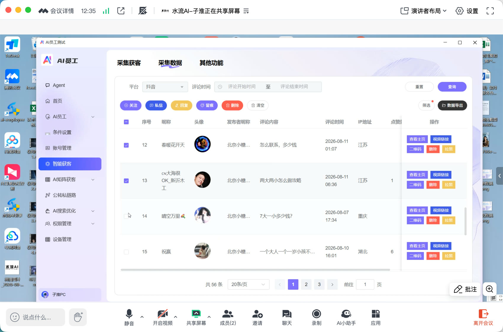
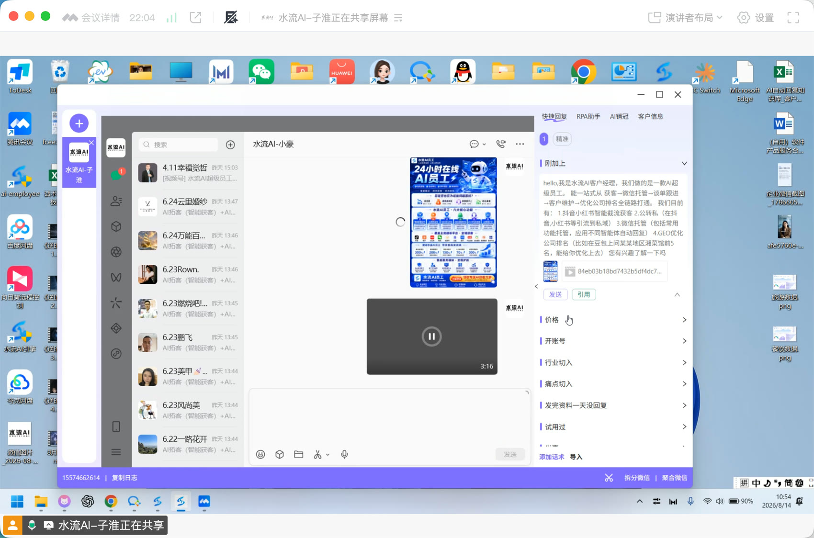
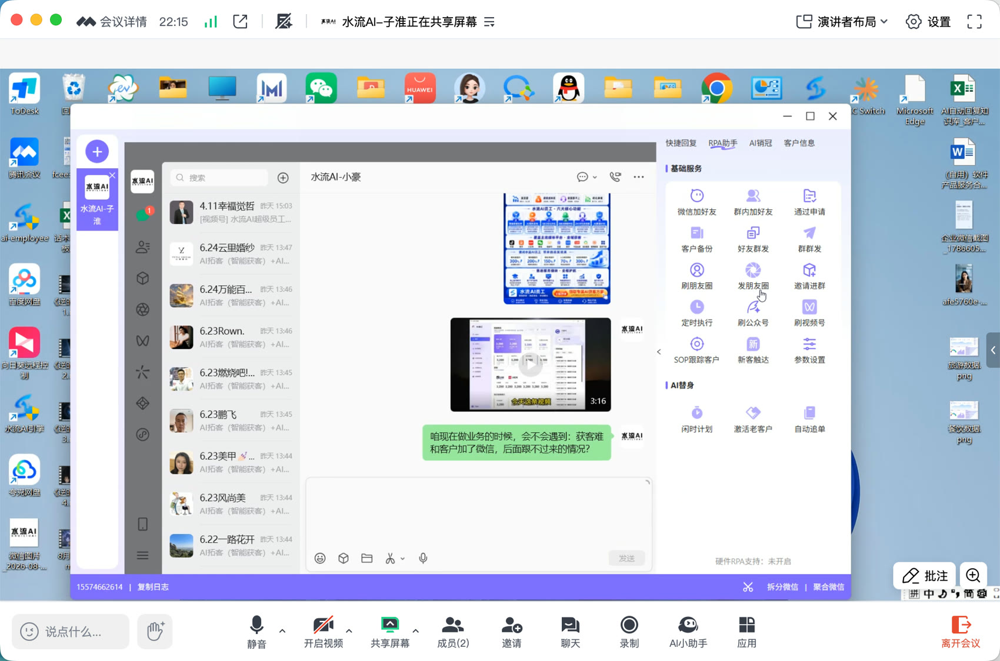
本次【口径】是「浏览器打开以后，电脑仍可以做别的事情」。
但 08-06 那次的实证截图上，水流跑起来时屏幕顶端有红字「模拟操作中，请暂停操作键盘鼠标」，浮层里还写着「Ctrl+Alt+Del 解除锁定」。
最可能的解释（0.6，可证伪）：两句话说的不是同一件事——浏览器抓取（独立浏览器窗口跑）不占用人机交互，而硬件 RPA / 微信托管（真接管鼠标键盘）会锁住。「硬件RPA支持：未开启」和「隐藏模式」两个开关正好是这条假设的落点。
零假设：如果这条不成立，那么「模拟操作中请暂停键鼠」应该在任何任务下都会出现，或者根本不该有「硬件RPA」这个词。验证方式（一句话）：「跑微信托管的时候，这台电脑还能同时用来做别的事吗？硬件 RPA 开启后有什么不一样？」
③ 是否依赖电脑 / 插件 / 脚本
- 依赖客户端：是，必装。
- 依赖用户写脚本 / 装插件：否，全部材料里未见任何要用户配脚本、装浏览器插件的环节。
- 依赖电脑常开：是——【口径】「要一直开机」。
- 手机侧：装同一个水流软件、由电脑下发指令 → 属于「电脑控制手机」，不是手机自跑；连接方式（USB / 局域网 / 远程）本轮未确认，已列入待问。
④ 实际操作流程
从截图能还原出一条完整链路：
- 设关键词 → 客户端弹浏览器，在抖音采集评论
- 采集数据表：字段为 序号 / 昵称 / 头像 / 发布者昵称 / 评论内容 / 评论时间 / IP地址 / 点赞数 / 操作；可按平台与评论时间区间筛选
- 勾选后批量动作：
关注私信回复留痕删除清空；行级动作：查看主页视频链接二维码删除拉黑 - 公转私链路（一级菜单单列一项）
- 微信聚合客户端接管：右侧侧栏四个 tab —— 快捷回复 / RPA助手 / AI销冠 / 客户信息
- SOP 跟踪客户：按好友逐条设置 SOP 计划，可看执行记录
⑤ 发送时间机制（本次拿到的最完整的一家）
三层叠加，而且三层都在界面上有对应控件：
| 层 | 控件 | 粒度 |
|---|---|---|
| ① 时间窗 | AI员工配置里的「工作时段」（开始时间–结束时间） | 每个 AI 员工一个营业时间 |
| ② 节奏模板 | SOP 模板：相对偏移 + 绝对时刻混合当天 0小时30分后 → 1天后 08:30 → 7天后 08:30 → 15天后 08:30，每档发 1 条自定义内容 | 按好友挂计划，可查执行记录 |
| ③ 任务调度 | RPA 助手的「定时执行」+ AI替身分组里的「闲时计划」 | 把重活挪到机器空闲时段 |
| 附 | 养号任务有独立的「养号时长」（15 分钟） | 单次任务时长 |
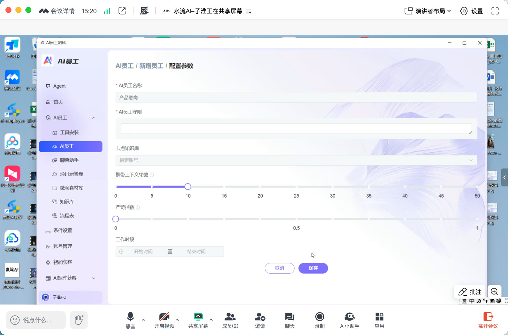
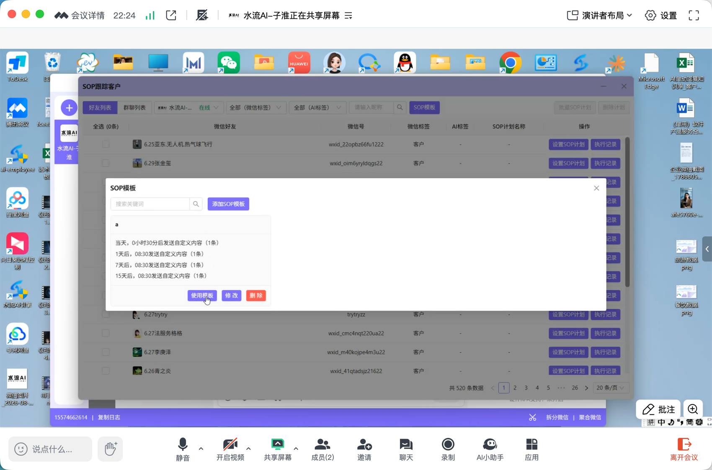
对我们的含义：「当天+30分钟 / 1天 / 7天 / 15天」这套默认节奏，本身就是一份可以直接拿来对标的行业基线——我们的沉默客户跟进目前没有等价的「节奏模板」概念，只有单次生成。
⑥ 实测数据
| 指标 | 数值 | 来源 |
|---|---|---|
| 单次采集量 | 56 条评论（20 条/页 × 3 页） | 【实证】 |
| 私域好友规模 | SOP 跟踪客户 520 条 | 【实证】 |
| 上下文轮数 | 滑杆 0–50，演示时置于 约 10 | 【实证】 |
| GEO 收录完成率 | 3%（100 个目标完成 3 个）；8 个 AI 平台 3 个各收录 1 条，5 个为 0 | 【实证】 |
| 流程节点数 | 当前配置 3 个（新客开场白 / 痛点 / 产品意向） | 【实证】 |
| 价格 | 2,980/年（1账号·绑20平台号）· 9,980/年（5账号·不限绑定）· 设备租赁 300/月押1000 500 元试用一个月，全功能，续费 88 折（≈2,622） | 【实证】+【口径】 |
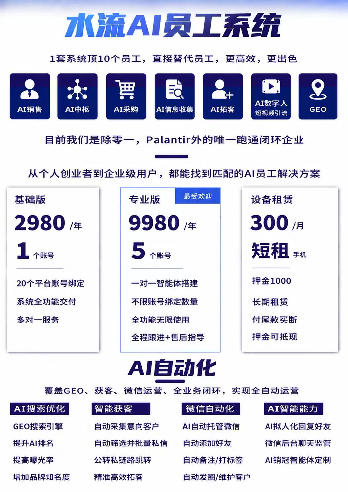
⑦ 信息补充（文档里单列的几条，逐条落位）
这几条在调研文档里是以「信息补充」单列的，不属于六段中的任何一段，但都会影响判断，所以单独收在这里。
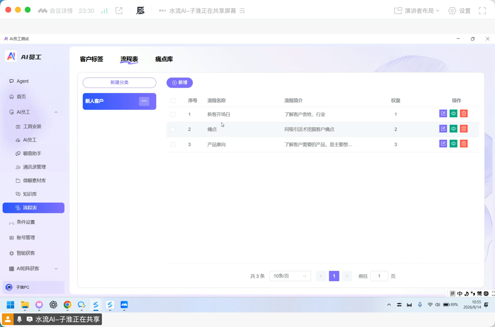
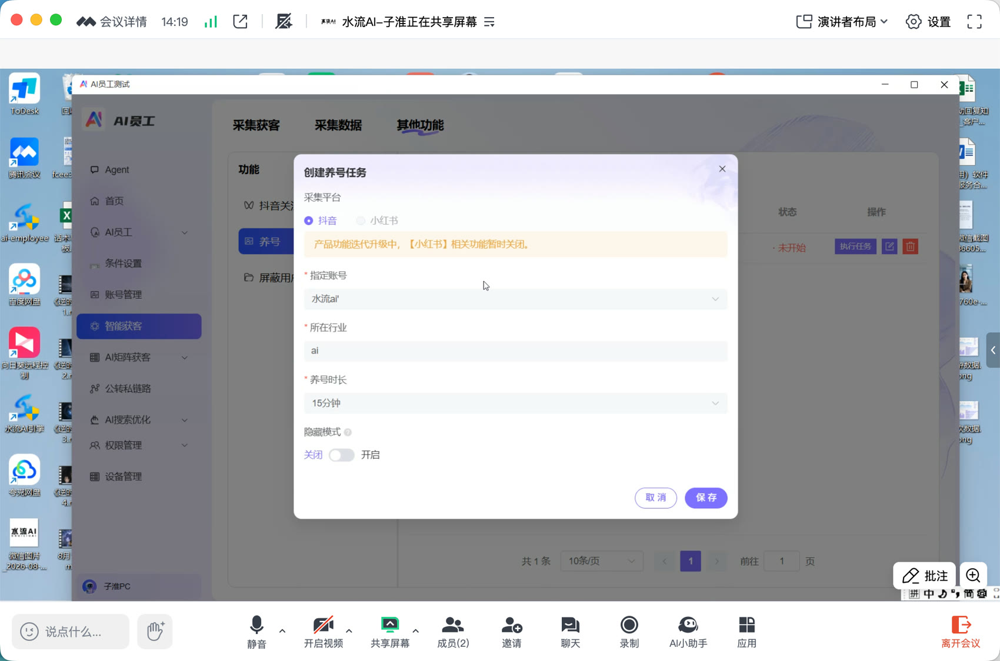
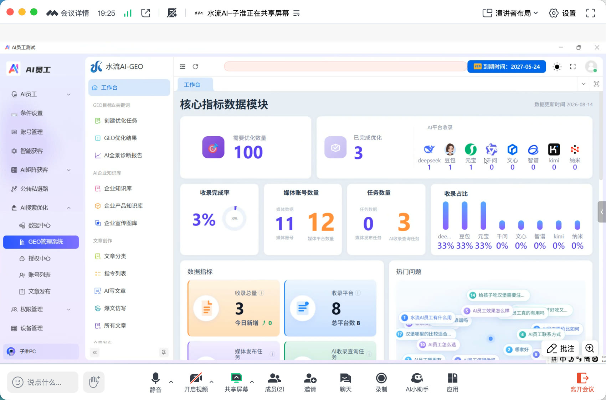
| 补充点 | 实际是什么 | 为什么值得单列 |
|---|---|---|
| 微信聊天界面 | 是自研的微信聚合客户端（截图 3–5）：左侧竖排挂多个微信、中间仿微信会话、右侧常驻侧栏四 tab（快捷回复 / RPA助手 / AI销冠 / 客户信息），底部「拆分微信 ｜ 聚合微信」 | 这条直接改写了 08-10 的判断（原以为是驱动原生微信）。聚合壳意味着它自己实现了多开或协议，风险特征与操作原生微信不同 |
| AI 自动回复的运作方式 | 【口径】「能按照自己设定的回复流程去走，到哪个节点会跳转」；【实证】对应的配置端就是「AI员工 → 流程表」，当前分类「新人客户」下 3 个节点带权重（新客开场白1 / 痛点2 / 产品意向3），同屏还有「客户标签 / 痛点库」两个 tab | 说明它不是纯 LLM 自由对话，而是「节点流程 + AI 生成话术」的混合体——节点是人配的，话术是 AI 生成的。这比今立的纯关键词高一档，比我们的语义打分低一档 |
| 养号功能，可批量 | 独立的「创建养号任务」：采集平台（抖音 / 小红书已灰）· 指定账号 · 所在行业 · 养号时长 15 分钟 · 隐藏模式开关；任务列表带状态与「执行任务」按钮 | 两层价值：① 它把「养号」当成一个可排期的任务类型，不是附赠动作；② 「隐藏模式」这个开关是全页最关键的线索之一，很可能就是「占不占屏幕」的总闸 |
| GEO 功能 | 一整套嵌进客户端的「水流AI-GEO」子系统：工作台 / GEO目标&关键词（创建优化任务·优化结果·AI全景诊断报告）/ AI企业知识库（企业知识库·产品知识库·宣传图库）/ 文章创作（分类·指令列表·AI写文章·爆文仿写）/ 文章发布 | 它有自己独立的 VIP 到期时间（2027-05-24）和账号头像 → 疑似第三方系统贴牌0.6。而且演示账号上的实况是收录完成率 3%，8 个 AI 平台里 5 个为 0——这是目前唯一一个来自竞品自己后台的 GEO 效果数字 |
| 费用问答里没被回答的那半句 | 调研时问的是「一个账号绑定 20 个平台是什么意思？有没有售后服务？」——销售只答了前半句（10 个抖音号 + 10 个快手号），售后服务这半句没有答案 | 而价格图上写着基础版是「多对一服务」、专业版才是「一对一智能体搭建 + 全程跟进&售后指导」。2,980 那档到底有没有人管，是个悬空问题，已进待问清单 |
① 「AI 记忆到底几轮」不必存疑了。工作人员说十多轮、页面显示 50 轮——两个都对：50 是滑杆上限，10 是演示时的当前值。这是个可调参数，不是固定能力。
② 「500 试用和年费什么关系」有答案了。500 = 试用一个月（全功能），之后按年费续、打 88 折；「一个账号绑 20 个平台账号」= 1 个水流系统席位下可挂 20 个平台号（销售举例「10 个抖音号 + 10 个快手号」），与价格图完全一致。08-06 挂了两次的这个问题可以结案。
实测数据（我们自己跑的）
水流是实测首选对象：500 元就能试用一个月，是九家里试错成本最低的。要测的三件事：① 发送时间/间隔的真实分布（对照它「工作时段 + SOP 模板 + 定时执行·闲时计划」三层配置的实际表现）；② 「暂不支持实时监测」是否属实——不点采集按钮，放一天看会不会有新数据；③ 硬件模式下电脑是否真被独占。测法：拿一个测试抖音号 + 一台闲置 Windows 机，发一批私信、逐条掐时间戳。
对我们的价值
- 时间机制是九家里最完整的对照组。它有「工作时段 + SOP 模板（当天30分/1天后08:30/7天后/15天后）+ 定时执行·闲时计划」三层完整配置——我们对外讲发送节奏时，这是必须对齐的标杆；实测对比表里它排第一个。
- 「手动触发采集」是我们最好讲的差异点。不用贬低对方，演示一句「我们的采集不用人点」即可。
- 个微全托管是高风险路线的活样本。亿销云那份合规 PDF 正是把「协议 / 模拟器方案」列为高封号风险——水流的微信聚合壳属于此类。甲方问「你们为什么不做个微托管」时，答案就在这里。
- 它有 SOP 没质检——我们「企微自动接待」的打分题 + 主管视角是它没有的一层。
（留白：实测记录 / 走访笔记 / 批注写这里。直接改本页 HTML 中 id 为 edit-shuiliu 的块，或让 Claude 填。）
02 · 今立智能 · 超级智剪
短视频工业化生产引擎 —— 纯电脑安装包，靠「官方合作」而不是靠模拟点击
简介
Web SaaS + 本地安装包（超级智剪），九家里内容生产做得最深、也最像正规军的一家。08-06 对它是零结论，08-10 用 38 分钟销售演示 + 22 页官方手册补齐——结论：它根本不在获客赛道上，它在内容工业化赛道上，只是终点也指向获客。获客能力只存在于产品介绍 doc 的一段文字里（「全域互动管理中心」），38 分钟演示中没出现过一次评论采集、私信触达、加微的界面（置信度 0.55）。它把风险赌在「抖音官方合作商」这一句话上，而私信回复的真身是一张 Excel 关键词表——技术档次和叙事档次差得很远。文档标题自带「有家居服务经验」，官方案例「美丽雅 300 家门店」形状与我们几乎一样。
功能介绍（视频 · 界面截图 · 官方硬数字，并入自 08-10）
08-06 那份对今立是「零结论」。这次补齐了：38 分钟销售演示录屏 + 22 页官方手册 PPT + 产品介绍 doc + 导师私教课说明 + 核心竞争优势脑图。结论是——它根本不在获客赛道上，它在内容工业化赛道上，只是终点也指向获客。


官方手册里的硬数字（22 页 PPT，2026-5 版）
| 指标 | 官方口径 | 备注 |
|---|---|---|
| 单条视频制作时间 | 压缩至 10 分钟以内 | 对比传统 3–5 天 |
| 日最大处理量 | 8,000 条 / 日 | 本次调研的产能天花板 |
| 人力成本 | 下降 60% | — |
| 掉号率 | 1.2%（行业平均自称 25%） | 与客户案例页自相矛盾，见存疑清单 |
| 发布成功率 | 98%（云发布页写 96.75%） | 两页数字不一致 |
| 声音克隆 | 100 种预设音色、情感贴合 4.7/5.0、延迟 <200ms | 自称自研，但脑图写唇形同步用飞影/硅基 |
| 账号月均异常 | 0.2 次，异常自动恢复率 99.3% | — |
| 客户续费率 | 85%，团队孵化周期 90 天 | 配 30-60-90 天陪跑计划 |
手册第 18 页：「美丽雅（家居品牌）」——接入前单点独立运营，接入后 300 家门店全部接入矩阵管理系统；掉号率从 >30% 压到 7.3%；内容同质化 → 智能去重混剪，主账号权重提升 62%。
这是九家材料里唯一一个「多门店 × 家居」的公开案例，形状和有大有小几乎一样（只是 300 家 vs 20+ 家）。含义有两层：① 甲方极可能已经听过这个案例，我们要能回答「我们和今立在这个场景上差在哪」；② 它的口径是门店数 × 账号稳定性 × 主账号权重，全是内容侧指标，一个线索/成交指标都没有——这恰恰是我们能接上去的地方。
产品是真的，做的是内容工厂；「获客」是话术层的延伸，不是产品层的能力
38 分钟演示里全程没有出现过一次评论采集、私信触达、加微的界面。获客能力只出现在补充的产品介绍 doc「引擎三」里，原文是：「全域互动管理中心：将所有视频下的评论、私信聚合至统一平台，由 AI 进行初步筛选、分类、自动回复（如发资料、引导入群）」。这段文字如果为真，它就伸到了链路第 ③ 段；但没有任何界面佐证，所以本页把它记为 0.55。
零假设：如果这条能力是成熟的，销售在 38 分钟里没有理由不演——他连「AI 配音音色」都放了三段试听。可证伪方式：直接要求演示「全域互动管理中心」那一屏。
机制拆解（① 用什么设备 → ② 怎么控制/运行 → ③ 依赖 → ④ 操作流程 → ⑤ 发送时间机制 → ⑥ 实测数据 → ⑦ 补充）
它把风险赌在「我是抖音官方合作商」这一句话上；而私信回复的实现却是一张 Excel 关键词表——技术档次和叙事档次差得很远
① 用什么设备
纯电脑端。【口径】「电脑安装包的形式」；「安装包有更新的话，打开电脑软件后会自动弹出更新提示」。全部材料未出现任何手机侧要求——这与水流（小红书必须用摩托罗拉 S50）形成鲜明对比。
② 怎么控制 / 运行
| 环节 | 机制 | 依据 |
|---|---|---|
| 客户端 | Windows 安装包，自带更新检查 | 【口径】 |
| 风控路线 | 「抖音官方合作商，和抖音合作，交钱，所以私信不容易被封禁/限流」——如果属实，它走的是官方授权通道，而不是模拟人工点击 | 【口径】0.45 未验证 |
| 私信自动回复 | 关键词匹配表：一张 Excel，A 列关键词、B 列回复，工作表页签为「话术流程 / 关键词」。不是语义理解 | 【实证】截图 10 0.9 |
| 前后台 | 「电脑自动化操作和使用者使用电脑不冲突」 | 【口径】，无界面证据 |
| 响应速度 | 「秒速回复用户」——事件触发式，不排队 | 【口径】 |
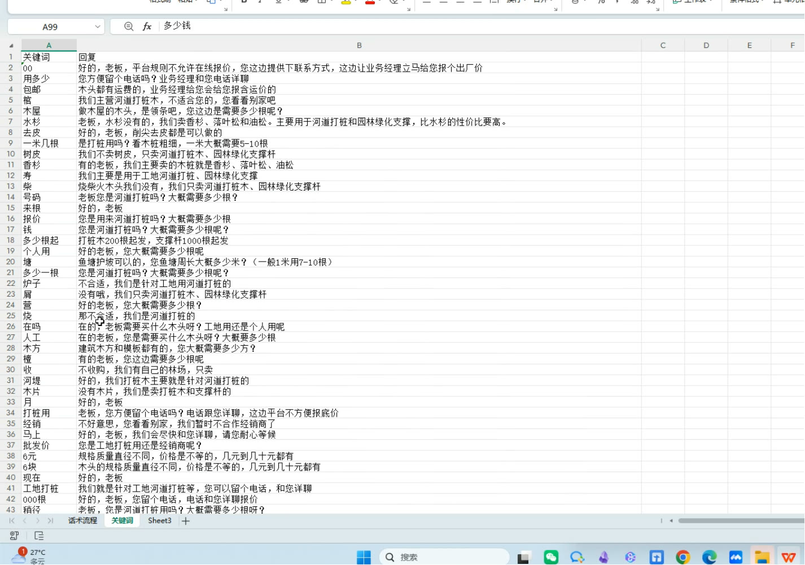
00 用多少 包邮 一米几根 多少根起 在吗 报价 6元 000根…更值得注意的是里面有一整批排除词：
棺 寿 柴 炉子 烧 檀 木屋，对应的回复是「不合适，我们是河道打桩的」「烧柴火木头我们没有」。说明这张表既要写正向应答，也要靠人工穷举把不相关的客户挡掉。③ 是否依赖电脑 / 插件 / 脚本
- 依赖客户端：是。
- 依赖用户写脚本：不写代码，但要人工维护关键词表——这实际上就是「用户提前配置」的另一种形态，而且维护量不小（一个单品类工厂就 43+ 行）。
- 依赖手机：否。
- 依赖电脑常开：本轮未确认（已列入待问）。既然是安装包 + 秒回，大概率要常开，但没有证据。
④ 实际操作流程
装包 → 绑定平台账号（08-10 材料里销售强调走「官方二维码授权，不是任何第三方」）→ 维护关键词表 → 私信/评论按关键词触发自动回复 → 内容侧走超级智剪那一整条（脚本 → 素材 → 数字人 → 混剪 → 时间轴工程 → 创意计划 → 多渠道发布）。
⑤ 发送时间机制
目前只有一条【口径】「秒速回复用户」，即事件触发、无延迟。本轮材料里没有看到任何时间窗口、频率控制、节奏模板、冷却时间的配置项——而水流那边这三样都有界面。
这既可能是「没做」，也可能是「没演到」。但对家装场景是个实质问题：秒回陌生私信本身就是平台风控最敏感的特征之一，一个连频控都没有的系统，和它宣称的「官方合作所以不封号」是互相依赖的——如果官方合作那句话是假的，这套就没有第二道防线。
零假设：如果它有频控，销售在被问到封号问题时最自然的回答应该是「我们有频率控制」，而不是「我们和抖音有合作」。可证伪方式：直接问「一个号一天最多发多少条、间隔怎么设」。
⑥ 实测数据
| 套餐 | 基础版 | 进阶版 | 尊享版 | 旗舰版 | ||||
|---|---|---|---|---|---|---|---|---|
| 系列 | 2026 | 2026 Pro | 2026 | 2026 Pro | 2026 | 2026 Pro | 2026 | 2026 Pro |
| 价格（1 年） | 13,800 | 19,800 | 29,800 | 36,000 | 55,000 | 98,000 | 152,000 | 290,000 |
| 账号授权数 | 20 | 50 | 100 | 200 | 300 | 500 | 1000 | 2000 |
| 视频合成点数 | 1万 | 2万 | 4万 | 6万 | 10万 | 20万 | 50万 | 120万 |
| 软件登录数（席位） | 1 | 3 | 6 | 10 | 10 | 20 | 40 | 60 |
| 储存空间 | 1T | 1T | 2T | 2T | 2T | 5T | 10T | 20T |
| 1v1 陪跑私教课 | 0 次 | 2 次 | 4 次 | 5 次 | 7 次 | 8 次 | 10 次 | 12 次 |
| 续充（元/条） | 0.9 | 0.8 | 0.7 | 0.68 | 0.65 | 0.6 | 0.55 | 0.5 |
| 特别服务 | — | 上门实操培训 · 专线部署加速 | 上门实操培训 · 专线部署加速 · 定制开发优先 | |||||
另：全档位均含「专属服务群（全年实时 1 名运营 + 2 名指导）」与「线上直播课（全年不限次，四大专题）」；1v1 私教内容固定为四项：账号分组规划 / 脚本创作指导 / 过程诊断复盘 / 内容优化策略。
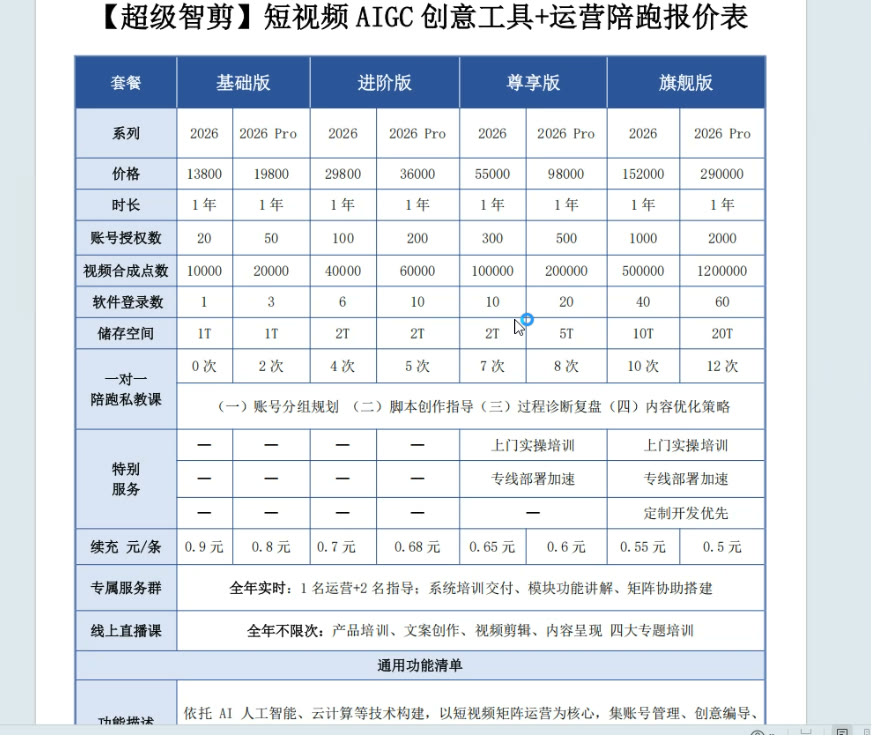
① 它把「算力」翻译成了人话
「视频合成点数」+「续充 0.5–0.9 元/条」——点数基本等于条数。基础版 13,800 含 1 万条，折合 1.38 元/条；超出后续充 0.9 元/条。这是我们看过的九家里第二个把算力说清楚的（第一个是亿量的「5,000 元 ≈ 900 分析小时」）。知了的「7,650 算力币/秒」和鲲炬的「赠 5,000 万算力」相比之下就是纯黑箱。
② 对有大有小的实际落点是 3–5.5 万，不是 1.38 万
20 家店 × 3–4 人 × 3 平台 ≈ 180–240 个账号，基础版 20 个、进阶版 100/200 个都不够或刚够——实际要买进阶版 Pro（200 个，36,000）或尊享版（300 个，55,000）。跟黑谷报的 2.75 万是同量级、偏高一档。
③ 私教课次数是分档卖的，基础版是 0 次
0 → 2 → 4 → 5 → 7 → 8 → 10 → 12 次逐档递增。这印证了 08-10 那条判断：陪跑是第二个利润池，而且今立是明码分层卖的。买最低档＝只给工具不给人。
⑦ 信息补充
| 补充点 | 内容 | 怎么用 |
|---|---|---|
| 安装包自动更新 | 【口径】「安装包有更新的话，打开电脑软件后会自动弹出更新提示」 | 说明是有人维护的商业客户端，不是一次性交付的脚本包。对比水流：水流的更新机制本轮没问到，可以补 |
| 个人意见：内容创作界面可以参考今立 | 调研人在文档里单独记了这一句 | 这条我认同，而且可以说得更具体。今立值得抄的不是「有哪些功能」，是它把内容生产拆成了一条有先后、每步都能停下来改的流水线：视频拆解 → 脚本 → 素材 → 数字人 → 真时间轴工程 → 模板库 → 创意计划 → 多渠道发布。 我们「短视频获客」现在是 4 屏「今天要做」+ 3 屏「设置与工具」，中间从「选参考视频」直接跳到「等系统制作」，缺的正是中间那段可干预的编排。要抄就抄这一段的分步与可回退，不要抄它的产能口径（8,000 条/日对 20 家店没有意义） |
| 家居服务经验 | 文档标题里就写了「今立智能——电脑端，有家居服务经验」 | 对得上 08-10 从官方手册里挖到的案例：美丽雅（家居品牌）300 家门店全部接入矩阵管理，掉号率从 >30% 压到 7.3%、主账号权重 +62%。甲方极可能已经听过这个案例，我们要准备好「我们和今立在多门店家居这个场景上差在哪」的回答 |
「重复发信息的情况，也存在」「上下文处理不好」。
这两条和「关键词表驱动」是同一件事的两面——关键词匹配天然没有会话状态，所以既会重复触发，也接不住上下文。这是我们在同一场景下可以正面打的点，而且是他们自己说的，不用我们去论证。
实测数据（我们自己跑的）
要测的两件事：① 私信「秒回」是否真的无频控——连续触发关键词看是否被限流；② 「电脑自动化操作和使用者使用电脑不冲突」这句口径（无界面证据）。障碍：起步价 13,800/年，无公开试用口径，实测前需先找销售要 demo 账号。
对我们的价值
- 内容流水线值得抄——抄「分步与可回退」，不抄产能口径。它把内容生产拆成有先后、每步都能停下来改的流水线（视频拆解 → 脚本 → 素材 → 数字人 → 真时间轴工程 → 模板库 → 创意计划 → 多渠道发布）。我们「短视频获客」从「选参考视频」直接跳到「等系统制作」，缺的正是中间那段可干预的编排。8,000 条/日对 20 家店没有意义。
- 美丽雅案例必须备好应答。甲方极可能听过「300 家门店、掉号率 7.3%、主账号权重 +62%」——注意它的口径全是内容侧指标，一个线索/成交指标都没有，这正是我们接上去的地方。
- 它自己承认的两个短板可以正面打：「重复发信息的情况，也存在」「上下文处理不好」——关键词表天然没有会话状态。我们的语义理解 + 会话上下文是直接对位优势，而且论据是他们自己说的。
- 报价表把「算力翻译成人话」（点数≈条数、续充 0.5–0.9 元/条），我们对外定价叙事可以参考；对有大有小的实际落点是 3.6–5.5 万/年（180–240 个账号），不是宣传的 1.38 万。
（留白：实测记录 / 走访笔记 / 批注写这里。直接改本页 HTML 中 id 为 edit-jinli 的块，或让 Claude 填。）
03 · 知了指挥官
视频工厂 + 多设备群控 —— Web 控制台当大脑，手机只要联网就能被指挥
简介
Web 控制台 + 手机群控，产品标题栏印着「5 台设备 × 4 平台」。它是「一个云端大脑 + 一台被托管的普通安卓机」：1 指挥官 = 1 电脑 + 1 手机，安卓不限型号、不用刷机，手机不插线、只要有网就能收指令；跑起来手机被独占，电脑还能干别的。一次性买断 4,980 / 5,980 / 6,980 / 9,980。九家里唯一同时做 B 端与线下的一家：企业数据库获客（按成立年限/注册资本筛 B 端名单）、地图获客（高德 + 大众点评 POI）、碰一碰 NFC、语音指令——但对家装的适配度存疑：B 端名单和商户 POI 找到的是公司，不是业主。
规则是「选择客资来源 → 推送至设备 → 每台设备 5 人/天」。设备会坏、会被换、会同时被两个人用；分配单位必须是人或门店。20+ 门店同时跑，同一个抖音用户被多家店重复私信是必然结果——对照我们：claim 锁按 (org, 抖音用户) 4 小时锁定。0.70
功能介绍（视频 · 界面截图，并入自 08-06 / 08-10）
11 分钟的演示里，视频生产占了近一半。它把自己的叙事定成「推广 → 获客 → 搜索 → 成交 四大生态已经全部打通」，落到界面上是一个 Web 控制台在指挥 N 台手机。
功能骨架（左侧菜单实录）
工作台 · AI项目中心 · AI视频中心 · 移动端获客 · PC端矩阵获客 · GEO优化 · 我的AI员工 · 全域获客工具 · 设备管理。
1 · AI 项目中心 —— 他们的「知识库」在最前面
所有任务开始之前先建「项目」，填产品介绍、优势、核心卖点。解说原话：「在所有的任务开始之前……后面不管是生成内容，都会更加符合你们的行业和业务。」这是知识库前置到内容生产链路最前端，比水流把知识库放在客服侧更靠前。
2 · AI 视频中心 —— 一键成片是主力，文生视频是配菜
一个任务里一次填 5 条视频标题 + 多段解说词 + 从素材库勾 10 条素材，批量出「完全不重复的优质视频」，自带字幕横幅解说、自动规划镜头，「基本上不需要任何专业剪辑的能力」。销售的原话是「做短视频拼的不是一条爆款，量变最终才能产生质变」。


① 企业获客：直连企业数据库，按成立年限（1–3 年）、注册资本（100–200 万）、行业筛 B 端客户名单。
② 地图获客：高德 + 大众点评 POI 抓取，「有些做餐饮、美业、汽车等等」。
③ 语音指令：「一句非常简单的语音指令去告诉指挥官」——手机端可查今天发了多少视频、每个 AI 员工在做什么。
文档记着：「评论的时效性没有具体说明，只说抓到了就能立马私信。」另外，客资推送规则是「推送至设备 → 按人数分配」，全程没有出现跨设备 / 跨门店的去重语义 0.7。零假设：如果他们有去重，配置页应当出现「已触达排除」「N 天内不重复」这类选项——演示里这一屏完整展开过，没有。20+ 门店同时跑，同一个抖音用户被多家店重复私信是必然结果。
机制拆解（① 用什么设备 → ② 怎么控制/运行 → ③ 依赖 → ④ 操作流程 → ⑤ 发送时间机制 → ⑥ 实测数据 → ⑦ 补充）
它是「一个云端大脑 + 一台被托管的普通安卓机」：手机不插线、只要有网就能收指令，但跑起来手机就归它了；而电脑那台还能照常干活
① 用什么设备
1 个「指挥官」= 1 台电脑 + 1 台手机。【口径】账号绑定不限数量，这里的账号指抖音 / 快手 / 小红书 / 视频号这几个平台号。
手机：安卓，不限型号，不需要刷机。【实证】销售在片中还专门强调过一段（见 ⑦）。
电脑：Windows 和 macOS 都支持——【实证】「获客PC端」顶部并排两个 tab：电脑AI数字员工（Windows系统） / 电脑AI数字员工（mac系统）。这一点三家里只有它做到。
② 怎么控制 / 运行
| 环节 | 机制 | 依据 |
|---|---|---|
| 大脑 | Web 控制台「知了指挥官」。左侧一级菜单：工作台 / AI项目中心 / AI视频中心 / 移动端获客 / PC端矩阵获客 / GEO优化 / 我的AI员工 / 全域获客工具 / 设备管理 | 【实证】 |
| 手机怎么连 | 不用插电脑，只要有网就能用；下载安装运行即可，不用再做别的准备。不需要刷机、不限安卓机型 | 【口径】0.85（销售明确答复） |
| 手机上跑什么 | 装 App 后在真实抖音里执行真实动作：刷视频、进评论区、进对标账号主页点「已关注」「发私信」、在私信列表里逐条打字回复 | 【实证】控制台旁常驻一块手机实时画面，动作过程完整可见 |
| 电脑上跑什么 | 独立的「获客PC端 · AI数字员工」，跑同一套任务的 PC 版：关键词获客 / 白名单获客 / 链接获客 / 命中触达 / 关注同行 / 同行视频留言 / 内容发布。销售原话：「无非只是执行的设备不同」 | 【实证】+【口径】 |
| 第三个入口 | 整套系统打通到微信小程序：底部 tab 为 对话 / 内容创作 / 传播中心 / 设置；内容创作里「手机端发布」与「PC端发布」并列，首页有「手机获客 / PC获客」两个入口卡 | 【实证】 |
| 前台占用 | 运行时电脑可以做别的事情，手机不能。电脑软件和手机还可以分别做不同的任务 | 【口径】0.85 |
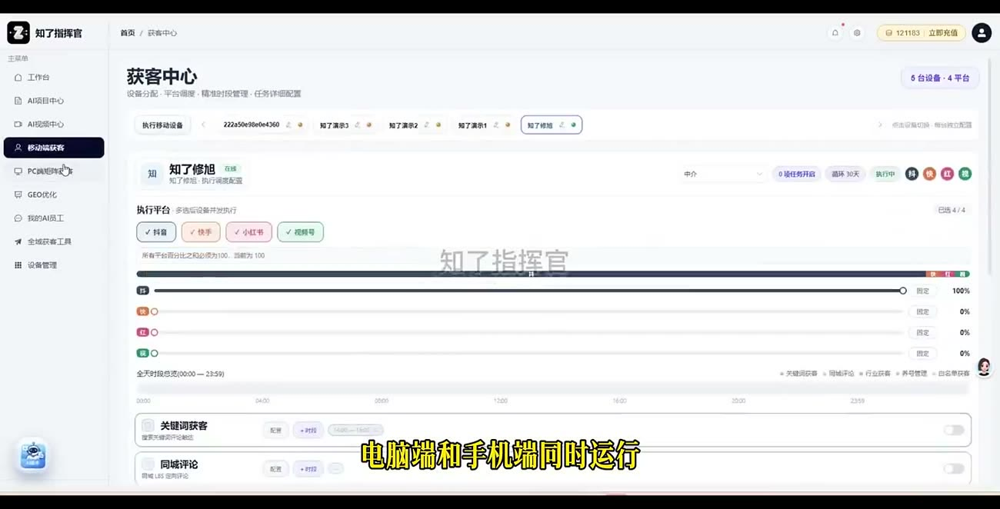
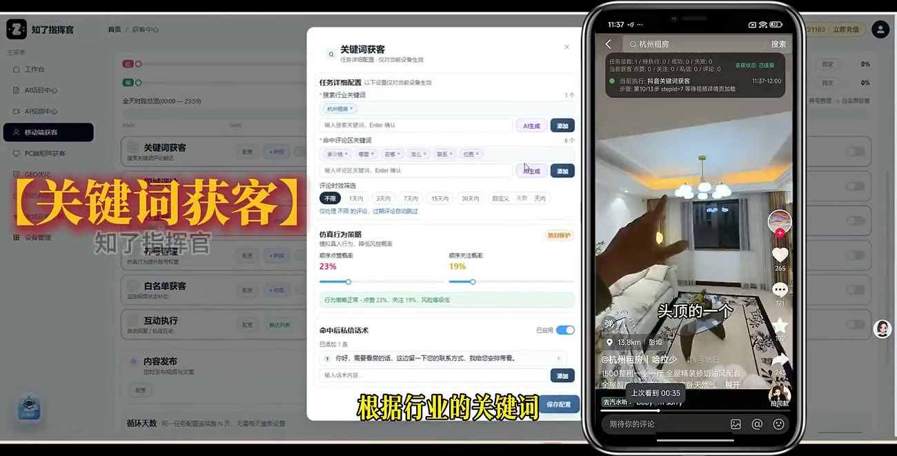
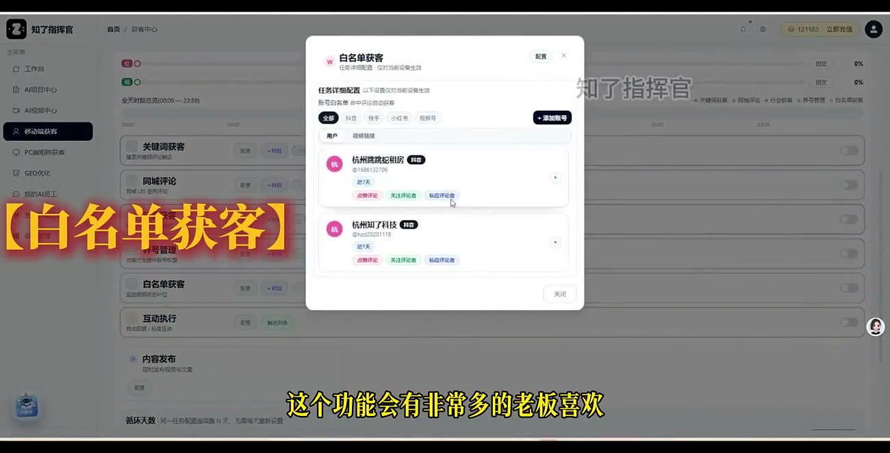
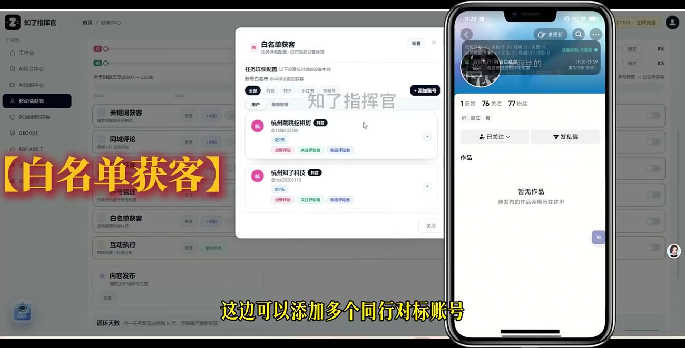
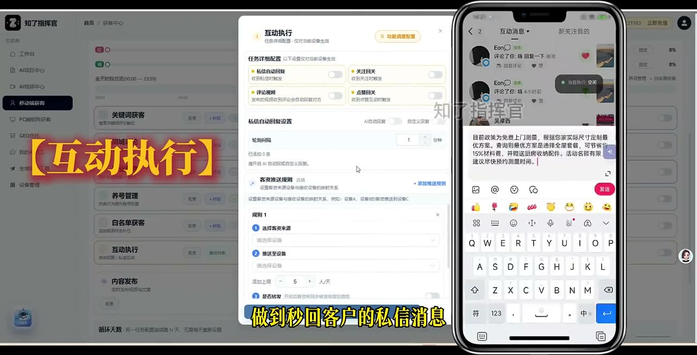
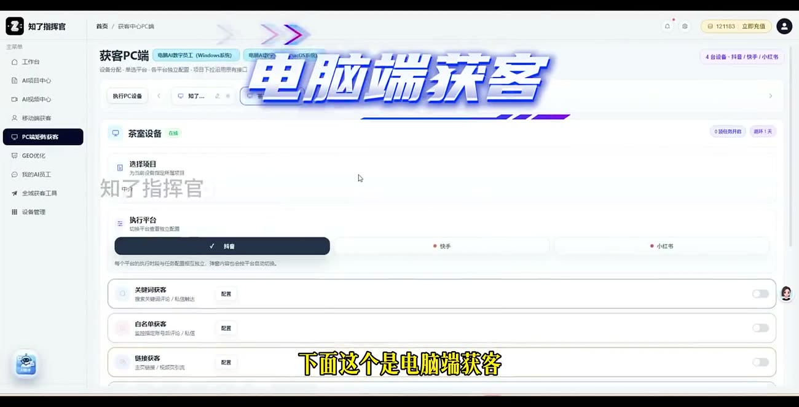
Windows系统 / mac系统（三家里唯一支持 Mac）；右上标「3 台设备 · 抖音/小红书/快手」；执行PC设备可下拉切换多台。任务列表与手机端几乎一一对应，多了「链接获客」。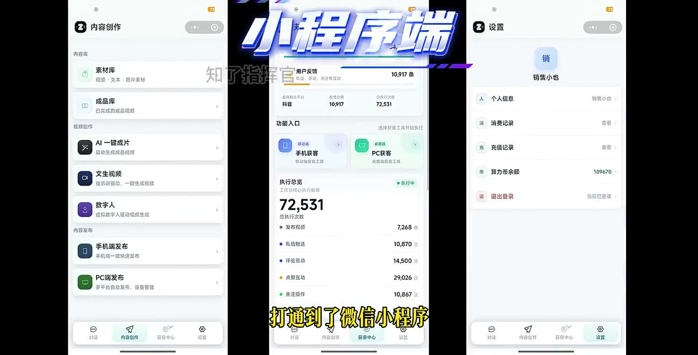
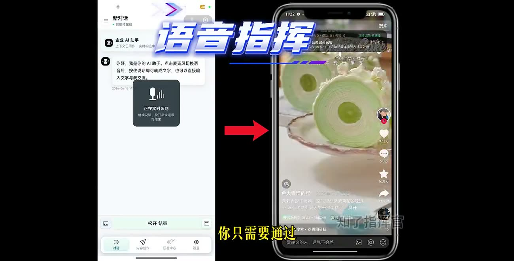
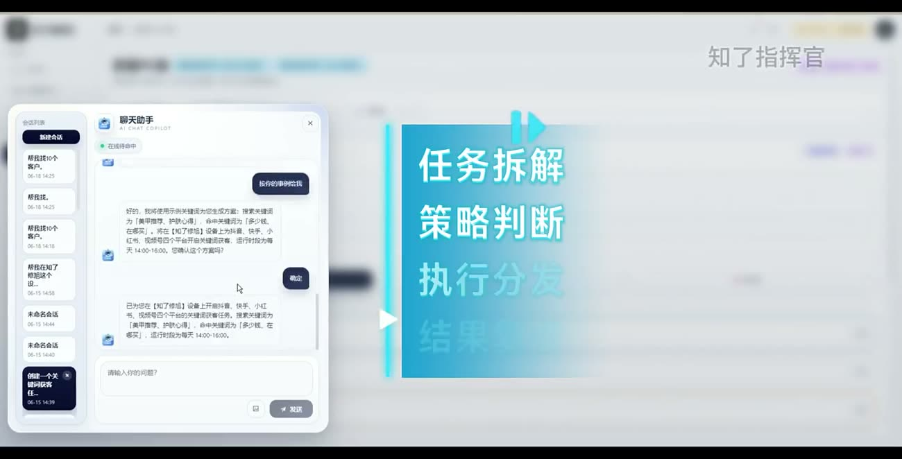
③ 是否依赖电脑 / 插件 / 脚本
- 手机是否必须连电脑：不必须。只要有网就能用——这是它和水流（电脑给手机发指令）最本质的区别。
- 要不要刷机 / 挑机型：都不要。安卓不限型号。
- 要不要用户写脚本 / 装插件：不要。「下载安装运行即可，不用再做别的准备」。
- 电脑要不要常开：看你让谁干活——电脑端任务要电脑开着，纯手机端任务理论上不需要（0.55 推断，未确认，已进待问）。
- 手机能不能同时自用：不能，跑起来手机就被占了。
④ 实际操作流程
- 在获客中心选执行设备（手机 / 电脑，同一排 tab 里切）
- 勾执行平台：抖音 / 快手 / 小红书 / 视频号
- 逐个打开任务开关：关键词获客 · 同城评论 · 行业获客 · 白名单获客 · 互动执行 · 养号管理 · 内容发布
- 每个任务点进去配参数：行业类别、关键词、同城距离档、仿真行为策略、命中回复话术（可 AI 一键生成）
- 设全天时段与循环天数 → 保存
- 手机 / 电脑在真实 App 里执行，控制台按任务显示完成百分比
- 一旦检测到客户留资，自动推送到指定的微信群
另有一条并行的省力路径：在小程序或电脑端「AI助手」里用一句话（甚至语音）下指令 → AI 拆成方案 → 点「确定」→ 直接派给设备。
⑤ 发送时间机制
| 层 | 控件 | 粒度 |
|---|---|---|
| ① 时间窗 | 「全天时段 00:00–23:59」（可改） | 整个获客中心一个营业时间 |
| ② 周期 | 「循环天数」+ 日期区间（演示为 2026-04-18 → 2026-05-18，循环 30 天） | 任务跑多少天 |
| ③ 频控 | 私信自动回复的「轮询间隔（分钟）· 每次上限 · 每天上限（人/天）」 | 三家里唯一把频控做成显式数字的 |
| ④ 拟真 | 每个任务独立的「仿真行为策略」：拦截概率 · 顺序执行概率（实测见 ⑥） | 用概率打散行为，避免机械规律 |
| ⑤ 即时 | 互动执行是秒回（事件触发，客户一回私信就应答） | 不排队 |
这是三家里时间机制第二完整的（水流第一）：水流强在「跟进节奏模板」（1天/7天/15天），知了强在频控与拟真的概率参数——两家补的是不同的洞。今立那格仍然是空的。
⑥ 实测数据
| 指标 | 数值 | 来源 |
|---|---|---|
| 累计执行总量 | 72,531 ＝ 发布视频 7,268 + 私信触达 10,870 + 评论互动 14,500 + 点赞 29,026 + 关注 10,867 | 【实证】小程序 |
| 算力余额 | 109,670 | 【实证】小程序设置页 |
| 仿真行为策略 | 拦截概率 23% / 61% / 62%（关键词 / 行业 / 同城）；顺序执行概率 19% / 16% / 15% | 【实证】三个任务弹窗 |
| 同城范围档 | 1 / 3 / 5 / 10 / 20 / 30 / 50 / 100 km | 【实证】 |
| 设备与平台 | 获客PC端「3 台设备」；小程序设备详情里四平台配比各 25% | 【实证】 |
| AI 上下文 | 「一般 AI 会翻上面五六条聊天记录」 | 【口径】 |
| 价格 | 一次性买断 4,980（1 指挥官）/ 5,980（2）/ 6,980（3 + 100 天陪跑）/ 9,980（5 + 全年陪跑） | 08-06 材料 |
⑦ 信息补充
| 补充点 | 内容 | 怎么用 |
|---|---|---|
| 全安卓机型适配（顺手把水流点了名） | 销售原话：「我们是目前行业里唯一一家可以做到全安卓机型适配的系统，不管你是华为、小米、OPPO、Vivo 还是其他任何安卓设备，全部都可以稳定运行。所以当同行还在做所谓自动化系统的时候，它对设备是有依赖的，必须要固定机型，而我们从一开始设计的初衷，就从底层做了全设备系统兼容。」 | 这段几乎是指着水流说的——水流的小红书获客锁死摩托罗拉 S50，亿销云要定制 ROM 工作手机。竞品之间互相点名的说法通常更可信（可证伪且有针对性），0.7。对甲方的含义很实在：知了不用为它单独买指定机型 |
| 虚拟定位 | 发布内容时可以挂虚拟定位——人在杭州，可以挂上海 | 【口径】。这是它「同城获客」的另一面：不在本地也能吃本地流量。对 20+ 门店是有用的（总部代发、挂各门店所在城市），但也意味着平台侧的定位不可信，属于灰度动作，要问清风险 |
| AI 自动驾驶 = 半自动与全自动的分界 | 销售原话：「前面这些功能都属于半自动，下面这个 AI 自动驾驶就是真正的全自动」——你只需要告诉系统我要什么客户、要多少，剩下的分析、执行、优化、复盘全交给 AI，它自己寻找效果最好的获客方式 | 难得有厂商主动承认自己大部分功能是半自动的。这句话可以直接拿来问其余各家：「你们哪些是半自动、哪些是全自动？」 |
| 语音指挥 + AI助手 | 小程序按住说话 → 实时转文字 → 指挥官自动拆解任务、分析方案；电脑端同款入口叫「AI助手」，能做任务拆解 / 策略判断 / 执行分发 / 结果复盘 | 但界面上有个「确定」按钮——方案出来要人点了才派下去。所以「语音一句话就自动干活」这个叙事，实际是「一句话出方案 + 人点确认」。这个形态反而和我们「AI 起草 + 店长确认」是同一路，可以引用为旁证 |
| 留资推送到微信群 | 一旦检测到客户留资，马上推送到你指定的微信群，「完全不用人工去操心」 | 这是个很轻但很实用的设计：不做通知中心，直接推到人已经在看的地方。我们的线索目前推 Lark，门店店长侧没有等价物 |
实测数据（我们自己跑的）
它的时间机制配置项是九家里最细的（全天时段 + 循环天数 + 私信轮询间隔/每次上限/每天上限 + 仿真行为概率），实测重点：① 按默认配置跑一天，记录真实发送时间分布，和配置项对得上对不上；② 「每台设备 5 人/天」的分配是否真的不去重——两台设备绑同一客资源，看同一个用户会不会被私信两次。买断制最低 4,980，无试用口径，需先谈。
对我们的价值
- 「按设备分配 + 无去重」是我们最硬的正面对比点——多门店场景下必然重复私信扰客，我们的 claim 锁是按人/组织的。这条不需要贬低，画一张分配示意图就能讲清。
- 它的频控配置面板值得抄形不抄魂：把「轮询间隔/每次上限/每天上限/仿真概率」做成用户可见的配置项，给了甲方安全感——我们的节奏参数目前是黑箱，对外至少要能展示。
- 5 台 × 4 平台的产能叙事 + 一次性买断定价，是甲方比价时的锚点；我们按门店/账号订阅的模式要能算出「同产能对应多少钱」。
- 碰一碰 NFC / 地图获客对家装无效的论证（找到的是公司不是业主）可以直接用在提案里，替甲方排除一条歧路。
（留白：实测记录 / 走访笔记 / 批注写这里。直接改本页 HTML 中 id 为 edit-zhiliao 的块，或让 Claude 填。）
04 · 鲲炬 AI
「一套系统顶一个营销团队」—— 叙事最完整、口径最激进的单机桌面 RPA
简介
本地部署到甲方电脑的桌面 RPA，不卖模块、卖「三个数字员工」（新媒体运营部 / 销售部 / 售后部），是九家里「替代员工」叙事做得最完整、自动化口径最激进的一家——「只要是你真人能做的 AI 员工都会做」。材料：59 分钟销售宣讲会全程逐字稿 + 技术负责人投屏实操 + 组织架构图。综合置信度 0.65：所有效果数字都来自客户群聊天截图，没有一张后台报表，演示两次卡网、抖音发布最后几步被跳过。价格：标价 9,800/年、宣讲会限时价 2,980/年（送 2 个月 + 5,000 万算力，详见⑥）——九家最低价带，但算力续费口径是黑箱。
功能介绍（视频 · 界面截图 · QA 实录，并入自 08-10）
材料是一场 59 分钟的销售宣讲会全程逐字稿（含 QA 与逼单环节）+ 技术负责人投屏实操演示 + 组织架构图。这是九家里叙事最完整、也最激进的一家：它不卖模块，卖「三个数字员工」。


它到底做哪些动作（QA 环节被追问出来的实话）
提问：「你在做一个私信的动作，其他动作不做？打比方点个赞，在他的作品上面做个评论，点一下他的主页。」
蒋振宇答：「针对于截流这个板块，它分为几种：第一种叫评论区的追评……其次是做一个主动的私信。然后私信如果不回复，他还可以去做一个私信的追杀——陌生人如果对方没有回复你，你只能发一条；如果他有过点进对话并且没有其他动作，他最多对话三条。所以他的私信追杀、首发私信、评论区追评、主页浏览这些动作，只要是你真人能做的 AI 员工都会做。」
这段有两个信息量：第一，他们清楚陌生私信的平台限制（未回复只能发 1 条），说明不是纯吹；第二，「真人能做的都能做」是本次调研里最激进的自动化口径，比水流「我们不破解平台规则」的表态往前了一大步。
四样投喂物与上岗时间
销售给的落地清单很具体，值得记下来当作行业标准做法：①自媒体账号（抖音/快手/视频号/小红书，数量不限，家人朋友员工的都能给）②产品资料 ③引流方案（最终目的是交定金还是到店）④真人销售的聊天记录，不限量——「他会学习你的沟通技巧、沟通逻辑、语气态度」。备齐后「快的话今天下午部署，今晚上岗；慢的话 1–3 天」。人设可自定义（「23 岁刚毕业的女孩、对客户特别温柔」）。
叙事完整度第一，但所有效果数字都来自客户群聊天截图，没有一张后台报表
宣讲里列举的战绩——「三天 100 个客资」「4 月 15 日曝光私信 753 条、种草评论 65 条、发布视频 5 条、添加好友 21 个」「每天 15–30 个新客资」「激活 500 老客一个月多卖 127 台车」——无一例外是微信服务群的聊天截图，不是系统导出的数据。演示环节两次卡在网络（「网络稍微有一点卡，我们直接跳过这一步」），抖音发布的最后几步被跳过了。
零假设：如果这条不成立，宣讲里应该出现至少一张「数据总览」的后台截图带完整字段——销售确实提到「每一套鲲炬都会搭载一个数据总览」，但通篇没展示过那一屏。可证伪方式：要一份真实客户的月度数据导出。
① 蓝标搜索词（合规风险最高的一个功能）：矩阵账号在同行视频下用「第三者推荐」话术刷正向评论（求助帖 + 追评安利）→ 诱导用户搜品牌 → 形成蓝标搜索词 → 自称「截流同行 80% 以上流量」。演示者自己类比「以前老板请水军 1.5–3 元/条」——本质是水军自动化。
② 剪辑与发布：AI 抽帧/定帧混剪规避查重、优化 2 秒跳出率/5 秒完播、自动挂搜索关键词；四平台账号不限量绑定；分「全自动托管」（素材→剪辑→发布→回复）与「半自动」（自有成片喂给它发）两档，操控客户自有第三方视频工作流要定制开发；新增图生视频（产品图直出宣传片，不加价）。
③ 销售/客服细节：销售分「销售型/顾问型」两类；客服做千人千面群发（按备注/历史聊天/行业改写称呼与文案）+ 朋友圈自动发圈/点赞/按内容生成评论。
④ 现场演示实证：发抖音走浏览器打开创作者中心逐步操作（上传→描述→封面→音乐→发布）——与水流/极域同属浏览器路线；多任务串行轮转（发布→微信群发→朋友圈→抖音评论→私信）。
主体自称上海鲲之翼人工智能（宣传片 logo 作「鲲之益」，两写法待工商核实）；产品 2025-02 研发完成、9 月推广，自称客户「近 5 万家」0.4。材料：~/Desktop/项目/akke/123批/竞品调研-获客-2/鲲炬AI系统.docx（纪要 + 逐字稿全文）。
机制拆解（设备 / 控制 / 依赖 / 流程 / 发送时间）
| 字段 | 已知事实 | 依据 / 置信度 |
|---|---|---|
| ① 用什么设备 | 甲方自己的电脑（本地部署）；演示屏幕常驻字幕「鲲炬AI员工 接管电脑工作中……」，光标自己在微信窗口里动——占用真人电脑的单机 RPA，与水流同形态 | 【实证】截图 0.85 |
| ② 怎么控制 / 运行 | 桌面 RPA「模拟真人、代替真人，操作鼠标、键盘，自动操控电脑完成工作」（官方组织架构图原文）；对系统说人话下指令，AI 拆成任务清单执行。与智巨人的官方图措辞几乎一字不差——总表已标注「疑似与鲲炬同源」，见智巨人拆解页 | 【实证】0.8 |
| ③ 依赖 | 依赖被部署的电脑（运行时被接管）；投喂四样：自媒体账号（不限量）· 产品资料 · 引流方案 · 真人销售聊天记录（不限量）。电脑要常开——原话「电脑不关、不断网……一年不管他也行，账号不掉线就行」；配置 i5 + 16G 内存、无独显要求；平台账号首次绑定需人工输验证码（此后不用，微信首绑不用） | 【口径】宣讲会 QA 实答 0.85（08-18 据完整逐字稿回填，原标待补） |
| ④ 实际操作流程 | 备齐四样投喂物 →「快的话今天下午部署，今晚上岗；慢的话 1–3 天」→ 人设可自定义 → 语音下指令驱动日常任务（回私信 / 评论区追评 / 私信追杀 / 主页浏览 / 剪辑发布 / 检查留资） | 【口径】 |
| ⑤ 发送时间机制 | 无任何时间窗/频率配置披露。但 QA 里销售准确说出平台限制：「陌生人没回复只能发一条；点进对话未回复最多三条」——说明他们清楚频控边界，只是没展示怎么配。另有产能口径「今天发 1,000 条私信出去……能留言两三百个」——按它自己说的陌生人 1 条上限，这意味着要摊到大量账号上，账号规模需求没讲。时间窗/间隔配置仍待补 | 【口径】0.6 |
| ⑥ 价格 | 标价 9,800/年，宣讲会限时价 2,980/年 + 送 2 个月（合计 14 个月）+ 送 3,000 万算力（合计 5,000 万）+ 服务期内功能升级免费；每客户配约 11 人对接群（对方 7-8 人）全程陪跑。剪辑等动作耗算力，算力单价与续费口径仍是黑箱（对照今立「点数≈条数」、亿量「5,000 元≈900 分析小时」）——甲方比价时要求拆算力单价即可见底 | 【口径】宣讲会 2026-08 0.8（08-18 回填，原标待补；与全景表 2,980 口径一致） |
实测数据（我们自己跑的）
无试用口径，实测需先约部署演示。最值得测的一条：让它当场跑「评论区追评 + 主动私信」，逐条掐发送时间戳，验证有没有内建间隔——这是它材料里完全空白的一层。
信息补充
- 效果战绩（「三天 100 个客资」「4 月 15 日私信 753 条」等）全部来自微信群聊天截图，销售提过「每套都搭载数据总览」但通篇没展示那一屏——可证伪方式：要一份真实客户的月度数据导出。
- 「真人销售聊天记录不限量投喂、学习沟通技巧语气」是它版本的「企业大脑」——路径是拿聊天记录直接喂，没有事实审核环节，对照我们 sw_facts 的「说法冲突」机制。
对我们的价值
- 它是「激进口径」的天花板样本。「真人能做的都做」+ 私信追杀话术，甲方听完鲲炬再听我们，我们必须能讲清「为什么我们不这么做」——答案就用亿量的退出论 + 亿销云 PDF 的风险分级。
- 「四样投喂物 + 当天上岗」的落地清单值得抄成我们的 onboarding 话术——甲方要什么材料、多久能跑起来，说得越具体越可信。
- 「无后台报表」是整个赛道的通病，也是我们的机会：我们门店工作台每一屏标「真实数据/示例数据」，正好反着打。
- 「蓝标搜索词」要单独拎出来讲风险——九家里第一个把水军型口碑刷量做成标准功能的（置信度 0.8）。给甲方讲风险分级时它比自动私信高一个危险等级；也是我们明确不做、且要能讲清为什么不做的功能。
（留白：实测记录 / 走访笔记 / 批注写这里。直接改本页 HTML 中 id 为 edit-kunju 的块，或让 Claude 填。）
05 · 心动 AI 数字员工
「一部手机 = 一支 AI 获客团队」—— 专用 AI 手机 + 小程序控制台
简介
「不卖软件，卖劳动力」：一次性买一部装好三个 App（AI获客 / AI销售 / AI实验室）的 Redmi Note 13 5G，开机就干。市场价 8,800、现场价 5,800/台，另有算力二次收费 ≈10 元/天（≈3,600/年）——20 家店 20 台，首年约 18.8 万，不再是「不用打报告就能批」的区间。九家里唯一明确宣称「加微/互动不封号」的一家（当面追问后退成「很少」，且它自己界面标着「封号风险：未实名」）。08-14 已拿到 44 分钟演示录屏 + 官网实拍，证据强度升到中高，六段收口见 心动拆机报告。
功能介绍（界面截图 · 手册硬信息，并入自 08-10）
材料是一份 34 页产品手册，没有任何人讲解，但手册里嵌了 11 张真实小程序截图，所以功能边界反而是九家里最清楚的之一。它的商业模式最直白：「不卖软件，卖劳动力」——一次性买一部手机，开机就干。
8 月 14 日拿到 44 分钟腾讯会议演示录屏（逐帧 + 全程转写），另抓了官网后台实况。本节下面那条 0.55 的置信度和「低」的证据强度，是在只有手册时给的，现在应读作 0.85 / 中高。
三条推翻本节判断的新事实：① 5,800 不是全部——视频、图片、AI 对话都烧「算力」，销售自报 ≈10 元/天（≈3,600/年），20 店首年总额约 18.8 万，不再是「老板不用打报告就能批」的区间；②「加微/互动不封号」的口径会上已退成「很少」，而且它自己界面上标着「封号风险：未实名」；③ 公司主体线索首次拿到（疑似广州芯动智能，注意是「芯」不是「心」），客户约 9 家、横跨家居餐饮教育口腔酒店。
完整六段收口、13 张实拍图与逐条证据分级见 → 心动 AI 数字员工拆机报告（08-14）


形态最讨巧、口径最激进，但没有任何第三方可核验的东西
讨巧在哪：把 SaaS 卖成一次性硬件，客单价 5,800 落在老板「不用打报告就能批」的区间；用「6 人团队 24 万/年」做对照，说服成本极低；「AI自动 / 人工」一个开关就把责任边界讲清楚了。
08-14 修正：「不用打报告就能批」只在买 1 台时成立。一台手机 = 一个员工，20 家店要 20 台，加上算力二次收费，首年约 18.8 万——比今立进阶版 Pro（3.6 万）、黑谷（2.75 万）高一个量级。
激进在哪：九家里唯一明确宣称「加微 / 互动不封号」的（其余家最多说「模拟真人」），并且把自动加好友、私信接管、个微接管、自动养号全部做成默认任务卡。对照黑谷主动承认「不能自动加微」、亿量因封号风险整条退出——同一件事三家给出三种口径，这本身就是最值得警惕的信号。
08-14 修正：当面问的时候这句软掉了——变成「我们符合平台规则，所以很少被封」；而它自己的界面上就标着「封号风险：未实名」，销售还自曝「全部是广告也不行，还得手搓一点视频」。宣称与实际口径已经分叉。
缺什么：手册无公司主体、无客户案例、无资质、无价格之外的商务条款，也没有任何一处标注「开发中」。证据强度：低
08-14 已补上大半：公司主体线索（疑似广州芯动智能，全称待工商核实）、客户名单约 9 家、家装案例数据（10.2 万曝光 / 227 条线索），以及一条它自己写在官网上的技术底座：DeepSeek / 通义 / 豆包 / Gemini，视频生成用的是字节的 seedance1.0-pro——底层模型全是买来的。证据强度：中高
零假设：如果它真的做到「不封号」，同赛道里做过同一件事的亿量不会因为封号风险整条业务退出、黑谷也不会把「不能自动加微」写进报价单。三家的说法互斥，至少有一家是错的。可证伪方式：要一份连续 30 天的账号存活率数据。
机制拆解（设备 / 控制 / 依赖 / 流程 / 发送时间）
| 字段 | 已知事实 | 依据 / 置信度 |
|---|---|---|
| ① 用什么设备 | Redmi Note 13 5G（投屏窗口标题即机型串 2312DRAABC，Android 13）；只支持小米 Note 13/14/15，没有苹果；他们按 1,000–1,200 采购、5,800 卖给你。与亿销云是同一款手机；「同一条厂商刷机路线」是 08-14 复盘对 adb/scrcpy/root 用途的重新解读 | 机型【实证】0.85；路线【推断】0.7 |
| ② 怎么控制 / 运行 | 任务由微信小程序下发，手机在本机真实 App 里模拟点击；销售自称「做 RPA，不是黑客技术」，桌面摆着 adb / scrcpy复制版 / 手机root——08-14 复盘订正：那套工具是刷机装机阶段用的，不是运行时控制通道 | 【实证】0.80 |
| ③ 依赖 | 不接电脑，有电有网即可；但手机被独占、必须亮屏——销售原话「他要工作的时候你不能去打断，一个手机上只能打开一个」 | 【实证】 |
| ④ 实际操作流程 | 买机 → 小程序绑定 → 选任务卡（发布图文/视频 · 自动获线索 · 私聊接管 · 评论获客 · 私信获客 · 自动加好友 · 自动养号 · 发朋友圈 · 朋友圈互动）→ 按 24 小时清单跑（0–6 时养号获客、8–18 时发布+截流+私信、19–23 时加V+提权重）→ 设备屏上「AI自动 / 人工」一键切换 | 【实证】手册截图 |
| ⑤ 发送时间机制 | 时段串行：一个时段只干一件事，10–30 分钟一段；加微每日 15 次 · 间隔 10 分钟（任务表单默认值）；验证话术有随机库，但间隔是固定值、不随机 | 【实证】0.8 |
| ⑥ 价格 | 5,800/台（现场价）+ 算力 ≈3,600/年/台；底层模型全是买来的：DeepSeek / 通义 / 豆包 / Gemini，视频生成用字节 seedance1.0-pro（官网自己写的） | 【实证】0.85 |
实测数据（我们自己跑的）
实测入口最现实：5,800 买一台就是完整环境。重点测两条：① 「间隔固定 10 分钟」在真机上的实际发送时间戳分布——如果真是固定值，这是平台风控最容易识别的特征，也是我们「随机化节奏」最直接的对比证据；② 连续跑 30 天记录账号存活率，验证「不封号→很少封」的真实口径。
信息补充
- 公司主体疑似广州芯动智能（「芯」不是「心」，全称待工商核实）；客户约 9 家，横跨家居/餐饮/教育/口腔/酒店；家装案例数据 10.2 万曝光 / 227 条线索。
- 封号口径三家互斥：心动「不封号」 vs 黑谷「不能自动加微」 vs 亿量「因封号退出」——至少有一家是错的，这本身就是给甲方讲风险时最好的材料。
对我们的价值
- 它的「设备管理屏」和我们的云电脑机器状态面是同一个东西（在线/离线计数、AI自动/人工开关、离线告警）——store-workbench PR #4 那套「活着吗 ≠ 在干活吗」的展示可以对照它补齐。
- 「固定间隔不随机」是我们发送节奏实测对比的头号靶子；我们的仿真抖动（±分钟级）直接对位。
- 硬件一次性买断 + 算力暗扣的定价结构要拆给甲方看：5,800 只是首付，三年真实成本 ≈1.6 万/台。
（留白：实测记录 / 走访笔记 / 批注写这里。直接改本页 HTML 中 id 为 edit-xindong 的块，或让 Claude 填。）
06 · 黑谷科技
「软件 + 终身陪跑，盘活微信好友」—— 能力口径与我们重合度最高的一家
简介
福建厦门，获客渠道就是抖音本身（账号「惠玲说AI」）。没有产品演示材料，只有两支 C 端口播视频 + 一份销售报价说明——但那份报价直接按有大有小 20 人规模算了总价 ≈27,500/年，是九家里唯一一个。能力链「抖音评论抓取 → 意向筛选 → 自动私信」与我们主仓管线高度重合，连举例话术（「128 平装多少钱」）都在同一个语料里；同时它是唯一把「意向分级」做在私域行为上的（谁看了朋友圈哪一条、看了几遍、转发给了谁 → 自动打高/中/低意向标签）。综合置信度 0.65。
功能介绍（视频 · 界面截图 · 报价测算，并入自 08-10）
材料形态特殊：没有产品演示，只有两支面向 C 端老板的抖音口播视频（账号「惠玲说AI」，主体黑谷科技·福建厦门）+ 一份销售给出的报价说明。但这份报价说明的信息密度极高——它直接按有大有小 20 人的规模算了总价，是九家里唯一一个。
三块业务
| 业务 | 做什么 | 价格 | 20 人规模测算 |
|---|---|---|---|
| AI 变现微信好友 | 追踪朋友圈与资料的浏览行为：谁看了、看了哪一条、什么时间、看了多久、看了几遍、转发给了谁；据此自动打高/中/低意向标签 | 原价 9,800 → 活动 5,980，绑 5 个微信（5 个员工），加 1 个微信 +99 | 20 个账号 ≈ 7,500 |
| AI 全网低成本获客 | 以抖音为主。给 AI 一句话说清要什么客户 → 全网筛视频 + 抓评论区 + 意向筛选。可绑 10 个抖音号，封号可替换、仍算在 10 个内 | 9,800 / 10 个抖音号 | 20 人 → 买 2 套 = 19,600 |
| 抖音自动化私信 | 自动私信用户；用户给了微信之后不能自动加，必须人工加 | 含在上一项内 | — |
| 内容生成 | 甲方交资料 → 黑谷训成「很懂有大有小的超级 AI 销售」→ AI 自动生成私信文案、评论区评论、朋友圈与抖音内容；但需要手动发布 | 不另外收费 | — |
| 合计 | 软件 + 落地团队终身陪跑（教抖音怎么装扮、怎么打造） | ≈ 27,500 / 年 | |


能力口径和我们高度重合，但它自己承认了链路上最关键的一处断点
重合的部分：抖音评论抓取 → 意向筛选 → 自动私信，这条链和我们主仓一模一样，连举例的话术（「128 平装多少钱」）都在同一个语料里。
它的断点：「用户给到微信的话，不能够自动加微，要手动加」——这一步在整条链路上是最贵的一步（拿到微信却加不上，等于线索白抓）。我们云电脑 + WDA 通道恰好覆盖的就是这一步。
它比我们强的部分：私域行为追踪（谁看了朋友圈的哪一条、资料看了几遍、转发给了谁）+ 据此自动分高/中/低意向。这是九家里唯一真正在做「跟进排序」的，只是信号源是私域行为而不是公域语义。
零假设：如果黑谷其实能自动加微，销售没有理由在报价说明里主动写「不能自动加、要手动加」——这是自曝短板，可信度高。可证伪方式：让销售现场演示一次「私信 → 拿到微信 → 加上」。
机制拆解（设备 / 控制 / 依赖 / 流程 / 发送时间）
| 字段 | 已知事实 | 依据 / 置信度 |
|---|---|---|
| ① 用什么设备 | 待补——两支口播视频没有出现任何设备/客户端信息；从「绑微信号/绑抖音号」的售卖单位推断是 SaaS + 授权绑定形态，未验证 | 【推断·未验证】0.4 |
| ② 怎么控制 / 运行 | 抖音侧：AI 全网筛视频 + 抓评论区 + 意向筛选 + 自动私信，可绑 10 个抖音号、封号可替换（仍算在 10 个内）——「封号可替换」这个条款本身说明他们预期会封号。微信侧：追踪朋友圈/资料浏览行为打意向标签 | 【口径】0.6 |
| ③ 依赖 | 两处人工断点，自己写进报价单的：① 拿到微信后不能自动加微，必须人工加；② AI 生成的内容（私信文案/评论/朋友圈/抖音内容）需要手动发布 | 【口径】自曝短板，可信度高 0.8 |
| ④ 实际操作流程 | 给 AI 一句话说清要什么客户 → 全网筛视频、抓评论区、筛意向 → 自动私信 → 用户给微信 → 人工加微 → 私域行为追踪 + 意向分级 → 按意向排序跟进。内容侧：甲方交资料 → 黑谷训「超级 AI 销售」→ 生成内容 → 手动发布 | 【口径】 |
| ⑤ 发送时间机制 | 零披露，待补——频率、时间窗、间隔一概没讲 | — |
| ⑥ 价格 | 微信好友：活动 5,980 绑 5 微信、+99/加 1 个（20 号 ≈7,500）；抖音获客：9,800/10 抖音号（20 人两套 19,600）；内容生成不另收费；合计 ≈27,500/年，含落地团队终身陪跑（分项相加为 27,100，报价说明口径 27,500，差额 400 待核原件） | 【实证】报价说明 0.85 |
实测数据（我们自己跑的）
无试用口径。最值得当面验证的一条：让销售现场演示「私信 → 拿到微信 → 加上」全程——验证「不能自动加微」的断点是否属实（零假设：如果能自动加，销售没理由在报价里自曝）。若能拿到 demo，测私信发送的时间分布，补上它完全空白的⑤。
信息补充
- 口播第一个例子就是装修（「128 平装多少钱」「全屋定制怎么收费」）——它在拿我们的场景卖它的货，甲方刷抖音就可能刷到。
- 意向分级那一屏（累计浏览次数 · 单次时长 · 高/低意向标签 · 近3/7/30天筛选）是九家里唯一一屏「按意向排序的跟进池」。
对我们的价值
- 它的断点正是我们的卖点：「拿到微信却加不上」是链路上最贵的一步，我们云电脑 + WDA 通道正是做这一步的（覆盖率实测数据待补）——提案里可引用它报价单原文作为「同赛道有厂商明确卡在这一步」的证据。注意别说成「行业普遍」：全景表里水流/鲲炬/心动/亿销云的口径都是能自动加微，只是封号风险口径互斥。
- 私域行为 → 意向排序值得抄进「沉默客户跟进」：08-10 对位章已指出「黑谷的排序信号我们其实已经产生了，只是没有回收」——把海报/资料的打开行为回收成跟进池排序信号。
- 27,500/年是甲方比价锚点（含终身陪跑），我们报价高于它时必须能说清多出来的是什么（自动加微 + 质检 + 真实报表）。
（留白：实测记录 / 走访笔记 / 批注写这里。直接改本页 HTML 中 id 为 edit-heigu 的块，或让 Claude 填。）
07 · 亿销云 CRM
「工作手机 + CRM + AI 三合一」—— 本次调研里产品完整度最高的一家，但它压根不做获客
简介
材料最扎实的一家：83 页《合规通用版》PDF（提交给期货公司做合规评估的正式材料）+ 4 支功能演示录屏 + 客户经理逐句讲解。定位是销售过程管控：抖音来客只是一个「线索来源」，不是一个采集功能——它缺的正好是我们有的（公域线索从哪来），我们缺的正好是它有的（到店之后怎么管）。它已经在家装门店里跑过，还专门定制了「上门登记」屏。83 页 PDF 第 50 页自曝功能开发状态（企微 / AI 外呼 / 外呼系统全部「开发中」）——愿意在销售材料里自己划线的公司，成熟度是加分。完整拆机见 亿销云拆机报告。
功能介绍（4 支演示录屏 · 19 张界面截图，并入自 08-10）
材料最扎实：83 页《合规通用版》PDF（是一份提交给期货公司做合规评估的正式材料）+ 4 支功能演示录屏 + 客户经理逐句讲解。它的自我定位是「工作手机 + CRM + AI 三合一」，标语是「让每一条线索都有回响，让每一笔成交都可追溯」。
产品骨架（左侧菜单实录）
统计 · 系统 · 客户（客户管理 / 客户公海 / 待办事项 / 渠道管理 / 上门登记 / 我的商机 / 商机管理 / 商机分析 / 回款管理）· 监控 · 工具 · 产品管理 · AI 配置 · 工作手机（微信好友/群/朋友圈记录、微信聊天 AI 关键词、聚合聊天、营销话术、权限管理、通话录音、工作手机设备、敏感记录/词组/通知）。域名 xxl.xxlcrm.com。


Qwen3-…（非thinking））+ 「自动发送」开关 + 顶部黄色告警「AI 智能回复可能会存在错误信息，请及时人工核实」+ 底部「立即分析」。默认是给建议，不是自动发。

第 50 页原文：「本着诚信原则，主动披露产品功能开发状态……以下功能在产品蓝图中已规划，但截至本材料编制日尚未正式上线」——
· 企业微信（企微）相关功能 开发中 （企微营销、企微沟通留痕、企微多渠道线索归集等）
· AI 外呼机器人 / AI 外呼线路 开发中
· 外呼系统 / 外呼线路 开发中
「本次合作不依赖任何"开发中"功能。已上线功能均可现场演示并验收。」0.95
这一页的价值有两层：① 它把 PART 01–04 里一半的 AI 卖点划到了线外；② 一家愿意在销售材料里自己划线的公司，成熟度是加分而不是减分——这是本页给它评级偏高的主要理由。
客户经理在演示客户管理时说：「我们也专门为住代（家装）行业的顾客定制了『上门登记』这个功能」——手动登记每天上门顾客的基本信息、邀约人是谁、接待人是谁，可按今天/本月/自定义时间段统计上门数量。0.85
也就是说：亿销云已经在家装门店里跑过，并且为此做了定制屏。它缺的正好是我们有的（公域线索从哪来），我们缺的正好是它有的（到店之后怎么管）。
机制拆解（设备 / 控制 / 依赖 / 流程 / 发送时间）
| 字段 | 已知事实 | 依据 / 置信度 |
|---|---|---|
| ① 用什么设备 | Redmi 2312DRAABC（红米 Note 13 5G），与心动同款；厂商侧统一刷机后交付，刷机费 ¥150/台；机型限红米 Note 11/13/14 Pro+ 与摩托罗拉 G100 Pro 四款，硬件可自购（¥520–2,000） | 【实证】0.9 |
| ② 怎么控制 / 运行 | 刷入定制 ROM → 端上 App 拿系统级权限 → 云端 WebSocket 下发指令（前端代码明写 actionType:"MAKE_CALL"、source:"PC"）；远程指令集 LOCK / WIPE / RESTART / LOCATE / SCREENSHOT / RING，即安卓 Device Owner 标准能力 | 【实证】0.90 |
| ③ 依赖 | 不接电脑、不用亮屏，电脑只是下指令的遥控器；但每台要走自己的流量卡、不许连 WiFi（销售口述，材料未写） | 【口径】0.7 |
| ④ 实际操作流程 | 买/寄手机刷机 → 128 项风控按部门套模板（5 分钟配好新设备）→ 员工正常用微信干活 → 全量留痕（聊天/通话/轨迹/敏感行为）→ AI 打分（B级78分 / 签约概率65%）→ 下一步动作卡片（带 deadline 的待办）→ 主管视角辅导 | 【实证】演示录屏 |
| ⑤ 发送时间机制 | 两套机制，九家里披露最细：① 客户来消息 → AI 回复实测约 36 秒（思考 23.8s + 发送 12s），可选「立即回复 / 延迟介入」，四月版可直接填秒数；② 主动触达 9–20 时窗口 · 单人 1 条/日 · 单号 50 条/日 · 48 小时冷却 · ±5 分钟抖动；沉默唤醒按 A/B/C/D 级 2/4/6/10 天 | 【实证】0.85 |
| ⑥ 价格 | 399 / 799 / 1,299 每人每年；另需硬件 ¥520–2,000 + 刷机 ¥150 + 流量卡 + AI 回复 Token 用量（无封顶） | 【实证】 |
实测数据（我们自己跑的）
「AI 回复实测约 36 秒（后台日志拆开：思考 23.8s + 发送 12s，合 35.8s）」来自 08-14 演示现场，是九家里目前唯一一条实测发送时间数据（此前多处写「约 30 秒」为舍入过头，08-17 统一为 36 秒）。待补：主动触达的 ±5 分钟抖动是否真实存在（需拿到测试环境连续观察一天）。
对我们的价值
- 发送时间机制的「教科书」：时间窗 + 单人/单号双重上限 + 48h 冷却 + 抖动 + 分级唤醒——我们对外讲发送节奏时，这套参数就是行业最规范口径，实测对比表直接拿它当基准列。
- 「上门登记」证明家装门店愿意为「到店之后」付费——和我们门店工作台互补不冲突；未来甚至是潜在集成对象而非对手。
- AI Sales Bot 的「缺口(14)」计数是九家里最接近我们企业大脑的一屏——把「你还差什么」量化成数字挂在卡片上，这个交互直接抄。
- AI 回复默认「给建议不自动发」+ 顶部告警——和我们「说法先当草稿、店长确认了机器人才能用」（store-workbench #28-#30）是同一个设计哲学，可以引用为行业佐证。
（留白：实测记录 / 走访笔记 / 批注写这里。直接改本页 HTML 中 id 为 edit-yxy 的块，或让 Claude 填。）
08 · 亿量 · 销售保 AI
销售过程的全流程陪伴 —— 唯一一家「做过抖音获客又主动退出」的
简介
武汉，to-B 销售过程管理 SaaS（自称 5 万+ 服务企业——但同批材料宣传片口播「超 10 万家」，两个数字对不上）。证据最薄的一家（无后台截图），但它提供了本次调研最有决策价值的一段判断：一家做过「抖音私信获客 → 转微信」这条路的公司，因为「风险和收入不成正比」主动退出了——「一旦有一个微信号被封，几乎等于损失一个客户；自动化就是在踩封号的底线」。注意边界：它是 to-B 服务商，封号损失的是它客户的账号；有大有小是甲方自有门店矩阵，成本结构完全不同——所以这段话不构成「我们该退出」的论据，但构成一条必答题：「你们怎么控封号？封了算谁的？」
功能介绍（宣传片 · 界面截图 · 痛点清单，并入自 08-10）
证据最薄的一家（无后台截图），但它提供了本次调研最有决策价值的一段判断——一家做过这条路的公司为什么退出。
「亿量过去做过抖音的私信、获客、转化到微信，但是因为风险和收入不成正比，就放弃了这条路——因为一旦有一个微信号被封，几乎等于损失一个客户。而自动化就是在踩封号的底线。想做自动化，就相当于站在抖音和微信的对立面，因为抖音和微信要通过让企业投流来赚钱。」
「亿量不能自动发朋友圈，可准备好素材让销售自己发，理由同上。」
这段要认真对待，但也要看清它的边界：亿量是做 to-B 销售管理的公司，一个封号损失的是它的客户账号；而对有大有小这样的甲方自有门店矩阵，账号是自己的、成本结构完全不同。所以这段话不构成「我们该退出」的论据，但构成一条必须回答的甲方提问：「你们怎么控封号？封了算谁的？」


客户墙上有欧派（装修家居）。如果属实，意味着头部家居品牌已经在用「过程管理」这一套。有大有小的老板大概率会问：「欧派用的是哪家？」——我们要能回答，并且要能说清我们和它不是同一件事（我们管前端线索，它管销售过程）。0.6（logo 墙是宣传物料，未独立核实）
机制拆解（设备 / 控制 / 依赖 / 流程 / 发送时间）
| 字段 | 已知事实 | 依据 / 置信度 |
|---|---|---|
| ① 用什么设备 | Web 后台（浏览器，Win/Mac）+ 手机 App 双端互通，不往员工电脑装客户端；微信采集（个微/企微）需正企版刷机工作手机（~1,000 元/台一次性，可自购寄刷；企微另可走腾讯官方「会话存档」免手机）。不做设备控制类自动化——获客自动化业务已整体退出 | 【实证】08-18 约访 44 分钟后台演示 0.85，详见个微专题·亿量节 |
| ② 怎么控制 / 运行 | 不控制设备。核心能力是沟通过程采集与分析：电话 / 微信 / 企微 / 面谈四类场景录音与记录，AI 打客户画像标签（宣传口径 24,520 个）、挖掘沟通节点、输单归因；录音能识别大部分方言 | 【口径】0.55 |
| ③ 依赖 | 刻意保留人工断点：不能自动发朋友圈——「可准备好素材让销售自己发」，理由就是封号风险 | 【口径】 |
| ④ 实际操作流程 | 销售正常打电话/聊微信/面谈 → 系统全程留痕 → AI 分析（画像 / 输单原因 / 优质沟通节点）→ 管理者按分析盘客户、辅导销售 | 【口径】 |
| ⑤ 发送时间机制 | 不适用——它不做主动触达自动化，没有发送这一层。08-18 当面口径把边界钉死了：「腾讯和抖音……核心资产不允许人去触碰，自动回复很容易封号；原来我们也考虑过开发这一块，但客户封号流失，最终要算经济账」——AI 只生成话术，发送永远是人 | 【口径】08-18 通话转写 0.85 |
| ⑥ 价格 | 按坐席年费：单场景（仅电话 或 仅微信）1,380 元/人/年 · 双场景（电话+微信）1,980 元/人/年（月均 80–165 元/人），另工作手机 ~1,000 元/台一次性（08-18 playbook 报价页实拍）；「5,000 元 ≈ 900 分析小时」是算力包（另一种计费）；08-10 全景表「1,500/账号/年」为同一价格带旧口径——三口径已对齐，08-18 收口 | 【口径】 |
实测数据（我们自己跑的）
它没有发送链路，不进「发送时间/间隔」实测对比。若做竞品体验，值得看的是它的通话分析报告样例（找销售要一份脱敏样本即可）。
信息补充
- 13 条痛点清单值得整份抄下来当甲方访谈提纲（获客成本高 / 微信私域失控 / 飞单私单 / 新人上手慢 / 听录音盘客户效率低……）。
- 客户墙上有欧派（装修家居，置信度 0.6，logo 墙未独立核实）——甲方可能问「欧派用的是哪家」，要能答「它管销售过程，我们管前端线索，不是同一件事」。
- 资质背书密集（专精特新 / 金沙江创投 / 蓝驰等），但 5 万 vs 10 万服务企业两个口径对不上——引用它的数字时注意标来源。
对我们的价值
- 「退出者证词」是九家材料里最锋利的一件武器——讲风险时不用我们自己说，引用同行原话；同时准备好「甲方自有矩阵 vs 服务商代持」的成本结构反驳。
- 它证明了「过程管理」单独就是一门生意（欧派级客户在买）——我们企微接待里的打分题 / 金牌案例是同方向的轻量版，别砍。
（留白：实测记录 / 走访笔记 / 批注写这里。直接改本页 HTML 中 id 为 edit-yiliang 的块，或让 Claude 填。）
09 · 知行百应 · 增长智脑
「一体化 AI 营销工作台」—— 方向最全但还没生出来（附录 · 产品未发布）
简介
08-06 接触时销售自述「增长智脑预计这周发布，配套资料还没做好」；至今产品仍未发布，唯一材料是一张功能脑图。九大模块是水流 + 知了的并集，唯一构成真实增量的是「智能外呼子系统」——而亿销云也把企微 / AI 外呼 / 外呼系统全部标为「开发中」。两家都没跑通外呼，是我们判断「不做外呼」的原始依据；后来熊猫智汇证明外呼在 to-B 侧是成熟的，但那不是我们这条赛道（见熊猫智汇拆解）。
功能介绍（唯一材料：功能脑图，并入自 08-06）
定位「面向中小企业、营销团队一体化 AI 营销工作台」，算力点统一计量。九大模块：创意设计部 / 文案内容部 / 视频创作部 / 搜索优化 GEO / 全域获客与线索运营 / 私域与客服转化 / 智能外呼子系统（外呼任务创建、成员管理、通话报表导出，场景为线索筛选 / 活动通知 / 客户回访）/ 企业经营中心 & 增长管家 / 基础支撑能力。

原文：「你们的优势在于全国 20 多家门店，如果可以把每个门店的 3~4 个店员变成自媒体……抖音、快手、小红书三个平台批量去做，每天两到三条视频，一个月的曝光量其实很可观。这种前期没必要投流。」——这个判断和我们做门店工作台的方向完全一致，可以在提案里直接引用为「第三方也这么看」。
机制拆解（设备 / 控制 / 依赖 / 流程 / 发送时间）
设备 / 控制方式 / 依赖 / 操作流程 / 发送时间机制：均无材料。脑图不构成机制证据。若它真的发布，从「九大模块 = 水流+知了并集」推断大概率也是客户端 + 群控形态，但这是推断，置信度 0.3。
实测数据（我们自己跑的）
产品未发布，无从实测。跟进动作只有一个：过段时间问一句「发布了吗」，发布了再排一次拆解。
对我们的价值
- 它是「什么都想做」的反面教材——九大模块画在脑图上，一个都没交付。提案里讲我们「四个功能、每屏标真实/示例数据」时，这就是对照组。
- 外呼一直没人跑通（百应未发布 + 亿销云开发中）——「不做外呼」的决策依据保持成立；熊猫智汇的外呼成熟但在 to-B 赛道，不构成反例。
- 它销售那段「20 门店 × 3-4 店员 × 3 平台、前期不投流」的免费建议，直接进我们的提案话术库。
（留白：实测记录 / 走访笔记 / 批注写这里。直接改本页 HTML 中 id 为 edit-baiying 的块，或让 Claude 填。）
下面三家不在获客九家里，是同期拆的相邻赛道样本：尘锋（官方通道范式）· 极域（与水流同路线、频控最细）· 熊猫智汇（外呼引擎）。档案结构与九家一致，机制拆解原文整段保留。
10 · 尘锋 SCRM
第五条路：不控制任何设备 —— 企业微信服务商 + 抖音蓝V官方授权
简介
相邻赛道样本（企微 SCRM），但对九家坐标系至关重要：前面各家都在解决「怎么把机器伪装成人」，尘锋直接绕过了这个问题——企业微信官方服务商 + 抖音蓝V企业号授权，封号风险接近零；代价是能力边界由平台划死，它自认「无法通过抖音评论区私信获客」（置信度 0.85）。形态三层：企微侧边栏 + SCRM Web 后台 + AI 员工平台 ChatDoing。收费结构特别：不接企微按算力收、接企微 3 万/年含 10 个企微账号——对 20 门店的「人多」甲方很不友好（测算 6–24 万/年，已进待问）。单页拆解：尘锋详情页。
功能介绍
无演示视频；界面截图（智能体配置问答 / 家装专属 SOP 分层 / 蓝V授权页 / 企微侧边栏客户旅程 / SCRM 后台）已随下方机制拆解逐屏嵌入，另有 6 张补充截图（服务流程 / 腾讯合作 / 抖音接入 / 小程序 / 转介绍 / 客户案例）在单页。
机制拆解（① 用什么设备 → ② 怎么控制/运行 → ③ 依赖 → ④ 操作流程 → ⑤ 发送时间机制 → ⑥ 实测数据 → ⑦ 补充）
前四家都在解决「怎么把机器伪装成人」，尘锋直接绕过了这个问题——它走官方通道，所以几乎没有封号风险；代价是能力边界由平台划死，它自认拿不到抖音评论区
① 用什么设备
不依赖任何被控设备。【口径】移动端和电脑端都可以使用。
实际形态是三层：企业微信客户端里的侧边栏（服务总结 / 客户资料 / 内容中心 / 我的名片）+ 浏览器里的 SCRM Web 后台（*.qw-scrm-tx.dustess.com）+ AI 员工平台 ChatDoing 开言万境（ai.chatdoing.com）。不需要装客户端到员工电脑做自动化，不需要手机，不需要刷机。
② 怎么控制 / 运行
| 环节 | 机制 | 依据 |
|---|---|---|
| 根本区别 | 它不「控制」任何东西——尘锋是企业微信官方服务商（宣传物料上直接挂着这个标识），SCRM 以侧边栏形态嵌在企微客户端里，读写的是企微官方给的数据 | 【实证】企微客户端右侧那块面板 |
| 抖音怎么接 | 走抖音蓝V企业号官方授权：渠道管理页有「+ 授权蓝V企业号」按钮，列表字段是 账号 / 企业号类型 / 接待状态 / 授权状态 / 授权到期时间 | 【实证】0.9 |
| 还能接哪些渠道 | 抖音 · 微信客服 · 官网在线咨询 · 小红书 · 快手 · 微信公众号 · 微信小程序 · 自定义渠道 · 第三方平台 | 【实证】渠道管理左栏 |
| 能力边界（自认） | 「无法通过抖音评论区私信获客」——官方通道只给你「别人主动私信你」的会话，不给你主动去评论区捞人 | 【口径】0.85，且与蓝V授权这条实证逻辑自洽 |
| 微信侧 | 接的是企业微信，不是个人微信。用户给了微信后进 CRM 自动加好友，同时派员工打电话 | 【口径】+【实证】 |
| AI 员工 | ChatDoing 平台上「训练台 / 人机协作 / 渠道管理 / 接待会话 / 记录表单 / 统计分析」；可全托管给 AI，也可人机协作 | 【实证】+【口径】 |
抖音渠道页顶部的橙色提示，原文：「重要：抖音平台将逐步对私信中留资的手机号及固定电话进行加密处理，未重新授权的账号将无法查看客户联系方式。请将 8月5日前授权的所有账号点击"授权蓝V账号"重新授权。」0.9
这不是尘锋的问题，是平台在收口。含义有两层：① 靠「私信里让客户报手机号」这条路，抖音正在系统性地掐掉；② 走官方授权的还能重新授权拿到，不走官方通道的连重新授权这个选项都没有。这条要单独跟进——它直接影响我们主仓那条「评论 → 私信 → 要微信」的管线。
零假设：如果这只是尘锋的界面话术，其他家的抖音接入页不该出现同类公告、抖音开放平台也不该有对应变更。验证成本极低：下次问任一家「抖音最近对私信留资加密这事你们怎么应对」，答不上来的说明它压根不在官方通道里。
③ 是否依赖电脑 / 插件 / 脚本
- 依赖企业微信：是——这是它的地基。甲方不用企微，这套就没了一半。
- 依赖抖音蓝V企业号：是，且有授权到期时间，要续。
- 依赖被控设备 / 刷机 / 脚本 / 插件：全都不依赖。
- 电脑要不要常开：不用——服务端跑，不是本机跑。这是它和前四家最省心的差别。
④ 实际操作流程
- 在尘锋平台输入企业信息（「输入有大有小的信息，生成适配有大有小的智能体」）
- AI 助理抛出 7~8 个确认题逐个填：线索留下后怎么处理（可同步到外部系统，需提供接口）· 开场白怎么说（已预生成一版可直接改）· 说话风格 · 要不要开「转人工」 · 要不要开「拟人化回复」 · 要不要开「拆句发送」
- 生成方案 → 训练对话（训练台）
- 接入抖音 / 小红书等账号（蓝V授权）
- 上线接待：可全托管给 AI，也可人机协作
- 客户留资 → 自动进 CRM 分配跟进 → 自动加企微好友 + 派员工打电话
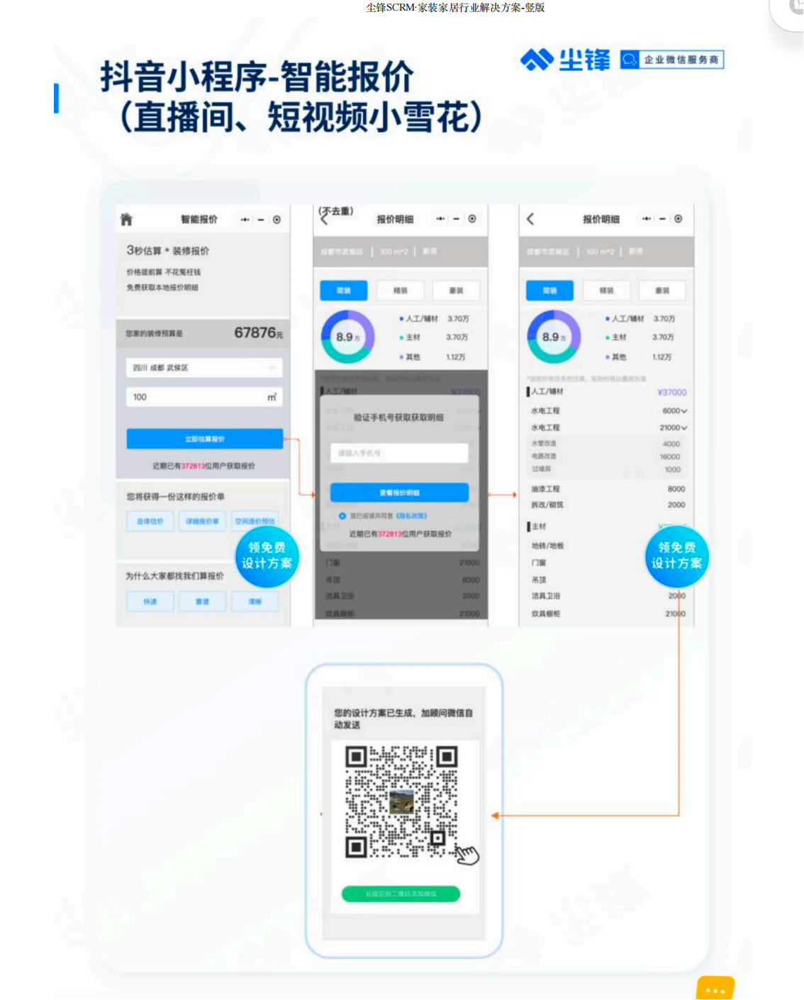
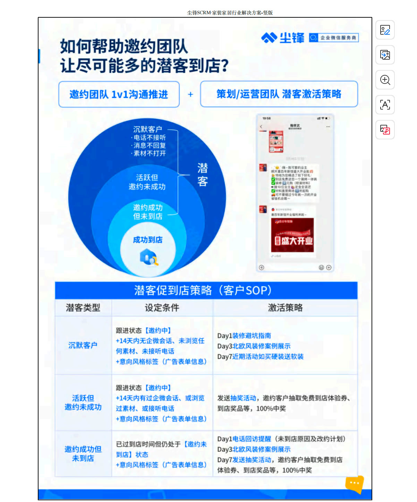
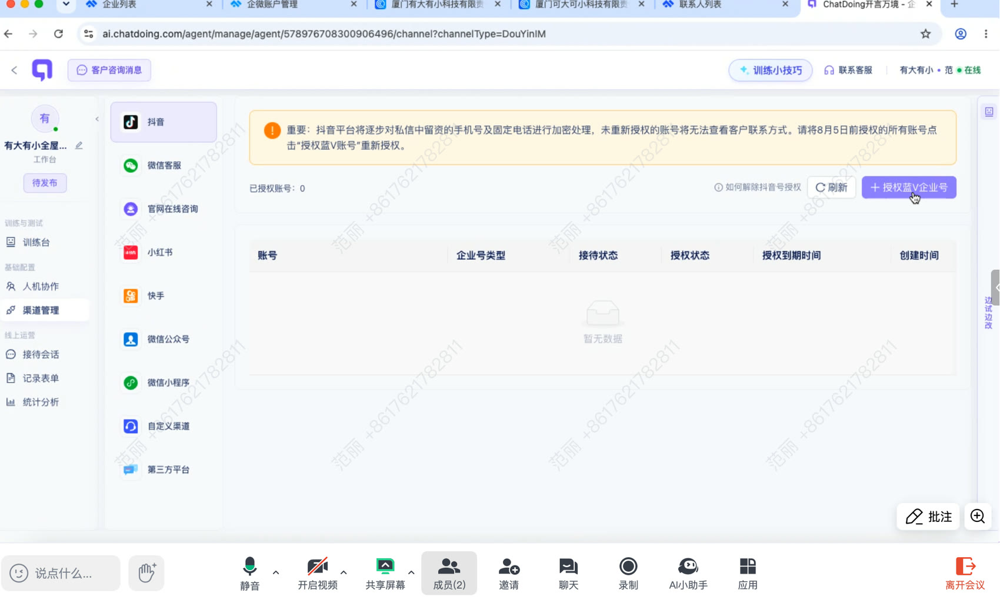
ai.chatdoing.com/agent/manage/…/channel?channelType=DouYinIM；按钮「+ 授权蓝V企业号」，表头有授权状态与授权到期时间。左栏是全部可接渠道。顶部橙色公告就是抖音私信留资手机号加密那条。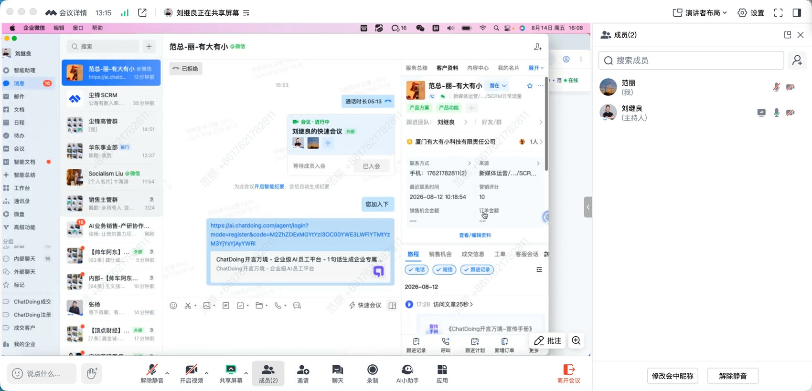
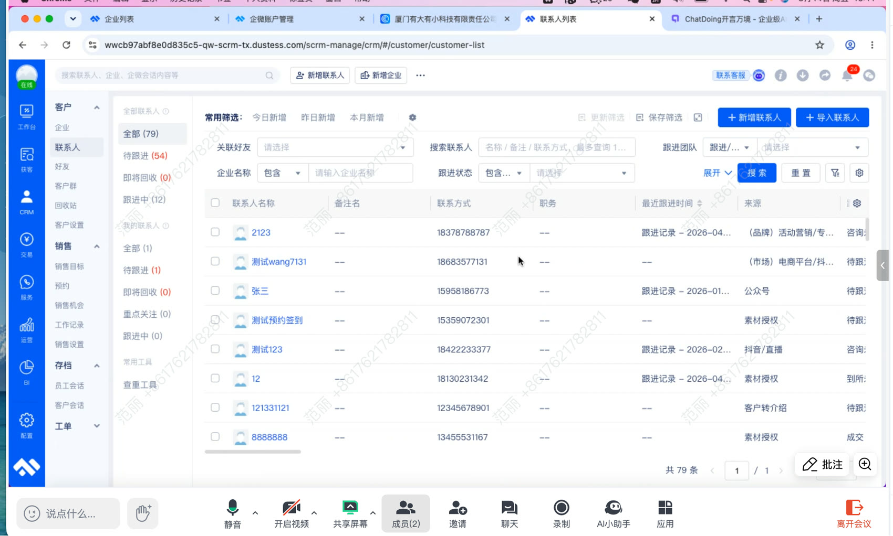
⑤ 发送时间机制（九家里对家装最具体的一套）
| 潜客类型 | 设定条件 | 激活策略（内容序列） |
|---|---|---|
| 沉默客户 | 跟进状态【邀约中】+ 14 天内无企微会话、未浏览任何素材、未接听电话 + 意向风格标签（广告表单信息） | Day1 装修避坑指南 Day3 北欧风装修案例展示 Day7 近期活动如买硬装送软装 |
| 活跃但邀约未成功 | 跟进状态【邀约中】+ 14 天内有过企微会话、或浏览过素材、或接听电话 + 意向风格标签 | 发送抽奖活动，邀约客户抽取免费到店体验券、到店奖品等，100% 中奖 |
| 邀约成功但未到店 | 已过到店时间但仍处于【邀约未到店】状态 + 意向风格标签 | Day1 电话回访提醒（未到店原因及改约计划） Day3 北欧风装修案例展示 Day7 发送抽奖活动 |
我在 08-14 上一版里建议「把客户看没看我们发的东西接成排序信号」——尘锋已经把它做成分层条件了
它区分「沉默」和「活跃」用的三个信号是：有没有企微会话 · 有没有浏览素材 · 有没有接听电话。中间那条正是我们缺的那一环（我们的知识海报和量房券发出去之后没有回执）。而且它把这三个信号+意向风格标签组合成可配置的进入条件，再挂 Day 级内容序列——这是完整的一条产品化链路，不是一句口号。
另一个值得抄的判断是它的业务节点定义：「做获客（争取首次到店）+ 首次到店客户的维护（争取二次到店，二次到店或者测量，才是付定金的关键节点）」。我们的「免费上门量房券」正好卡在这个节点上——方向是对的，但我们没有把「到店/量房」当成一个可跟踪的阶段字段。
零假设：如果这条不成立，我们的跟进池里应该已经有「是否到店 / 是否量房」这类状态，且海报与券的打开行为已经回流。可证伪方式：查 recall 那几屏有没有这两个字段。
⑥ 实测数据
| 指标 | 数值 | 来源 |
|---|---|---|
| 收费（两档，结构很特别） | 不接企微：系统不收费，按算力收 接企微：3 万 / 年，可接 10 个企微账号，赠 1 万点算力 / 月 | 【口径】0.85 |
| AI 上下文 | 「能很多轮」；现场演示看到七八轮 | 【口径】+ 现场观察 |
| 客户旅程颗粒度 | 「访问文章 25 秒」这种级别，直接写进时间线 | 【实证】 |
| 演示环境规模 | 联系人 79（待跟进 54 / 跟进中 12 / 即将回收 0） | 【实证】 |
| 已授权抖音号 | 0（演示环境尚未授权任何蓝V号） | 【实证】——所以抖音侧能力我们没有看到真的跑起来 |
3 万 / 年含 10 个企微账号。有大有小 20 家店，如果按店长一人一个企微号算就要 2 组 = 约 6 万 / 年；如果按每店 3–4 人则要 6–8 组，价格会跑到 18–24 万。这个价格结构对「人多」的甲方非常不友好，需要问清「企微账号」到底是按人头还是按主体算。已进待问。
⑦ 信息补充
| 补充点 | 内容 | 怎么用 |
|---|---|---|
| 抖音聊天框里内嵌表单小程序 | 在抖音聊天框中植入填写信息的小程序，引导加微：自动弹「1. 获取报价清单 2. 获取装修方案」→ 用户回「1」→ 弹出信息填写清单（地域、面积）→ 填完再弹手机号 / 微信号填写弹窗 | 这是官方通道才有的玩法，模拟点击那一派做不了。而且它把「要联系方式」拆成了两步（先要低敏感的户型面积，再要手机号），转化设计比直接开口要微信高明。结合抖音正在给手机号加密这条，表单可能会成为唯一还能拿到联系方式的口子 |
| 可追踪的资料链接 | 把设计资料做成可追踪链接，用户点开后能看到查看时间、时长、次数、转发量；直接写进客户旅程时间线 | 和黑谷卖 5,980 的「变现微信好友」是同一个能力，但尘锋把它接进了 CRM 旅程而不是单独卖。「转发量」这个字段对家装尤其重要——转发给谁≈谁是真决策人 |
| 电话与会话全留痕 | 电话邀约时手机号加密、通话录音自动上传、微信聊天记录也记进客户旅程 | 与亿销云那一派同构（过程留痕），但尘锋是顺带做的，不是主打 |
| 朋友圈营销任务 | 公司统一下发，员工点一下就发布出去 | 企微官方能力。对比水流/鲲炬的「自动发圈」——尘锋是「一键手动」，不是自动，这正是合规与自动化的取舍 |
| 还在做的 | 短信短链；抖音智能报价；成交后的用户回访与维护（用户批注：现阶段不用重点参考） | — |
今立说自己「是抖音官方合作商、和抖音合作、交钱，所以私信不容易被封禁/限流」。现在我们有了一个真实的官方通道样本长什么样：蓝V企业号授权 + 授权状态 + 授权到期时间 + 只能被动接待、拿不到评论区。
所以下次问今立的问题可以非常锋利：「你们的官方合作是不是也是蓝V授权？如果是，你们怎么做到主动去评论区找人私信的？如果不是，那是哪一类合作？」——这两条在官方口径下是互斥的，答案会立刻分出真假。
对我们的价值
- 「抖音私信留资手机号加密」平台公告是全页最紧急的一条外部信号——直接影响我们「评论 → 私信 → 要微信」管线，必须单独跟进；而它的「聊天框内嵌表单小程序」是官方通道下可能仅存的拿联系方式的口子。
- 家装专属 SOP 分层直接抄进「沉默客户跟进」：用「有没有企微会话 · 有没有浏览素材 · 有没有接听电话」做进入条件 + Day1/3/7 内容序列——素材打开回执正是我们缺的一环；且要把「到店/量房」做成可跟踪的阶段字段（二次到店/测量才是付定金节点）。
- 它是验证今立「官方合作」真伪的尺子：真官方通道 = 蓝V授权 + 到期时间 + 只能被动接待拿不到评论区。下次问今立：「你们也是蓝V授权吗？那怎么主动去评论区找人？」——两条在官方口径下互斥。
- 「一键手动发圈」vs 各家「自动发圈」是合规与自动化取舍的活教材，给甲方讲风险分级时直接引用。
（留白：实测记录 / 走访笔记 / 批注写这里。直接改本页 HTML 中 id 为 edit-chenfeng 的块，或让 Claude 填。）
11 · 极域云 · AI超级员工
全装在电脑上、驱动浏览器跑；手机只是「盯消息的第二块屏」—— 与水流同路线，但频控参数暴露得细得多
简介
相邻赛道样本（第三批调研）。技术路线与水流几乎一样（本地 Windows 客户端 + 驱动本机浏览器跑抖音网页版 + 微信自动化），但它是唯一把「手机」降级成配角的一家：手机只做监看端与人工接管，不参与执行——对 20 门店意味着不用为每台设备算一部手机的占用成本。拓客四入口（对标 / 视频 / 关键词 / 直播）+ 高德地图拓客 + 微信运营矩阵；微信/企微侧走 Hook + WSS 私有长连接（风险等级与 RPA 不同，亿销云 PDF 把协议方案列为高封号风险）。价格是本节最大缺口（材料零报价，算力制，已进待问）。模块铺得极宽（AI人事 / 智能法务 / 创意视频），是「一套系统解决老板所有问题」的全家桶叙事。单页拆解：极域详情页。
功能介绍（演示视频 · 界面截图）
八张界面截图（拓客首页 / 地图拓客 / 批量加好友 / 关键词拓客配置 / 浏览器执行画面 / 好友任务频控 / 朋友圈AI点赞评论 / 运营矩阵）已随下方机制拆解逐屏嵌入。
机制拆解（① 用什么设备 → ② 怎么控制/运行 → ③ 依赖 → ④ 操作流程 → ⑤ 发送时间机制 → ⑥ 实测数据 → ⑦ 补充）
它是本组里唯一一家把"手机"降级成配角的：系统只装电脑端，抖音那一侧是驱动本机浏览器去操作 douyin.com 网页版，手机纯粹是给人看微信/企微、防漏消息用的
① 用什么设备
电脑为主，手机只是「看板」。【口径】原话：「我们系统只能装到电脑端，电脑端做大部分操作，手机端看看微信和企微，以防消息有遗漏，或者需要人工接管」；后期可以通过手机去操控后台。
手机：安卓，对型号没有要求。——这一点与知了一致，与水流（锁摩托罗拉 S50）相反。
两家都说「电脑 + 安卓机、不挑型号」，但手机的角色完全不同：
知了——手机是执行体，在真实抖音 App 里点关注、发私信，跑起来手机被独占。
极域——手机是监看端，执行全在电脑上；手机用来看微信/企微消息、必要时人工接管。
对 20 家门店的含义完全不同：知了要为每台设备算一部手机的占用成本，极域不用。0.8
② 怎么控制 / 运行
| 环节 | 机制 | 依据 |
|---|---|---|
| 客户端 | Windows 客户端「极域云 / AI超级员工系统」，右上角常驻到期时间与算力点 | 【实证】 |
| 抖音怎么跑 | 驱动本机浏览器操作抖音网页版——演示里地址栏清清楚楚是 www.douyin.com/jingxuan/search/…，一路走搜索页 → 视频详情页（展开评论区）→ 用户主页（关注/私信） | 【实证】0.9 |
| 自动化引擎 | 自称搭载「RPA 智能流程感知技术」，「区别于市面上简单的机械式数据采集，拥有更高的识别精度和筛选逻辑」 | 【口径】 |
| 异常要人管 | 软件顶部常驻一行提示：「当遇到任务执行异常时（如手动结束任务，但任务提示还在执行），请手动关闭任务浏览器，点击软件右上角的刷新按钮，重新执行任务即可」 | 【实证】——这条约束了「不影响电脑其他操作」那句口径 |
| 前台占用 | 【口径】「电脑在运行时，最小化，电脑不关、系统不退出即可，不影响电脑端的其他操作」 | 【口径】 |
| 微信侧 | 「微信智能运营矩阵」：多账号聚合聊天、好友任务、关键词自动回复、SOP 群发 / SOP 定时朋友圈、朋友圈 AI 点赞评论 | 【实证】 |
③ 是否依赖电脑 / 插件 / 脚本
- 依赖客户端：是，且只能装电脑端。
- 依赖电脑常开：是——最小化可以，但不能关机、不能退出系统。
- 依赖浏览器：是（抖音侧走网页版），异常时还要人手动关浏览器。
- 依赖手机：弱依赖——只用来看消息和人工接管，不参与执行。
- 依赖用户写脚本 / 装插件：否。
④ 实际操作流程
它把获客拆成两条并行的线：
- 线下线（地图拓客）：选城市 + 行业关键词 → 一键采集高德地图商户 → 得到店铺 / 电话 / 详细地址列表 → 一键批量导出 → 直接「添加好友」批量导入微信通讯录加粉
- 线上线（AI 拓客）：在「拓客专区」四选一 —— 对标拓客（指定同行账号）/ 视频拓客（指定爆款视频）/ 关键词拓客（行业词搜索）/ 直播拓客（直播间实时观众）→ 配置采集与互动参数 → 系统驱动浏览器全自动扫描 → 筛出意向客户 → 自动关注 + 智能私信
- 两条线拿到的人都汇进微信智能运营矩阵：聚合聊天 → 标签分层 → 关键词自动回复 / AI 接待 → 复杂问题触发关键词转人工 → SOP 群发与定时朋友圈 → 朋友圈 AI 点赞评论激活
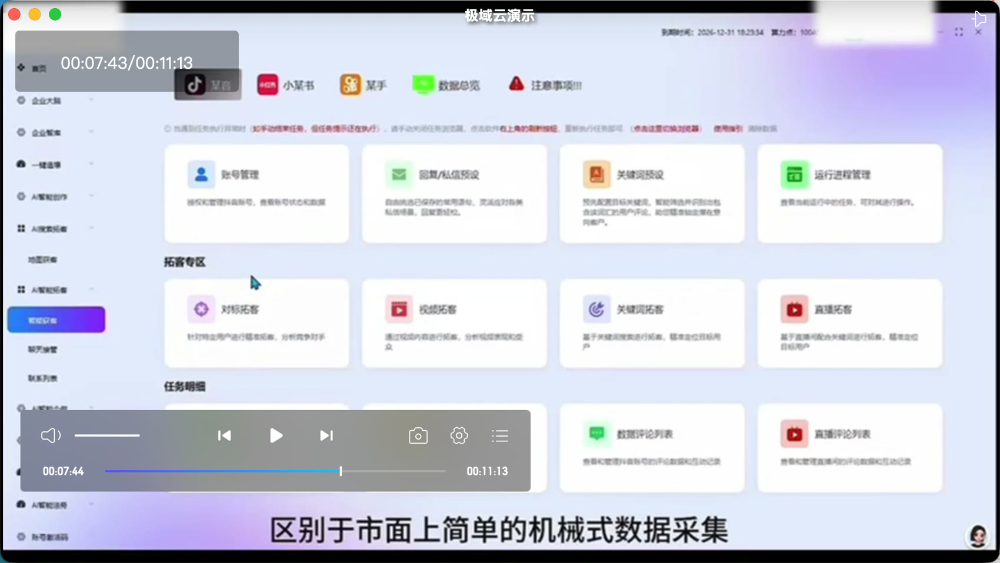
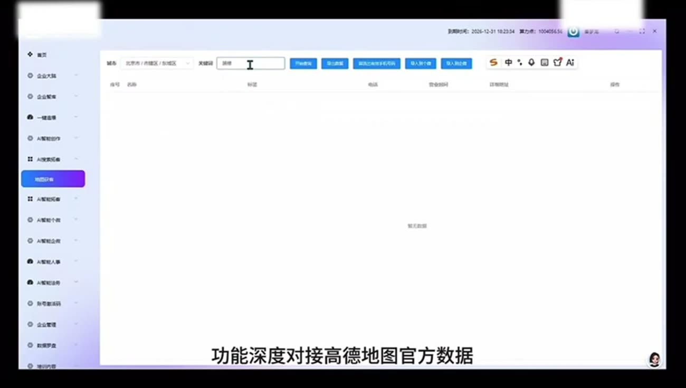
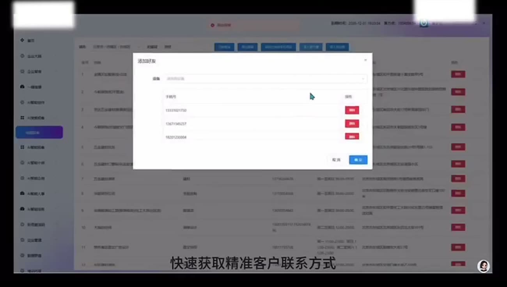
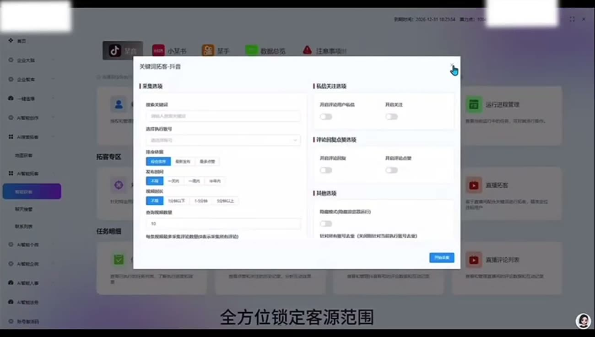
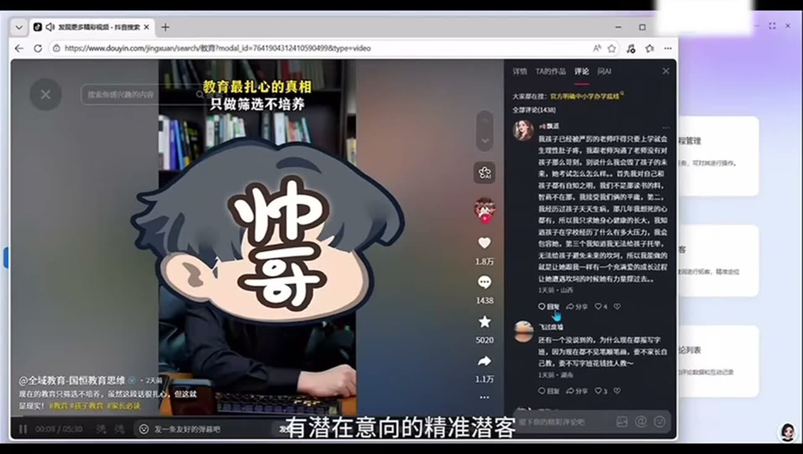
www.douyin.com/jingxuan/search/…，正在展开某条视频的评论区逐条读。字幕：「系统会全自动扫描短视频平台」「有潜在意向的精准潜客」「不用手动刷评论」。和知了「在真实手机 App 里点」是完全不同的执行面。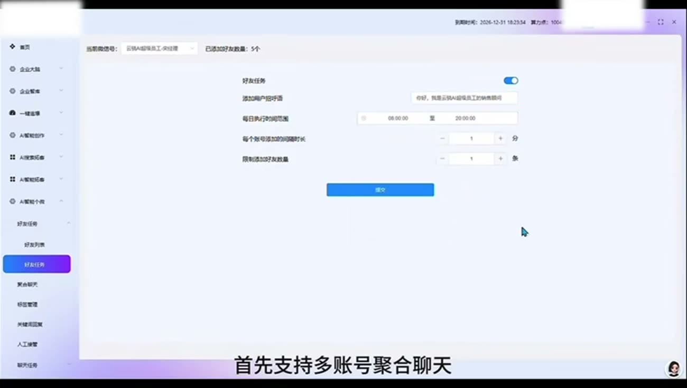
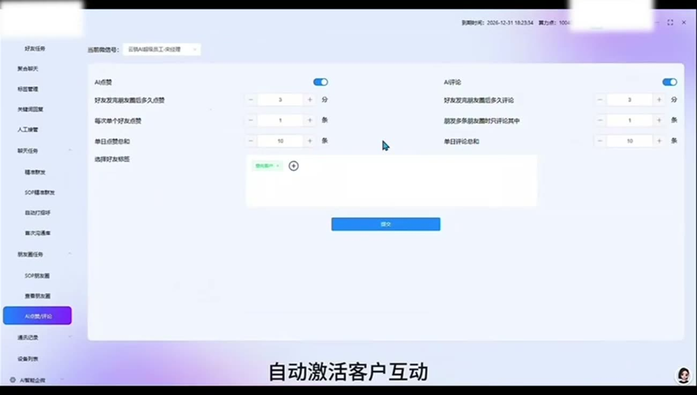
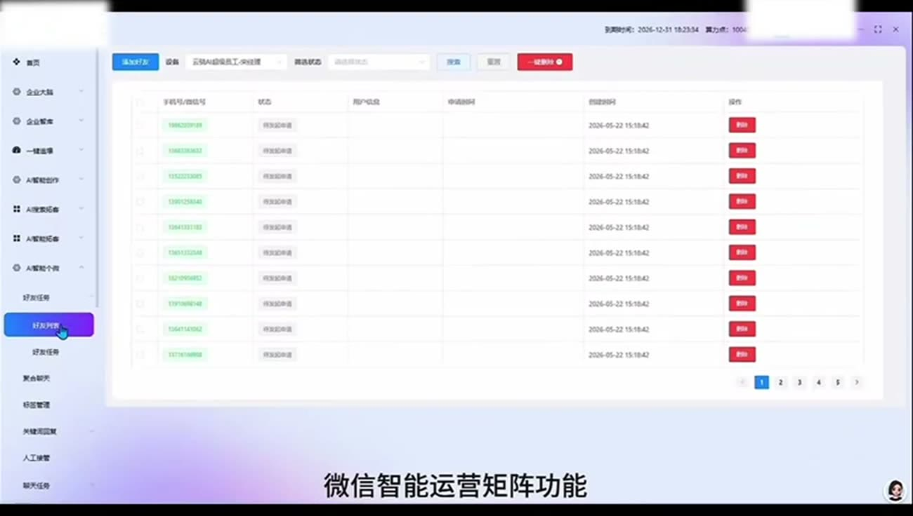
⑤ 发送时间机制（比想象中完整，而且分动作独立配）
| 动作 | 可配的时间参数 | 依据 |
|---|---|---|
| 加好友 | 每日执行时间范围 08:00–20:00 · 每个账号添加间隔 1 分钟 · 限制添加数量 | 【实证】 |
| 公域采集 | 采集间隔时间 15 秒 · 时间范围（不限/一天内/一周内/半年内）· 采集数量上限 | 【实证】 |
| 朋友圈点赞 | 发圈后 3 分钟再点 · 每人每次 1 条 · 单日总量 10 条 | 【实证】 |
| 朋友圈评论 | 发圈后 3 分钟 · 跳过多条只评其中 1 条 · 单日总量 10 条 | 【实证】 |
| SOP | 按「第 N 天 + 具体时刻」排期（任务详情里可见「第1天 14:25:01」） | 【实证】 |
| AI 回复 | 1–2 秒内回复，「和真人回复差不多，能一直回复」 | 【口径】 |
横向看，它在这一格排第二梯队但很均衡：不像水流那样有成体系的跟进节奏模板，也不像知了把频控收在私信一处——极域是每个动作各自带一套频控（加友 / 采集 / 点赞 / 评论 各自独立），这种形态对「不想被判异常」这件事其实更实用。
⑥ 实测数据
| 指标 | 数值 | 来源 |
|---|---|---|
| 价格 | 本轮材料中完全没有出现（既无报价表也无口头报价） | — 这是本节最大的缺口，已进待问 |
| 计费单位 | 界面右上角常驻「算力点」，说明是算力制 | 【实证】 |
| 授权期 | 演示账号到期时间 2026-12-31 | 【实证】 |
| AI 上下文 | 「可以承上启下的」，但问到「多轮对话能有多少」时没有做出具体回应 | 【口径】——九家里唯一被追问后答不出数字的 |
| AI 回复速度 | 1–2 秒内（用户注：其他竞品问下来也都说 1–2 秒） | 【口径】 |
| 加好友节流 | 间隔可设，演示值 1 分钟；每日窗口 08:00–20:00 | 【实证】 |
⑦ 信息补充
| 补充点 | 内容 | 怎么用 |
|---|---|---|
| 高德地图商家拓客 | 深度对接高德地图官方数据，覆盖全国全行业线下商户；按地区+行业关键词一键筛查，批量拿到店铺名 / 电话 / 地址，可一键导出并直接导入微信批量加好友 | 这是九家里第二家做地图获客的（知了也有）。但对有大有小要想清楚：家装的客户是业主不是商户，地图拓客拿到的是店铺老板——它适合做 B 端（比如找装企同行、建材商、物业），不适合找业主。别被"批量拿到电话"这件事诱惑走偏。0.7 |
| 直播拓客 | 「定点深耕各类行业直播间，抓取实时互动的潜在客户」——基于直播间配合关键词，抓同城同行直播间访客，主动私信引流 | 九家里唯一把直播间观众做成独立拓客入口的。对家装有真实场景：同城装企做直播时的围观用户就是精准业主。值得单独问一句「直播间能抓到什么粒度——只有公屏发言的人，还是所有观众？」 |
| 一键追爆 | 粘同行爆款视频链接 → 提取原文案 → 结合自家品牌全自动改写 → 调用已克隆的形象与声音生成原创视频 → 自动配乐/剪辑/封面 → 全网一键发布 | 与今立的「视频拆解 一抄二改三创新」是同一套打法。同样不建议对家装照抄——本地同行会认出来。 |
| 智能体知识库 | 搭载 RAG 知识检索，上传产品介绍 / 成交话术 / 业务流程 / 常见问题 / 企业制度，系统自主解析入库；依托豆包大模型 | 是九家里少数明确说自己用 RAG 的。但和我们的企业大脑仍是两回事——它是"喂进去检索得到"，没有版本、冲突消解、引用出处（这条结论到第五家仍然成立） |
| 模块铺得非常宽 | 除获客外还有：AI人事（直连 BOSS 招聘平台，自动筛简历、沟通、邀约面试）· 智能法务（对接阿里通义法睿，合同智能审查）· 企业管理（组织架构/权限）· 创意视频（对接 Seedance 等模型） | 这是一个「企业办公全家桶」，获客只是其中一块。对我们的含义：它在获客深度上未必打得过知了，但在「一套系统解决老板所有问题」的叙事上更有杀伤力——尤其对预算有限、不想采购多套系统的甲方 |
极域和水流在技术路线上几乎一样（本地客户端 + 驱动浏览器 + 微信自动化），但它的频控参数暴露得比水流细得多（加友间隔、每日窗口、点赞延迟、单日总量、采集间隔全都可配且默认值克制）。
这说明一件事：在「装你电脑上模拟人操作」这条路上，成熟度的分水岭不是能不能跑，而是节流做得细不细。我们云电脑那条通道目前有配额和串行节奏，但没有把这些参数做成界面上可见、可调的东西——甲方问「你们一天最多加多少人、间隔多久」时，我们答不出一个可以指着看的数字。这不是能力问题，是呈现问题。0.7
对我们的价值
- 「频控参数做成界面上可见、可调」是它给我们上的最重要一课：加友间隔 1 分/窗口 08:00–20:00、采集间隔 15 秒、点赞延迟 3 分+单日 10 条——全部可指着看。我们云电脑通道有配额和串行节奏，但甲方问「一天最多加多少人、间隔多久」时我们答不出一个可展示的数字。这是呈现问题，不是能力问题。
- 直播拓客是九家里独一份的入口，对家装有真实场景（同城装企直播间围观者≈精准业主）——值得评估进我们的采集面，先问清「能抓到什么粒度」。
- 与水流对照读出「成熟度分水岭」：同一条「装你电脑上模拟人」的路线，分水岭不是能不能跑，而是节流做得细不细——给甲方讲我们为什么慢而稳时的论据。
- 地图拓客的边界照旧：拿到的是店铺老板不是业主，适合找建材商/物业做 B 端，别被「批量拿到电话」诱惑走偏。
（留白：实测记录 / 走访笔记 / 批注写这里。直接改本页 HTML 中 id 为 edit-jiyu 的块，或让 Claude 填。）
12 · 熊猫智汇 · AI销冠云
WebRTC 电话外呼引擎 + 12 类企业大数据 —— 一条成熟、但不属于我们的赛道
简介
相邻赛道样本：21 页官方材料里没有任何一页出现抖音、短视频、评论区、私信（置信度 0.85）。它是 to-B 电话外呼智能体平台：ASR + 意图识别 + 对话管理 + TTS + WebRTC 的语音通话引擎，自带 12 类全部是工商产业侧的大数据——能找到的是公司，找不到要装修的业主。客户墙是微众银行 / 平安 / 贝壳 / 万科级的大 B。江苏公司，2024.01 成立，自称 3,000+ 服务企业；九家里唯一出示算法备案的（AI 对话生成合成算法，2025-07 备案）。价格：材料零报价，已进待问。单页拆解：熊猫智汇详情页。
功能介绍
无演示视频；六张官方材料图（平台总览 / 线索数据云 / B2B Agent / B2C SaaS / 发展历程 / 客户墙）已随下方机制拆解逐屏嵌入。注意它的 ①–④ 拆得很短——不是材料不够，是「被控设备」这些问题对 SaaS 外呼形态不成立，这本身就是结论。
机制拆解（① 用什么设备 → ② 怎么控制/运行 → ③ 依赖 → ④ 操作流程 → ⑤ 发送时间机制 → ⑥ 实测数据 → ⑦ 补充）
21 页官方材料里没有任何一页出现抖音、短视频、评论区、私信——它是 to-B 的电话外呼智能体 + 企业大数据线索库，和有大有小的门店获客不是同一件事
前五家都是「怎么把一台设备变成获客机器」，所以 ①–⑦ 每一段都有实打实的东西可拆。熊猫智汇的产品形态根本不需要被控设备：它是一套跑在云上的销售智能体平台，交付物是外呼线路、线索数据和 Agent。所以本节的 ①–④ 会很短，不是材料不够，是这些问题对它不成立——而这件事本身就是最重要的结论。
① 用什么设备
【口径】电脑端（第三批调研文档里对它只有这一句：「熊猫智汇：电脑端」）。
从产品形态推断是 SaaS Web 控制台——平台总览页把「SaaS 架构能力」列为三根技术柱之一（「超高 & 弹性架构可靠性及处理数以万计并发流量需求」），B2B Agent 页的配图也是一个 Web 版「AI 外呼系统」工作台。不涉及任何被控手机或被托管的社交账号。0.7
② 怎么控制 / 运行
| 环节 | 机制 | 依据 |
|---|---|---|
| 技术底座 | 「超级熊猫 AI 对话引擎」，基于自研 1B RAG 引擎 + 大模型；环绕六个能力：ASR 语音识别 · 意图识别 · 对话管理 · TTS 语音合成 · 知识检索 · 智能质检 | 【实证】平台总览页 |
| 这套组合说明了一切 | ASR + TTS + 对话管理 + WebRTC（「基于 WebRTC 技术，实现优质真人与客户互动」）＝ 这是一套语音通话引擎，不是社交自动化引擎 | 【实证】0.9 |
| 执行动作 | 打电话。B2B Agent 四件套：销售 Agent（自动完成第一轮电话触达）· 营销 Agent（围绕活动、投放、私域线索完成批量沟通与唤醒）· 触达 Agent（对未接、待回访、需二次沟通客户任务提醒）· 分析 Agent（汇总接通率、意向率、拒绝原因和跟进状态） | 【实证】 |
| 线索从哪来 | 自带企业大数据，不靠爬平台。数据中枢环绕 12 类：企业 · 商标 · 政策 · 工厂 · 店铺 · 专利 · 招标 · 展会 · 产业 · 楼宇 · 海关 · 城市宏观 | 【实证】 |
| 封号风险 | 不适用——它不碰任何平台账号 | — |
企业 / 商标 / 政策 / 工厂 / 店铺 / 专利 / 招标 / 展会 / 产业 / 楼宇 / 海关 / 城市宏观——全部是工商与产业侧数据。这直接决定了它能找到的是公司，找不到要装修的业主。
唯一沾边的是「楼宇大数据」和「店铺大数据」——理论上能拿到新交付楼盘和门店信息，对家装是间接有用（比如找新交付小区、找建材商），但这是 B 端线索，不是 C 端业主。0.7
③ 是否依赖电脑 / 插件 / 脚本
- 依赖被控设备 / 客户端 / 插件 / 脚本：全都不依赖。SaaS 形态。
- 真正依赖的是两样别的：① 外呼线路（合规的呼叫资源）② 号码数据（它自带，但对家装是 B 端号）。
④ 实际操作流程
从材料能还原的是一条外呼流水线：线索数据云按行业/来源/优先级调度外呼任务 → 销售 Agent 打第一轮电话（ASR 听 + 大模型理解 + TTS 说）→ 意向分层 → 未接/待回访的交给触达 Agent 排提醒 → 分析 Agent 汇总接通率、意向率、拒绝原因 → 数据看板按「老板 / 销售负责人 / 销售团队」三种视角订阅。
它还有一条 B2C 线（「B2C SaaS：提升咨询与营销转化的首选」），但拆开看仍然是：智能客服 · SCRM（社交客户关系管理，支持客户沟通、标签管理、层级触达）· 外呼触达（批量线索触达、活动邀约、老客唤醒）· 数据看板。「获客」在它这里等于「把已有号码打一遍」。
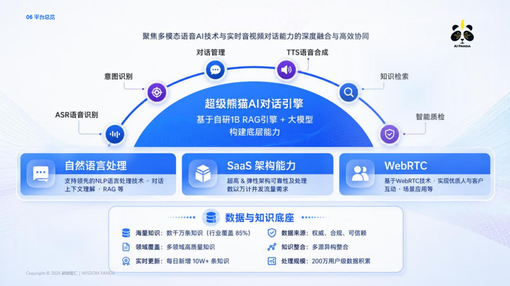
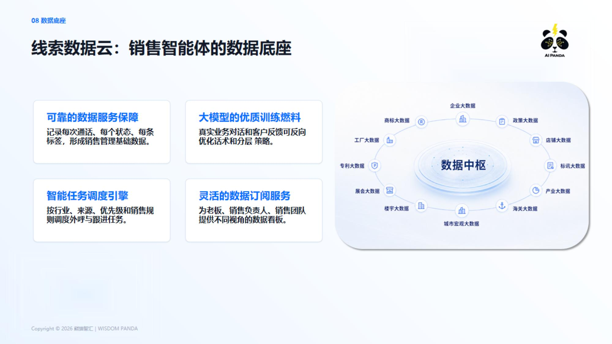
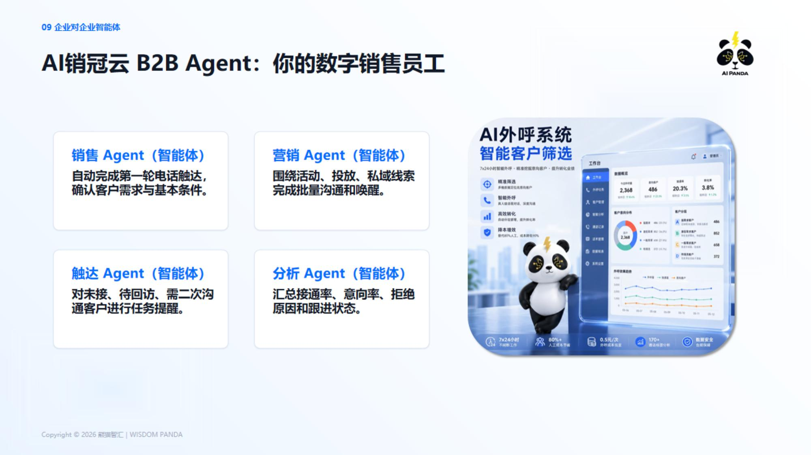
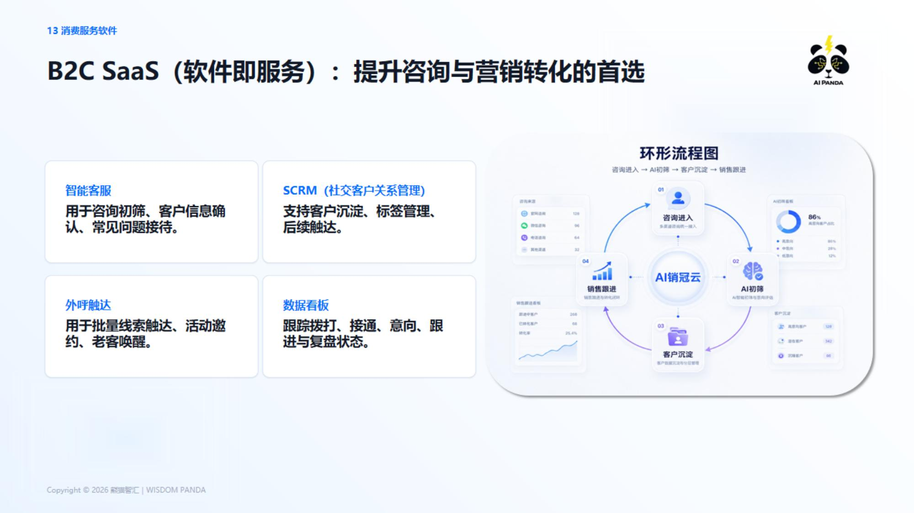
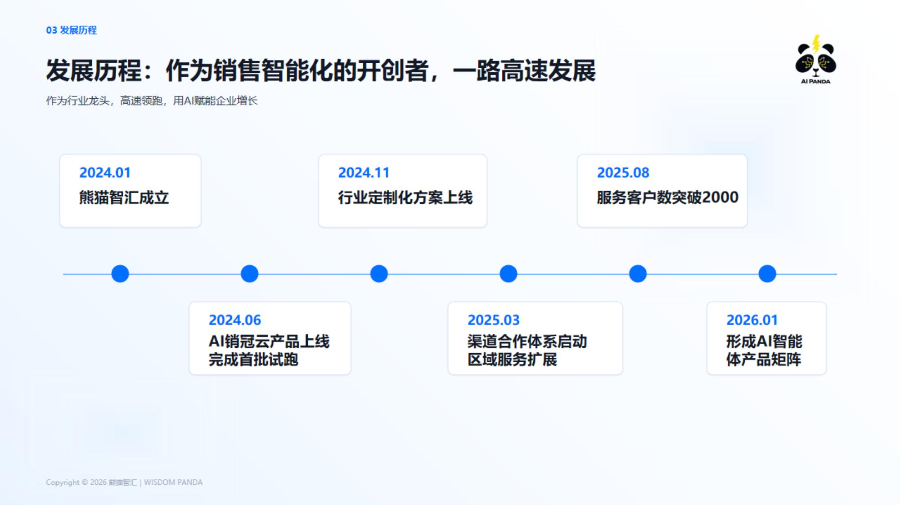
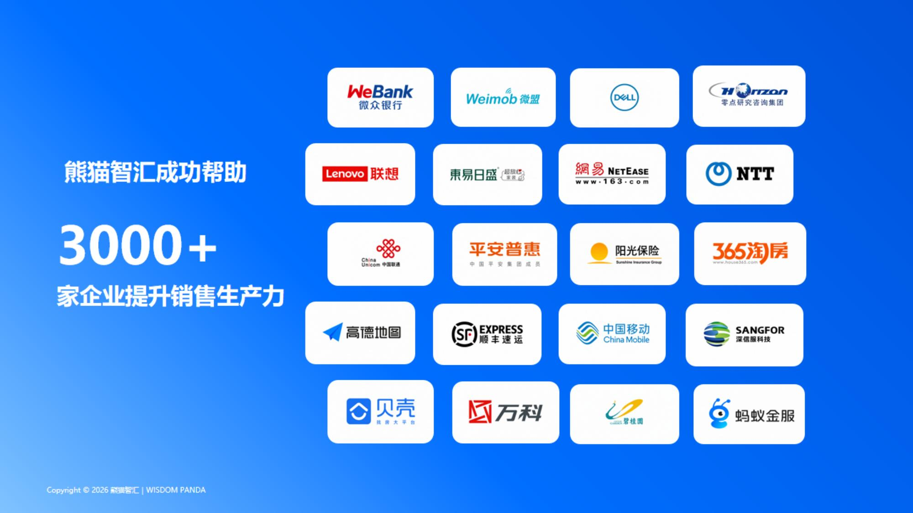
⑤ 发送时间机制
与前五家不是同一类东西。它的调度语义是外呼任务调度：「按行业、来源、优先级和销售规则调度外呼与跟进任务」，以及触达 Agent 对「未接、待回访、需二次沟通」的任务提醒。
材料里没有出现任何频率、间隔、时间窗的具体参数——这在电话外呼里其实是更受管的（有《通信短信息和语音呼叫服务管理规定》等外部约束），但材料没提，合规细节是空白，已进待问。
⑥ 实测数据
| 指标 | 数值 | 说明 |
|---|---|---|
| 价格 | 21 页材料里没有任何价格 | 已进待问 |
| 主体与成立时间 | 繁星未来（杭州）技术开发有限公司，2024.01 成立 | 比亿销云（2025-12）老，但也只有两年多 |
| 规模口径 | 3,000+ 服务企业 · 30+ 渠道伙伴 · 2 个研发中心 · 100+ 组织（社会责任页） | 自称 |
| 知识底座 | 数千万条知识（行业覆盖 85%）· 每日新增 10W+ 条 · 200 万用户数据积累 | 自称 |
| 算法备案 | 「紧星未来AI对话生成合成算法」已完成备案，备案时间 2025-07-22；另有 8 项专利/软著证书 | 九家里唯一出示算法备案的——做语音合成这是硬性要求 |
| 外呼工作台读数 | 配图里可见 2,368 / 486 / 20.3% / 3.8% 四个指标（应为线索数 / 接通数 / 接通率 / 意向率量级） | 0.4 读数存疑，仅供参考 |
⑦ 信息补充 —— 它对我们真正的价值，是反过来印证了一条旧结论
外呼不是没人跑通，是没人在我们这条赛道上跑通
08-10 九家全景里写过：「智能外呼：百应未发布、亿销云自认开发中——整条赛道零家跑通」。熊猫智汇推翻了这句话的字面意思：它把外呼做成了主体业务，有算法备案、有 3,000+ 客户、有从 ASR 到质检的完整链路。
但结论的方向没有变，反而更清楚了：能把外呼做起来的公司，客户是微众银行、平安、贝壳、万科这种有大量存量号码、按接通率算账的大 B。而有大有小是本地门店、靠公域捞陌生业主——连号码都没有，外呼无从谈起。
所以准确的说法应该改成：「外呼是一条成熟但不属于我们的赛道；我们不做是对的，理由不是它做不起来，而是它的前提（有号码池）我们不具备。」这个说法在甲方面前比原来那句更站得住。
零假设：如果这条不成立，熊猫智汇的客户墙上应该出现本地生活/家装/门店类客户，或者它的 12 类数据里应该有 C 端消费者数据源。两样都没有。
线索数据云里有一句：「真实业务对话和客户反馈可反向优化话术和分层策略」——把通话结果回流去改话术和分层规则，形成闭环。
我们的对应位置是「检查机器人与客户的聊天示例」和「像带新人一样给机器人回答打分」，但目前是人看、人打分，没有把结果自动回流去调整意向分层的阈值。熊猫智汇把这件事写成了数据底座的四分之一，值得作为一个方向记下来。
对我们的价值
- 把「不做外呼」的说法升级成站得住的版本：外呼不是没人跑通，是「前提（有号码池）我们不具备」——百应未发布、亿销云开发中、熊猫智汇跑通了但客户全是有存量号码的大 B。给甲方讲取舍时用这个版本。
- 「真实对话结果反向优化话术和分层策略」值得记为方向：我们企微接待的打分目前是人看人打，没有把结果自动回流去调意向分层阈值——熊猫把这写成了数据底座的四分之一。
- 算法备案是合规姿态的样本——若我们未来做任何语音/生成合成对外能力，备案是硬性动作，可以引用它的备案信息作为先例。
（留白：实测记录 / 走访笔记 / 批注写这里。直接改本页 HTML 中 id 为 edit-panda 的块，或让 Claude 填。）
13 · 对照（九家机制汇总）
七家 · 两种世界观——伪装派 vs 官方派，而伪装派内部还分「谁在动手」；熊猫智汇是第三种，它压根不在这条赛道上
| 维度 | 熊猫智汇 | 水流 | 今立 | 知了 | 心动 | 极域云 | 尘锋 | 我们 |
|---|---|---|---|---|---|---|---|---|
| ① 设备 | 不依赖被控设备 | 电脑 + 手机（锁摩托罗拉 S50） | 纯电脑 | 电脑 + 手机（安卓不限型号） | 专用手机（锁 Redmi Note 13/14/15，无苹果） | 电脑为主，手机只是看板 | 不依赖被控设备 | 云电脑 + iPhone |
| ② 谁在动手 | 没人动手：打电话（WebRTC+ASR+TTS） | 本机浏览器 + 自研微信聚合壳，软/硬双模 RPA | 本地安装包（声称官方通道） | 手机在真实 App 里点 | 那台手机自己点；装机用 adb 授权、必要时 root | 本机浏览器操作 douyin.com 网页版 | 没人动手：企微服务商 + 抖音蓝V授权 | 云电脑 GUI + WDA + 接口签名 |
| ③ 手机怎么连 | 不用手机 | 电脑发指令（方式待问） | 不用手机 | 不插线，有网就行 | 不连电脑，有电有网即可；小程序下发任务 | 不参与执行 | 不用手机 | USB / 局域网 |
| ④ 占用 | 都不占 | 电脑常开；硬件RPA 疑似占前台 | 声称不冲突，无证据 | 电脑能干别的，手机被独占 | 不占电脑；手机被独占且必须亮屏，店员不能再用这台机 | 电脑不能关机/退出，可最小化；异常要人关浏览器 | 都不占，电脑不用常开 | 云电脑独立窗口 |
| ⑤ 抖音评论区获客 | 不做，压根不碰抖音 | 能（手动点采） | 能（关键词表） | 能（4 种入口） | 能（评论获客 / 私信获客 / 留痕获客三张卡） | 能（4 种入口，含直播拓客） | 不能（自认） | 能（LLM 语义打分） |
| ⑥ 回复引擎 | 自研 1B RAG + 大模型（语音） | AI员工，上下文 0–50 可调 | Excel 关键词表 | 命中话术，上下文「五六条」 | AI 接管 + 知识库；智能体接的是字节 Coze，可一键切人工 | RAG 知识库（豆包）；轮数问不出数字 | 训练台 + 三开关；实测七八轮 | LLM 语义 + 人审 |
| ⑦ 时间机制 | 外呼任务调度，无频率细节 | 跟进节奏最全（1天/7天/15天） | 只有秒回 | 私信频控最全 | 时段串行；加微 15 次/天 · 间隔 10 分钟，但间隔不随机 | 每个动作各自带频控（加友/采集/点赞/评论） | 业务语义最强（Day1/3/7 家装序列） | cron + 配额 + 串行 |
| ⑧ 价格 | 材料中无价格 | 2,980 / 9,980 每年 | 13,800–290,000 | 买断 4,980–9,980 | 5,800/台 + 算力 ≈3,600/年（不是买断） | 材料中无价格 | 接企微 3 万/年（10 号） | — |
真去碰社交平台的那六家只有两种世界观；而「伪装派」内部真正的分歧，是让谁去动手——这决定了 20 家门店要养多少台设备
官方派（尘锋）：走平台给的门，封号风险接近零、不占任何设备、电脑都不用常开；代价是能力边界被平台划死，它自认拿不到抖音评论区。
还有第三种，它根本不在这条赛道上（熊猫智汇）：底座是 WebRTC 电话外呼 + 企业大数据线索库，不控制任何设备，也不碰社交平台，所以「谁在动手」这个问题对它不成立。放进这张表是为了说明一件事——同样挂着「AI 获客」的招牌，有的家做的压根不是我们这件事，比价时先分清赛道再比功能。
伪装派（水流 / 今立 / 知了 / 极域 / 心动，也包括我们）：能拿到平台不开放的东西（公域评论区），代价是风险落在甲方账号上。但内部又分三种「动手方式」，成本差别很大：
· 浏览器代跑（水流、极域）——一台电脑就够，最省硬件；
· 真手机代跑（知了、心动）——最像真人，但每台设备要占一部手机；
· 本地客户端 + 自称官方通道（今立）——无法自证。
按 20 家门店把账算出来：走浏览器路线只需要 N 台电脑（甚至可以是云电脑）；走真手机路线要额外 N 部安卓机且店员不能用。这一条比功能清单更能决定甲方最后选谁。
心动把这条推到了极端，正好当反例读：它连手机都替你买（5,800 含机），听上去省事，实际是把成本固化成硬件——20 家店就是 20 台不能挪作他用的红米，加算力首年约 18.8 万。知了是「你的手机被占用」，心动是「你得再买一台」，同属真手机路线，扩张成本却差一个量级。
零假设：如果这条不成立，甲方在比价时应该只问功能不问设备成本。可证伪方式：下次沟通如果对方主动问「要不要我们自己买手机 / 要几台电脑」，这条就成立。
14 · 我们的四个功能 × 九家
每个功能背后的需求是什么 → 九家怎么理解、怎么做 → 界面长什么样。四功能以 store-workbench 门店工作台为准（V5.7）
我们的产品是给全屋定制门店店长用的自助工作台，四个模块：01 短视频获客 · 02 企微自动接待 · 03 沉默客户跟进 · 04 企业大脑。店长每天早上打开一条链接，就知道今天该做什么：拍哪条视频、机器人昨天怎么接的待、哪些客户该跟了、企业知识缺什么。下面按功能逐个过：需求 → 九家的理解 → 界面索引；两份「对位」原文（08-10 九家版、08-06 第一批版）整段并入在本节末尾，含每个功能「能抄的 / 不要抄的」清单。
功能一 · 短视频获客
门店店员不是内容创作者。需求不是「一天生产 8,000 条视频」，而是「今天拍哪条、怎么拍、拍完谁审、发到哪」有人替店长想好——选题、拆片、成片质检、出镜授权、提交发布，每一步都可干预、可回退（我们 9 主屏 + 6 详情屏全部走真实写路径）。曝光的终点不是播放量，是评论区里「128 平装多少钱」这样的线索。
九家怎么理解：九家全部把它理解成产能问题——今立做到专业剪辑软件级（真时间轴工程 + 违禁词检测 + 数字人），知了「一键成片 + 5 台 × 4 平台群控发布」，心动把内容工厂装进手机 24 小时清单，鲲炬「剪三条 15 秒发四大平台」一句话下指令，黑谷训一个「超级 AI 销售」生成内容但要手动发。没有一家做「店长审核」这一步——生产完直接发，质检只有今立的违禁词一层。
界面长什么样（点竞品名跳档案看图）：今立的工作中枢/视频解构/时间轴工程/违禁词库九屏 · 知了的一键成片/发布任务/数字人 · 心动的 24 小时工作清单 · 鲲炬的语音指令拆任务。

功能二 · 企微自动接待
线索进了企微之后，夜里和忙时没人接、新店员不会聊。需求不是「机器人替掉销售」，而是机器人按店长确认过的说法接待，聊得好不好有人打分——说话规则 / 常问问题 / 自动办理服务 / 打分题（8 主屏 + 5 详情屏全真实业务）；说法先当草稿、店长确认了机器人才能用；金牌案例收的是 20 段到店成交的真实对话。
九家怎么理解——这是调研里最大的认知分叉，分成了四派：①替代派（水流个微全托管 6 节点链路、心动私聊接管、鲲炬 AI 销售 1/2/3 号）——机器人直接顶替人聊；②监督派（亿销云全量留痕 + AI 打分 + 主管视角、亿量通话分析）——人聊、机器看；③带教派（我们）——机器人上岗前先过店长审核，聊完给店员打分；④ 今立那种关键词表派——43 行 Excel，自己承认「重复发、上下文处理不好」。
界面长什么样：水流的 6 节点客群链路 + AI 标签表 · 亿销云的 AI 智能回复侧栏（默认给建议不自动发 + 黄色告警）与四维评分 · 今立的关键词表真身 · 黑谷口播里的「超级 AI 销售」。
功能三 · 沉默客户跟进
家装决策周期长，加了微信不说话的客户是最大的沉默资产。需求是一个不会漏人的池子 + 一个「今天先跟谁」的排序 + 跟得出去的内容（跟进池、活动、量房券插件、知识海报，6 主屏 + 3 详情屏全部落库）。
九家怎么理解：只有三家真有「池子」概念——水流的 SOP 跟进（当天30分/1天后/7天后/15天后模板）、亿销云的沉默唤醒（A/B/C/D 级 2/4/6/10 天）、黑谷的行为意向分级（唯一做「排序」的）；知了只有「按设备推 5 人/天」的分发，没有跟进语义；其余家基本空白。排序信号是分水岭：水流按时间表跟（不管客户冷热），黑谷按私域行为跟（谁看了资料先跟谁）——08-10 对位章的判断：黑谷的排序信号我们其实已经产生了（海报/资料打开行为），只是没有回收。
界面长什么样：黑谷的意向分级跟进池（唯一实拍屏）· 水流的 SOP 模板与 RPA 九宫格 · 亿销云的下一步动作卡片（带 deadline 的待办）。
功能四 · 企业大脑
机器人聊得对不对、海报写得准不准，取决于企业知识对不对。需求是核心事实有一个可审的库：核心事实 / 说法冲突 / 资料原件 / 原件详情四屏接 sw_facts 等真实表；上传资料撞出新冲突时自动通知上传人。标记出错比数据本身更要不得——每屏独立标「真实数据 / 示例数据」。
九家怎么理解：大多数把它做成「投喂」——鲲炬收聊天记录不限量、今立企业智库「喂养私有大模型」、心动接四家大模型底座；只有亿销云把「知识质量」做成了可运营的数字（AI Sales Bot 租户卡：7 日质量快照 + 好评率 + 缺口(14) 计数）。没有一家做「说法冲突」的审核语义——投喂进去的东西互相矛盾怎么办，全行业无解，这是我们最深的一条护城河。
对位原文 · 08-10 九家版（整段并入）
先定义需求，再看竞品。顺序不能反——如果先看竞品有什么再回头对，得到的只是功能清单差异；先把「这一块到底在解决谁的什么问题」写死，才看得出他们和我们对同一个问题的理解根本不同。这一节的每一块都按：需求 → 竞品的理解分派 → 界面形态对照 → 能抄的 / 不要抄的。
短视频获客（今天要做：选今天要参考的视频 / 看懂参考视频为什么有效 / 等系统制作今天的视频 / 检查并下载今天的成片；设置与工具：业务类型 / 素材上传 / 真人出镜）
企微自动接待（填本店独有的信息 / 上传并检查 10 段金牌销售案例 / 像带新人一样给机器人回答打分 / 确认机器人怎么说、哪些话不能说 / 看今天企微接待效果 / 检查机器人与客户的聊天示例 / 修改客户常问问题的答案 / 设置机器人可以自动办理的服务）
沉默客户跟进（准备可用于客户跟进的活动 / 看哪些跟进方式更有效 / 找出今天最值得跟进的客户 / 选择自动生成的跟进内容 / 制作按客户情况生成的知识海报 / 制作免费上门量房券）
企业大脑（全景 / 上传资料 / 文档处理详情 / 待我选择 / 本店可对外说什么 / 客户装修要知道什么 / 本店怎么交付 / 说法冲突 / 冲突选择题 / AI 扩展模块 / 版本与发布 / 原件目录）
短视频获客
竞品的理解：九家全部把它理解成纯产能问题，没有一家处理「真实性」这一侧
另外两家的位置：心动 AI 把内容做成任务卡（发布图文 / 发布视频 / 发朋友圈，「自动/定时发布」），产能不是卖点、无人值守才是；黑谷最特殊——AI 负责生成私信文案、评论、朋友圈与抖音内容，但发布是人工的，且不额外收费。也就是说黑谷把内容当赠品，真正卖的是获客与私域那两块。
| 维度 | 今立智能 | 知了 | 水流 | 鲲炬 | 我们现在 |
|---|---|---|---|---|---|
| 产能口径 | 8,000 条/日，单条 <10 分钟 | 一次 5 条标题 × 10 条素材 | 按素材分组建混剪任务 | 「剪三条 15 秒」按指令批量 | 一次一条选题 |
| 入口层级 | 八个一级菜单，创意编导/智汇素材/畅速成片各占一个 | 一级菜单第 3 位「AI视频中心」 | 「AI矩阵获客」下三屏 | 没有菜单，对话下指令 | 4 屏「今天要做」+ 3 屏「设置与工具」 |
| 素材从哪来 | 视频拆解同行链接 / 素材库 / 图生视频（一张产品图出片） | 素材库、成品库按项目归集 | 类型树 + 混剪任务分类 | 甲方上传成片，或图片生成 | 按门店真实拍摄归集 + 出镜人登记与授权 |
| 去重手段 | 云混剪 2.0：帧级重组 / 要素替换 / MD5 重构，自称原创度 +90% | 一键成片「完全不重复」 | AI 抽帧定帧 | AI 抽帧定帧 | 不做去重（内容本来就是本店原创） |
| 合规 | 违禁风险词独立一屏 + 自定义词库 | 无 | GEO 页有免责提示 | 无 | 提交发布走统一审核台 |
| 出镜人授权 | 九家全部为零——没有任何一家把「谁出的镜、授权到什么时候」做成字段 | 授权跟人走，不跟素材走 | |||
| 剪辑深度 | 真时间轴工程（分镜 + 素材/画面/文字/音频四轨） | 模态框填表 | 模态框填表 | 全托管，不给编辑 | 四阶段产线，店长只看成片 |
08-06 写的是「video_jobs 共 4 条、成片 0 条（3 failed / 1 needs_input）」。2026-08-10 重查：共 3 条，2 条 done、1 条 failed，最近一条 08-09 16:180.85（直连 Supabase 查 video_jobs.state）。产线已经跑出成片了，08-06 那条结论到此为止。
两点要说清楚：① 表里行数从 4 变成 3，说明中途有过重置/清理，不能把它当成累计产量；② done 只代表任务跑完，不等于已发布到平台——「发出去了几条」需要另外一条口径去查，本页没查。
能抄的（按性价比）
- 违禁词自查独立成屏（今立）。20+ 门店、几十个员工号发内容，一条违规下架就是白干。今立把它做成一屏 + 可自定义词库，成本极低。我们现在只有统一审核台的人审，没有机器先筛这一层。
- 图生视频当兜底供给（今立 Soar2 / 鲲炬）。门店最常见的问题不是不会剪，是没素材。一张产品图 + 一句话出 15 秒片，正好补「今天没拍到东西」的缺口。
- 把消耗印在生成按钮上（水流「立即生成 2⚡」/ 知了算力币）——08-06 已提，仍未做。
不要抄的
- 拿产能对标。今立 8,000 条/日是给电商/加盟商刷量用的，有大有小 20 家店一天要的是 40–60 条。对标产能我们必输且没必要赢。
- 视频拆解「一抄二改三创新」（今立）。抄同行视频对家装是高风险动作——本地同行会认出来，而门店的信任是本地口碑生意的命。
- 把素材挂在任务下（水流）——08-06 已判，理由不变：授权有期限，必须跟着人走。
企微自动接待
这是本次调研最大的一处认知分叉：九家分成了四派
| 流派 | 谁 | 核心主张 | 界面长什么样 |
|---|---|---|---|
| 替代派 | 水流 · 鲲炬 · 知了 · 心动 | AI 直接接管对话，深夜也回，「客户分辨不出来」 | 日志流 + 开关。水流「AI销售」tab 是逐条时间戳运行日志；知了是四个开关 + 轮询间隔；鲲炬是一块「接管电脑工作中」的字幕；心动最干脆——设备卡片上一个「AI自动 / 人工」二选一开关 |
| 监督派 | 亿销云 · 亿量 | AI 不替你说话，AI 帮你看住说话的人：全量归档、敏感词预警、通话质检、飞单监控 | 记录 + 预警 + 回溯。亿销云的「触发敏感词 → 查看上下文 → 跳到那段聊天 → 可导出」是本次最顺的一条交互链 |
| 测温派 | 黑谷 | 不替你说、也不看住人，而是看住客户：谁看了朋友圈的哪一条、资料看了几遍、转发给了谁 → 自动分高/中/低意向，把人交回给销售去谈 | 一张按意向排序的客户列表，每行挂浏览次数与时长 |
| 带教派（我们） | 门店工作台 | AI 起草、店长确认、审核台放行；机器人先跟着 10 段金牌案例学，店长像带新人一样打分 | 草稿 + 确认 + 打分。8 屏里有 3 屏（金牌案例 / 打分 / 说话规则）是在「训练」，不是在「运行」 |
「测温派」是这次新长出来的一格，而且它可能是最聪明的一种偷懒：不碰生成、不碰合规、不碰封号，只做一件信号采集的事，却直接解决了销售「今天先找谁」这个真问题。对家装这种决策周期以月计的生意，它的价值密度可能高于自动回复。
值得注意的是：亿销云虽然做了 AI 智能回复，但默认不自动发——右侧栏是模型下拉 + 一个「自动发送」开关（默认关）+ 一条黄色告警「AI 智能回复可能会存在错误信息，请及时人工核实」+「一键发送 / 重新生成」两个按钮。这跟我们的判断是一致的，而且它是九家里唯一一个把「不确定性」写进界面的。
上面那段描述的是四月版（xxl.xxlcrm.com）。08-14 的线上系统（wp.xxlcrm.com）里：发送方式已经是「直接发送」，账号级别有「自动发送」开关，聊天窗口里 AI 的回复带着 AI 角标真发出去了；四月那条「仍处于测试阶段，请仔细挑选后回复」的黄色提示也没有了。
但不能因此把它归成替代派。亿销云整体仍然定位在销售助手——主干是工作手机管控 + CRM 过程管理，AI 自动回复只是其中一个、而且是次要的功能。准确的说法是：监督派，但已具备直接发送能力，开不开由客户决定。
另外补两条实测：客户发来消息后 AI 回复约 36 秒（后台日志拆开是思考 23.8 秒 + 发送 12 秒），且可切「立即回复 / 延迟介入」，四月版是一个直接填秒数的「分析延迟」输入框。它的 AI 底座是多引擎路由（tokenhub / siliconflow，模型为 DeepSeek 系与 Qwen 系）——销售口头说的「用的是 Claude」与后台日志对不上，日志里 Claude 计数器读数为 0。拆机报告 →

能抄的
- 「自动发送」开关 + 常驻免责条（亿销云）。我们已经是人审，但界面上没有一个显式的「现在是谁在说话」的状态位。加一条几乎零成本，且是甲方一眼能看懂的安全感。
- 预警 → 查看上下文 → 原文的回溯路径（亿销云）。我们的「检查机器人与客户的聊天示例」是抽样看，没有「出问题的那条直接跳过去」的路径。
- 「主管视角」的辅导反馈（亿销云）。我们的打分屏是店长给机器打分；反过来，机器也该给店长的人工话术打分——这正好接上「金牌案例」那屏的语料来源。
- 对话现场的阶段进度条 + 一键接管（水流 6 节点）——08-06 已提，九家里仍然只有水流做了，仍然值得抄。
不要抄的
- AI 全自动接管对话（替代派）。理由不变。08-14 订正：原来那条旁证（「亿销云自己也没敢默认打开自动发送」）已经不成立——它八月版已改成直接发送。不过它自己后台的质量统计也把代价摆出来了：567 次调用里 126 次有问题，含 23 次「事实无依据」。这反而是更强的旁证。
- 工作手机式的员工监控（亿销云 GPS 轨迹 / 128 项权限 / 敏感行为）。这条要单独说：能力本身对甲方有价值（见下一节），但把它做进店长工作台会毁掉产品的立场——我们的用户是店长本人，一个会举报自己的工具没人会用。要做也应该做成老板侧的独立视图。
- 九宫格工具箱式 IA（水流）——08-06 已判。
沉默客户跟进
08-06 写的是「四家里这一块最薄……没有一家把它做成一个有池子、有排序、有效果对比的独立板块」0.75。
第一次推翻（亿销云）：「没有池子」不成立——它有完整的客户公海 + 超时自动回收，而且比我们更完整地覆盖了「防漏」这一侧。
第二次推翻（黑谷）：「没有排序」也不成立了——黑谷用私域浏览行为自动把客户分成高/中/低意向，并按此排列，视频里有真实界面。
改写后的正确说法是：「有池子的和有排序的是两家不同的公司，而且两家的排序信号都不是公域语义。」我们仍然是唯一一个把公域评论的语义打分直接接进跟进池的，但这条领先比 08-06 认为的要窄。0.7
| 能力 | 亿销云 | 黑谷 | 水流 | 亿量 | 其余四家 | 我们 |
|---|---|---|---|---|---|---|
| 有没有「池子」 | 客户公海（超期未跟进自动回收、重新分配） | 有（按意向分级的客户列表） | 无 | 口述有老客召回 | 无 | 有（claim 锁按 org+抖音用户 4h） |
| 谁进池子 | 规则：超时未跟进 N 天（图中 105 天） | 所有微信好友（含员工的） | — | 历史聊天记录判定 | — | 公域评论的语义打分 + 装修阶段分档 |
| 怎么排序 | 不排序，只筛选 | 按浏览行为自动分高/中/低意向（看了哪条、几次、多久、转发给谁） | — | — | 不排序 | 「找出今天最值得跟进的客户」是一整屏 |
| 排序信号来自哪 | — | 私域行为（客户自己的动作） | — | — | — | 公域语义（客户说过的话） |
| 防漏机制 | 跟进提醒 + 超时预警 + 星级评定 + 6 阶段商机推进 + 丢单原因必须填 | 无 | 闲时计划 / 激活老客户 / 自动追单 | 自动跟进节点（尾款到账 / 装修完成 / 两年质保回访 / 介绍新客） | — | 无超时回收，锁到期即释放，释放后没有回池语义 |
| 跟进内容 | 话术推荐 + 下一步动作卡片（带 deadline） | AI 生成朋友圈/私信文案（人工发） | SOP 节点自动跳转 | 结合历史记录生成（「你 98 平的房子可以参加 xx 活动」） | 千人千面群发 | 活动 / 知识海报 / 免费上门量房券 |
| 效果对比 | ROI 分析 + 来源转化追踪 | 浏览转化可见 | 无 | 输单归因 | 无 | 「看哪些跟进方式更有效」是一整屏 |
黑谷的排序信号我们其实已经产生了，只是没有回收
我们在跟进里发出去的东西是有落地页的——「按客户情况生成的知识海报」和「免费上门量房券」都是可以带追踪的。客户有没有打开、看了多久、有没有转发给家人，这三件事恰好就是黑谷卖 5,980 的那个能力，而对家装尤其准（装修是家庭共同决策，「转发给谁」几乎等于「谁是真决策人」）。
换句话说：我们不需要买这个能力，我们需要把已经发出去的东西接上回执。这是本节性价比最高的一条，而且它同时补上了我们跟进池「排序只用得上首次触达时的公域信号、之后就不再更新」的缺口。
零假设：如果这条不成立，海报与量房券应该是不带链接的纯图片、无法埋点。可证伪方式：查一下 recall-poster / recall-coupon 两屏产出的到底是图片还是可追踪链接——如果是纯图，这条要改成「需要先改成带链接」。
能抄的
- 把「客户看没看我们发的东西」接成排序信号（黑谷）。见上方 verdict——海报/量房券的打开、时长、转发是我们已经能产生却没回收的信号，而且对家装的决策链特别准。本节第一优先。
- 公海池「跟不动自动回收」（亿销云）。我们的 claim 锁 4h 到期只是释放，没有「回到池子并降权/换人」的语义，界面上也看不见。这是 1:1 可移植的一条，而且直接解决 5 人运营互相踩单之外的另一半问题：拿了不跟。
- 丢单原因必须填（亿销云商机 6 阶段）。我们现在 discard 是无理由的，等于把最有价值的负反馈扔了——这批理由正是喂给意向打分模型的料。
- 下一步动作 = 一条带 deadline 的待办（亿销云）。我们的跟进内容是「生成一段话」，落不到「谁在什么时候之前做什么」。
- 按生命周期节点跟进（亿量：尾款到账 / 装修完成 / 两年质保回访 / 介绍新客）。家装天然有这些节点，我们现在只跟到成交前。
不要抄的
- 把「超时未跟进」当成唯一入池规则（亿销云）。规则筛出来的是「没人管的」，不是「最值得管的」。我们的打分排序是真差异，别为了对齐功能清单把它退化成规则。
- 自动追单式的加密骚扰（水流）——08-06 已判，理由不变。
企业大脑
| 谁 | 叫什么 / 放在哪 | 里面是什么 | 把知识当成 |
|---|---|---|---|
| 今立 | 企业智库 + 数字云脑，一级菜单第 2、3 位 | 上传产品手册/案例/品牌故事/话术库，「分数会随着上传资料越来越多而越来越高」，自主学习迭代；数字云脑可扮演营销总监/客服主管等角色 | 喂料（越多越好，有个分数） |
| 亿销云 | AI Sales Bot 后台的「知识库 / 知识图谱 / 质量」三屏 | 按租户一张卡：7 日质量快照（平均分/好评率/客户提及率）+ 缺口(N) 计数 + 知识条目/知识文档/上传文档 | 可度量的资产（有缺口清单） |
| 知了 | 「AI 项目中心」，一级菜单第 2 位 | 建项目，填产品介绍/优势/核心卖点 | 几个填空 |
| 水流 | 「AI员工」分组下的一项 | 客服回复语料；GEO 写文章时可选 | 喂给生成器的料 |
| 鲲炬 | 无独立模块 | 「把跟客户的聊天记录喂给他，不限量，他会学习你的沟通技巧」 | 训练样本 |
| 亿量 | 企业知识库 | 当销售遇到客户疑虑时给回复建议；明说知识库中无视频 | 谈单助手的底座 |
| 心动 AI | 小程序底部 tab「智能体 / AI员工」 | 手册未展开，只写「AI 深度理解创作意图」；没有任何一屏是在维护知识 | 隐含在生成器里 |
| 黑谷 | 无模块，走服务交付 | 甲方交资料 → 黑谷帮你训成「很懂有大有小的超级 AI 销售」；甲方看不到也改不了这份知识 | 供应商替你保管的黑箱 |
| 百应 | 第 9 模块「基础支撑能力」 | 「知识沉淀，赋能文案、智脑模块」 | 底座 |
| 我们 | 并列第 4 个板块，12 屏 | 上传资料 / 文档处理详情 / 待我选择 / 本店可对外说什么 / 客户装修要知道什么 / 本店怎么交付 / 说法冲突 / 冲突选择题 / AI 扩展模块 / 版本与发布 / 原件目录 | 有版本、有冲突消解、有引用出处、有人审闸的资产 |
仍然没有任何一家有「说法冲突 / 版本与发布 / 引用出处」
九家的一级与二级菜单、百应 9 大模块 42 个子项、今立 22 页手册与九分支脑图、亿销云 83 页 PDF 与两套后台、心动 34 页手册与 11 张小程序截图，全部逐项看过——出现的最接近的东西是亿销云的「知识缺口计数」和今立的「资料分数」，两者都是数量指标，不是一致性指标。
黑谷把这件事推到了另一个极端：它干脆不给甲方界面，由服务团队替你把资料训成一个「超级 AI 销售」。对 20+ 门店这意味着——总部和门店说法不一致时，甲方连去哪里改都不知道。这不是我们要抄的方向，但它精确地说明了为什么这一块值得做。
零假设：如果这条不成立，我至少应该在某一家看到「知识版本 / 审核 / 冲突 / 引用 / 生效时间」这类字样。可证伪方式（成本为零，下次沟通直接问）：「同一个产品，总部说包安装、门店说不包，你们系统里谁说了算？改了之后已经发出去的话术会不会跟着变？」
能抄的
- 「缺口(N)」计数挂在卡片上（亿销云）。我们的企业大脑有完成度，但没把「你还差哪几类资料」列成一张可点的清单。把完成度从一个百分比改成一个待办列表，是店长能动起来的最小改法。
- 知识库前置到链路最前端（今立把企业智库放一级菜单第 2 位；知了同理）——08-06 已提，仍未做。最小改法不变：在另外三个板块入口显示「本店知识完成度 N%」。
- 7 日质量快照（亿销云：平均分 / 好评率 / 客户提及率）。我们有接待效果屏，但没有「知识本身好不好用」这个维度——客户提及率是个很聪明的代理指标。
不要抄的
- 把知识库降级成「上传越多分数越高」（今立）。这个分数会诱导门店往里塞垃圾，而家装知识的价值在准确不在多。一旦跟着做薄，我们唯一无人竞争的差异点就自己消失了。
- 角色扮演式的「数字云脑」（今立：AI 扮演营销总监/客服主管给建议）。听着好，但对店长没有可执行性——它产出的是意见不是动作。
「过程管控 / 客户资产不流失」我们零覆盖，而甲方一定会问。亿量的 13 条痛点里有 3 条是这个（微信私域管理失控看不见员工加了谁聊了啥 · 销售飞单私单离职带走客户 · 面谈管理失控），亿销云为此做了 128 项权限 + 36 类敏感行为 + 号码脱敏 + 一键离职交接（图中一次交接 7,159 条数据）。
对有大有小的具体形态是：店员用个人微信加的客户，人走了客户就走了。我们走企微本来就天然解决了一半（客户在企业名下），但界面上没有任何一处在说这件事。这不需要新功能，需要的是把已有的事实讲出来——这是本次调研里性价比最高的一条动作。0.7
对位原文 · 08-06 第一批版（整段并入）
我们的工作台按「店长今天要做什么」分四块。四家竞品没有一家是这么分的——他们全按「运营要调哪台机器」分。所以下面不做功能对功能的罗列，而是需求对需求：先说这一块要解决的事，再看每家把它做在哪一屏、界面长什么样、点几下能用起来。每块结尾给「能直接抄的交互」和「不要抄的」。
「我们现在」一栏的屏名取自线上门店工作台的真实 IA（短视频获客 9 屏 / 企微自动接待 8 屏 / 沉默客户跟进 6 屏 / 企业大脑 11 屏）。竞品那两栏全部来自演示视频截帧与文档内嵌图，可在附录逐帧核对。凡是「他们没有 X」这种否定判断，都附了零假设——因为否定最容易错。
短视频获客
我们的视频产线在设计上是四阶段的（script → materials → lipsync → final，每阶段独立审核 + 人工终审才允许发布），协议已经写死在 runner 里。但 2026-08-06 当天查 video_jobs 表：共 4 条任务，3 条 failed、1 条 needs_input，成片 0 条。0.90（直接读 Supabase，不是推断）。所以本节所有「我们 vs 他们」的比较，都要按「产线已建、尚未跑通第一条」来读，不能按「我们只有图文」也不能按「我们有产线」。
| 维度 | 水流 | 知了 | 我们现在 |
|---|---|---|---|
| 入口层级 | 一级菜单「AI矩阵获客」下三屏：素材库 / 智能混剪 / 智能发布 | 一级菜单第 3 位「AI视频中心」，前面还压着一个「AI项目中心」 | 「短视频获客」9 屏，从「先选门店做什么生意」开始 |
| 一次提交多少 | 按素材分组建「混剪任务」批量出片 | 一个模态框里填 5 条视频标题 + N 段解说词 + 勾 10 条素材，一次提交批量出片 | 一次一条选题 |
| 素材怎么组织 | 类型树（文本 / 图片 / 音频 / 视频 / 背景音频 / 成片视频）+ 可新建分类，图中分类名就叫「混剪任务1」——素材从属于任务 | 素材库 / 成品库分离，都按「项目」归集（图中「中介」项目 12 条素材，单条 128 MB） | 按门店真实拍摄归集 + 出镜人形象登记与授权 |
| 每个输入的来源 | 「指定素材分组」+「选择制作风格」两个下拉，另有「关联素材 / 垂类模型」两个开关 | 每个字段旁边挂三个来源按钮：AI 生成 / 从素材库选择 / 手动新增 | 参考视频 + 门店素材，来源单一 |
| 成本可见性 | 生成按钮上直接印「立即生成 2 ⚡」 | 文生视频标 7,650 算力币/秒，账户余额 121,183 就在页面右上角 | 有费用归因，但店长在界面上看不到 |
| 数字人 | AI 创作里含数字人 / 个人 IP，未单独展开 | 独立子模块，顶部一条四步「推荐使用流程」横条：①形象克隆 ②声音克隆 ③视频合成 ④成品库查看，当前步高亮 | lipsync 阶段协议已有，未产出 |
| 发布 | 顶部抖音 / 小红书 tab + 任务表格（序号 / 头像 / 标题 / 昵称 / 发布时间 / 操作）+ 创建任务·启动发布·刷新任务按钮组，支持定时与循环发布（例：每 6 小时一次） | 「新增发布任务」模态：项目 → 内容类型 → 本地上传或选成品 → 发布文案；右侧是成品瀑布流。执行端是 5 台设备 × 4 平台 | 提交发布走统一审核台 |
| 门店曝光 | 发布时挂抖音 POI，把视频优先推给门店周边 | POI + 团购挂载 + 碰一碰 NFC（一次配置好抖音/高德/点评 POI，线下一碰即转发） | 无 POI，无团购 |
能直接抄的交互（按性价比排）
- 批量优先的建单表单（知了）。我们现在做 3 条视频要走三遍 9 屏。最小改法：在「选今天要参考的视频」那屏支持多选 → 一次入队 N 条，其余屏不动。
- 把消耗印在生成按钮上（水流「立即生成 2⚡」／知了算力币）。比事后日报更能约束滥用，且让店长对「这不是白来的」有感知。
- 四步「推荐使用流程」横条（知了数字人页）。我们 9 屏的先后顺序对店长是隐式的，加一条带当前步高亮的进度条几乎零成本。
不要抄的
- 把素材挂在「混剪任务」下（水流）。素材从属于任务，意味着换个任务就得重传。我们按门店 / 出镜人组织是对的——素材要跨选题复用，而且肖像授权是有期限的，必须跟着人走而不是跟着任务走。
- 纯文生视频。知了自己的定价就说明了问题：7,650 算力币/秒。他们主推的也是「一键成片」（混剪 + 合成旁白），文生视频是配菜。
企微自动接待
这是水流投入最重的一块——演示 196 秒里给了 44 秒（22%），官方海报四个能力栏里「微信自动化」独占一栏。它的形态是：驱动一台真实的微信 PC 客户端，在右侧挂一个常驻浮层，浮层四个 tab —— 快捷回复 / RPA助手 / AI销售 / 客户信息。
| 交互切面 | 水流 | 知了 | 我们现在 |
|---|---|---|---|
| 机器在干什么 | 「AI销售」tab = 逐条时间戳的运行日志流（15:27:00 轮询所有微信账号 → 点击聊天窗口 → 输入建议内容 → 等待接受消息 → 发送…） | 「互动执行」弹窗里只有开关与轮询间隔（1 分钟），没有日志流 | 「云电脑机器人是不是活着、干了多少」1 屏，看的是汇总不是流水 |
| 能做哪些动作 | 「RPA助手」tab = 九宫格图标工具箱。基础服务：微信加好友 / 群内加好友 / 通讯申请 / 客户画像 / 好友群发 / 群群发 / 删除好友 / 定时执行 / 刷公众号 / 刷视频号 / SOP跟进客户 / 新客触达 / 参数设置。AI替身：闲时计划 / 激活老客户 / 自动追单 | 四个开关：私信自动回复 / 关注回关 / 评论视频 / 点赞回关 | 「设置机器人可以自动办理的服务」1 屏（插件式） |
| 客户走到第几步 | 一屏内左边真实聊天窗、右边 6 节点竖向进度条：新客开场白 → 痛点节点 → 激活客户需求 → 产品介绍 → 产品营销（当前，绿色打勾）→ 成交，每节点带「详情」 | 无 | 库里有 stage 机（ice_break / nurture / decision），界面上没有 |
| 客户信息怎么呈现 | 对话右侧 AI 标签表格自动填充：客户姓名 / 意向产品 / 发货时间 / 账期 / 意向程度 / 价格接受度 | 客资来源下拉，无画像字段 | customer_profile 跨会话合并，渲染成自然语言句子 |
| 人怎么接管 | 聊天窗底部一个 「取消托管」按钮——接管入口就在对话现场 | 未见接管入口（AI 直接接管私信回复） | 说话规则 / 常问问题先当草稿，店长确认了机器人才能用；发出去的走审核台 |
| 线索怎么分给人 | SOP 跟进客户 / 新客触达（图标级，未展开） | 「客资推送规则」：① 选择客资来源 ② 推送至设备 ③ 每台设备 5 人/天。分配单位是设备，不是人也不是门店 | claim 锁按 (org, 抖音用户) 4 小时锁定，分配单位是人 |
水流跑起来的时候，被托管的那台电脑人不能用：屏幕顶端常驻红字「模拟操作中，请暂停操作键盘鼠标」，浮层里写着「Ctrl+Alt+Del 解除锁定」。0.85（画面直接写着，非推断）。零假设：如果这条不成立，界面不会同时出现「暂停操作键鼠」的警告和一个「解除锁定」快捷键——两处都出现了，且位置在最显眼的标题区。
对甲方的问法很简单：「它跑的时候，这台电脑还能用来做别的吗？」
能直接抄的交互
- 对话现场的阶段进度条 + 一键取消托管（水流客群链路）。本次调研里最值得抄的一处。我们的 stage 只存在数据库里，店长在聊天界面看不到「这个客户走到第几步」，也没有一个「我来接」的按钮长在对话旁边。
- 结构化标签表贴在对话右侧。我们的
customer_profile渲染成自然语言句子是为了喂模型（这个决定是对的，有记录在案），但人读表格更快。两者并存即可：句子给模型，表格给店长。 - 逐条时间戳的运行日志流。让人相信机器在干活，这是最便宜的方式，直接加在「云电脑机器人」那一屏。
不要抄的
- AI 全自动接管私信（知了演示里 AI 直接接管回复）。家装客单价决定了这条不能跟，我们「草稿 + 店长确认」的设计是对的。
- 九宫格工具箱式 IA（水流 RPA助手）。那是给专职运营看的心智；20+ 门店最缺的恰恰就是这个专职运营。
- 按「设备」分配线索（知了）。设备会坏、会被换、会同时被两个人用；分配单位必须是人或门店。
沉默客户跟进
四家里这一块最薄，而且薄得很一致。三家都有零散的「激活老客」动作，但没有一家把它做成一个有池子、有排序、有效果对比的独立板块。
| 他们有的 | 他们没有的 | |
|---|---|---|
| 水流 | RPA助手 → 「AI替身」分组下三个图标：闲时计划 / 激活老客户 / 自动追单；另有「自动发圈 / 维护客户」写在海报上 | 没有独立屏，没有「哪些客户该捞」的池子，没有跟进方式的效果对比 |
| 知了 | 解说词里一句「自动发圈维护关系」（08:24–11:11 段） | 界面里找不到对应模块——九个一级菜单逐个展开过 |
| 百应 | 第 5 模块提到「AI 线索运营中心」 | 脑图上只有这一行，产品未发布，无界面可看 |
| 我们 | 6 屏：准备可用于跟进的活动 / 看哪些跟进方式更有效 / 找出今天最值得跟进的客户（池子 + 排序）/ 选自动生成的跟进内容 / 按客户情况生成知识海报 / 免费上门量房券 | |
0.75 零假设：如果这条不成立，三家里至少该有一家在菜单或筛选条件里出现「沉默客户 / 未成交客户 / 多少天未回」这类入口——三家的一级与二级菜单都逐级看过，没有。可证伪方式：下次销售演示时直接问「怎么找出三个月前聊过没成交的那批人」。
反过来可以抄他们的一条
- 「闲时计划」这个调度思路（水流）。它是单机 RPA，白天要发私信、晚上机器闲着，于是把激活老客挂在空闲时段。我们云电脑同理——DM 打满当日配额之后那台机器就闲了，跟进任务可以自动填进去。这是个 1 分钟就能判断值不值得做的调度改动，不需要新功能。
不用跟的
- 「自动追单」式的追加骚扰。家装决策周期以月计，追单话术密度过高只会被拉黑；我们已有的「按客户情况生成知识海报 / 量房券」是更合适的钩子。
企业大脑
| 谁 | 放在哪 | 里面是什么 | 定位 |
|---|---|---|---|
| 知了 | 一级菜单第 2 位「AI 项目中心」，仅次于工作台 | 建「项目」，填产品介绍 / 优势 / 核心卖点。解说：「在所有的任务开始之前……后面不管是生成内容，都会更加符合你们的行业和业务」 | 位置最靠前，但内容只是几个填空 |
| 水流 | 「AI员工」分组下的一项（与工具安装 / 通讯录管理 / 顾客助手 / 微聊素材库 / SOP任务管理 / 流程表并列） | 客服回复的语料；GEO 写文章建任务时也能选知识库 | 是喂给生成器的料 |
| 百应 | 第 9 模块「基础支撑能力」里，与算力中心、企业素材库并列 | 「知识沉淀，赋能文案、智脑模块」 | 定位是底座，不是产品 |
| 我们 | 并列第 4 个板块，11 屏：上传资料 / 文档处理详情 / 待我选择 / 本店可对外说什么 / 客户装修要知道什么 / 本店怎么交付 / 处理冲突 / 冲突选择题 / AI 扩展模块 / 版本与发布 / 原始资料目录 | ||
三家都把「企业知识」当成输入，没有一家把它当成有版本、有冲突消解、有引用出处、有人审闸的资产。百应脑图 9 大模块 42 个子项、知了 9 个一级菜单、水流 11 个一级菜单，都找不到「说法冲突」「版本与发布」「引用出处」这类屏。0.80
零假设：如果这条不成立，我至少应该在某一家的界面或脑图上看到「知识版本 / 审核 / 冲突 / 引用」字样——逐屏逐节点看过，没有。可证伪方式：问销售「同一个产品，总部说包安装、门店说不包，你们系统里谁说了算」。
能抄的一条（位置，不是功能）
- 把知识库前置到链路最前端（知了：先建项目，再做任何任务）。我们的企业大脑现在是并列第 4 个板块——店长可以完全不进去，直接去做视频。但视频文案、接待话术、跟进内容本来就该从它出。最小改法：在另外三个板块的入口处显示「本店知识完成度 N%」，把它从第 4 个抽屉变成前置依赖。
不要抄的
- 把知识库降级成「几个填空」（知了）或降级成底座（百应）。这正是我们的差异点所在——一旦跟着他们做薄，我们在 08-10 排序章列的「企业大脑 + 审核台」这条领先项就自己消失了。
（留白：你对四功能对位的批注、提案话术、要补的分析写这里。）
15 · 修正
本次推翻 / 改写 08-10 九家全景里的三条
| 08-10 的说法 | 本次证据 | 处理 |
|---|---|---|
| 「今立全部材料未出现价格」 | 拿到官方报价表：13,800 / 19,800 / 29,800 / 36,000 / 55,000 / 98,000 / 152,000 / 290,000（均 1 年） | 推翻。今立价格已知，且对有大有小的实际落点是 3.6–5.5 万/年 |
| 「流量侧阵营价位 2,980–9,980」 | 今立最低档 13,800、最高 290,000 | 改写。流量侧价格带应为 2,980–290,000，跨度比原判大一个数量级；「价格锚被打到 5k–1w」只对水流/鲲炬/知了那一档成立 |
| 「水流驱动一台真实的微信 PC 客户端，右侧挂常驻浮层」 | 底部有「拆分微信 ｜ 聚合微信」开关，左侧可挂多个微信头像——是自研的微信聚合客户端，不是原生微信 | 改写。这影响判断：聚合壳意味着它自己实现了协议或多开，风险特征与「操作原生微信」不同 |
| 「水流500 试用与年费关系未澄清」（挂了两次） | 500 = 试用一个月全功能，之后按年费续、88 折；「1 个账号绑 20 个平台账号」＝ 1 席位挂 20 个平台号 | 结案。 |
| 「水流 AI 记忆轮数存疑（10 轮 vs 50 轮）」 | 配置页滑杆 0–50，演示置于约 10 | 结案。50 是上限、10 是当前值，两个说法都对 |
08-06 的待定事项②问「GEO 做不做」，当时的顾虑是「效果难量化、甲方难验收」。现在有一个来自竞品自己演示账号的实况数字：收录完成率 3%（100 个目标完成 3 个，8 个 AI 平台里 5 个为 0）。
这不代表 GEO 没价值，但它说明这件事目前的实际产出非常低，而且竞品把验收界面做出来了、数字却不好看。含义是：GEO 可以晚做，但如果要做，验收界面必须一起做——因为甲方将来一定会拿这个 3% 来对比。0.65
16 · 待问
下次腾讯会议可以直接照着念的清单（水流 8 · 今立 5 · 知了 5 · 尘锋 5 · 极域 5 · 通用 3）
对水流（6 问）
- 「硬件RPA」是什么？开启后和现在（软件RPA）有什么不一样？—— 最关键的一问，直接决定是不是要占一台专机。
- 跑微信托管的时候，这台电脑还能同时做别的事吗？「隐藏模式」开启后是不是就不占屏幕了？
- 手机端和电脑端是怎么连的——USB、局域网还是远程？一台电脑能带几台手机？
- 小红书为什么 PC 端关掉了、只能用摩托罗拉 S50？换别的机型行不行？
- GEO 那套是你们自研还是接的第三方？（它有独立的 VIP 到期时间和账号）年费包含它吗？
- 「一个账号绑 20 个平台账号」——同时跑 20 个号，实际会不会触发风控？有没有单号日限？
- 基础版 2,980 那档到底有没有售后？（上次问「有没有售后服务」只答了绑定数量那半句。价格图上基础版写「多对一服务」、专业版才写「全程跟进+售后指导」，得问清 2,980 买到的是什么）
- 客户端怎么更新？（今立是打开软件自动弹更新提示，水流这边没问过）
对今立（5 问）
- 「抖音官方合作商」是哪一类资质？能看合同或后台授权页吗？—— 它整套风险叙事都挂在这一句上。
- 私信是走官方接口还是模拟点击？如果是官方接口，接口名/文档能给吗？
- 关键词表要客户自己维护多少行？有没有 LLM 兜底？（现在看到的是纯关键词，一个单品类工厂就 43 行）
- 一个号一天最多发多少条、间隔怎么设？（目前只看到「秒回」，没看到频控）
- 「自动化和用电脑不冲突」——是后台进程吗？能演示一下一边跑一边用电脑吗？电脑要一直开机吗？
对知了（5 问）
- 手机跑起来就不能自用了——门店店员那台手机怎么办？是要单独配一台，还是有办法后台跑？（这是它落到 20 家门店时最现实的成本）
- 手机是怎么收指令的——云端下发还是要和电脑在同一个网？手机端任务跑的时候，电脑必须开着吗？
- 虚拟定位（人在杭州挂上海）会不会被平台判异常？出了问题算谁的？
- 「仿真行为策略」里的拦截概率 / 顺序执行概率具体是什么意思？调高调低分别影响什么？
- 「AI 自动驾驶」和前面那些半自动功能，效果差多少？有没有跑过对比数据？
对尘锋（5 问）
- 「10 个企微账号」是按人头还是按主体算？20 家店如果每店 3–4 人都要企微号，是不是要买 6–8 组（18–24 万）？——这是它对我们最大的价格风险。
- 抖音私信留资手机号加密这件事，你们怎么应对？重新授权蓝V之后还能拿到完整手机号吗？（这条也用来验证其他家在不在官方通道里）
- 既然拿不到评论区，那线索从哪来？是不是必须甲方自己先投流/发内容把人引进私信？
- 可追踪资料链接的「转发量」怎么统计？能不能看到转发给了谁？（家装是家庭共同决策，这个字段价值很高）
- 「客户SOP」的 Day1/Day3/Day7 内容序列是你们预置的行业模板，还是要我们自己配？能不能给一份家装行业的完整模板？
对极域（5 问）
- 价格是多少、怎么计费？——全部材料里一个价格数字都没有，界面上只看到「算力点」。这是本轮最大的信息缺口。
- AI 多轮对话到底能撑几轮？（问过一次，没给出具体数字；水流是 0–50 可调、尘锋实测七八轮，这条要有个数才好比）
- 抖音那侧是驱动浏览器跑网页版——那这台电脑上的抖音账号会不会因为"网页端异常操作"被判风险？掉线怎么恢复？
- 「电脑最小化就行、不影响其他操作」——但顶部又提示异常时要手动关闭任务浏览器。实际一天要人工介入几次？
- 地图拓客拿到的是商户老板的电话；对家装这种找业主的生意，你们有客户跑通过吗？能给个同行业案例吗？
对熊猫智汇（3 问，优先级低——它大概率不进候选）
- 价格与计费单位？（21 页材料零价格）
- 12 类大数据里的「楼宇大数据」和「店铺大数据」，能不能拿到新交付小区的信息？——这是它唯一可能对家装有用的口子。
- 外呼的频率限制与合规资质怎么做？（材料完全没提，而这是外呼最受管的地方）
对五家都问（3 问，用于横向对齐）
- 账号被封了算谁的？怎么恢复？有没有赔付条款？
- 你们卖得最好的是哪个模块？成交客户最常买哪一档？
- 能不能给一个跟我们规模相近的客户（20 家门店左右）的真实后台数据导出？
17 · 待补
历史待补清单——12 家均已收口，留此页记录还欠的字段与可复用的调研方法
| 竞品 | 目前掌握 | 本页所需的六段还缺什么 |
|---|---|---|
| 亿销云 CRM | 83 页 PDF + 4 支演示 + 08-14 一小时演示录屏（已转写） + 线上前端源码 | 已完成：通信方式已拆到指令级（云端 WebSocket 下发）。仍缺「一个账号带几台设备」报告 → |
08-17 更新：获客-3 那批四家（尘锋 / 极域云 / 熊猫智汇 / 智巨人）已全部收口——智巨人见拆解页与总表行。原「只剩智巨人还没做」已过时，划掉留档。
心动那家是「靠问 + 看演示」问出来的，这条路值得复用：8 月 14 日那场 44 分钟腾讯会议，把「设备怎么连、要不要亮屏」两项全问出来了——而且都是销售自己主动说的。亿销云 08-14 那场一小时演示同样验证了这条路：设备列表、频控参数、AI 调用日志全是销售自己点开的。「一台带几台」这一项九家里到现在没有一家在材料里写过，只能当面问。